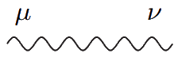
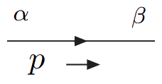
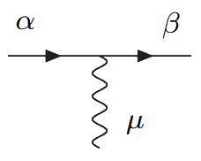

**Quantum Field Theory**
Notes from a series of 11 lectures
# Introduction
We will use natural units in this course, so $c = \hbar = 1$, so roughly $200 \text{MeV fm} \approx 1$. Generally, think of energy as the basic unit in which other quantities can be written in, eg. if energy is measured in GeV, then mass also has units of GeV and length has units of GeV−1. In particular, we have:
+ Velocity is a pure number
+ Energy, momentum, and mass have the same units
+ Length has the inverse units of mass.
In relativity, it is important to have equations that are *relativistically covariant*, ie. an equation that solves for one frame $(t, x, y, z)$ should also solve for $(t', x', y', z')$ after a Lorentz transformation $\Lambda$. To help with this, we use "relativistic covariant notation".
+ A "contravariant" vector is $a^\mu = (a^0, \bolditalic{a})$
+ A "covariant" vector is the dual to the contravariant vector, $a_\mu = g_{\mu\nu}a^\mu = (a^0, -\bolditalic{a})$.
+ $g$ is the metric, $g_{\mu\nu} = g^{\mu\nu} = \fun{diag}(1, -1, -1, -1)$
+ These vectors transform under an LT as:
+ $x^\mu \longrightarrow (x')^\mu = \Lambda^\mu{}_\nu x^\nu$
+ $x_\mu \longrightarrow x'_\mu = \Lambda_\mu{}^\nu x_\nu$
!!!TIP:Examples of LTs
LT representing a boost in the $x$-axis (where $\gamma = 1/\sqrt{1 - \beta^2}$, $\beta = v$): $$\Lambda^\mu{}_\nu = \begin{bmatrix}\gamma & -\beta\gamma & 0 & 0 \\ -\beta\gamma & \gamma & 0 & 0 \\ 0 & 0 & 1 & 0 \\0 & 0 & 0 & 1\end{bmatrix}$$
LT representing a rotation about the $z$-axis: $$\Lambda^\mu{}_\nu = \begin{bmatrix}1 & 0 & 0 & 0 \\ 0 & \cos\theta & -\sin\theta & 0 \\ 0 & \sin\theta & \cos\theta & 0 \\ 0 & 0 & 0 & 1\end{bmatrix}$$
The LT is such that $x'^\mu x'_\mu = x^\mu x_\mu$, ie. *inner products of four-vectors are invariant*. The inner product is defined as $a^\mu b_\mu = a^0 b_0 - \bolditalic{a}\cdot\bolditalic{b}$, where we have implicitly summed over the repeated index:
$$ a^\mu b_\mu = a^0 b_0 + a^1 b_1 + a^2 b_2 + a^3 b_3. $$
This also implies, from the orthogonality property of the rotation matrix $R^\transpose = R^{-1}$, that
$$\Lambda^\transpose g\Lambda = g, \qquad g\Lambda^\transpose g = \Lambda^{-1}.$$
The four-gradient is written as $\partial_\mu$ and is a covariant vector operator:
$$\begin{aligned} \partial_\mu = \frac{\partial}{\partial^\mu} = \paren{\frac{\partial}{\partial t}, \nabla}
\\ \partial^\mu = \paren{\frac{\partial}{\partial t}, -\nabla} \end{aligned}$$
# Klein-Gordon equation
In the Einstein equation, we can promote the energy to the operator
$$ E^2 = \bolditalic{p}^2 + m^2 \implies H^2 = \bolditalic{p}^2 + m^2$$
Then returning to the general Schrödinger equation and expressing it in terms of $H^2$,
$$ H\phi = i\frac{\partial\phi}{\partial t} \implies H^2\phi = -\frac{\partial^2\phi}{\partial t^2}$$
!!!INFO:
We shall usually reserve the Greek symbol $\psi$ for spin 1/2 fermions and $\phi$ for spin 0 bosons.
such that
$$ (\bolditalic{p}^2 + m^2)\phi = -\frac{\partial^2\phi}{\partial t^2}$$
In position space we write the momentum operator as $-i\nabla$, so for zero potential $V$,
$$\paren{\frac{\partial^2}{\partial t^2} - \nabla^2 + m^2}\phi = (\Box + m^2)\phi = 0$$
where $\Box$ is the box, wave, or d'Alembert operator $\Box = \partial_0^2 - \nabla^2 = \partial_\mu\partial^\mu$. This is the **Klein-Gordon equation**. In this case the wave function describes spinless bosons.
The Klein-Gordon equation is relativistically covariant, so $\phi$ must be a scalar function, ie. under a LT remains invariant.
## Failure of relativistic wave equations
The Klein-Gordon equation has plane wave solutions:
$$\phi(x) = Ne^{-i(Et - \bolditalic{p}\cdot\bolditalic{x})}$$
where $N$ is a normalization constant, and $E = \mp\sqrt{\bolditalic{p}^2 + m^2}$. Thus, there are both positive and negative energy solutions. Negative energy solutions produce problems as the the particles they describe would not be thermodynamically stable ($e^{-E/kt}$).
All actual physical systems must thermalise (this is both theoretically predicted and empirically observed). However, the Gibbs (equilibrium) state ($e^{-E/kt}$) is weighted by negative exponential of the energies: if energies were unbounded from below, such an equilibrium state would not be definable (ie. equilibrium wouldn't be attained).
A second problem is that $|\phi(x)|^2$ cannot properly define a probability density, as it does not transform like a density where the density satisfies the Lorentz covariant continuity equation
$$\partial_\mu J^\mu = \partial_0 \rho + \nabla\cdot\bolditalic{J} = 0$$
where $J^\mu = (\rho, \bolditalic{J})$. It is natural to interpret $\rho$ as a probability density and $\bolditalic{J}$ as a probability current. However, for a plane wave solution, $\rho = 2|N|^2 E$, which is not positive definite as $E$ can be negative.
!!!TIP:Derivation of the continuity equation
Let $\phi$ obey the Klein-Gordon equation and define $$\begin{aligned} \rho &= i(\phi^* \partial_0 \phi - \phi \partial_0 \phi^*) \\ \bolditalic{J} &= -i(\phi^*\nabla\phi - \phi\nabla\phi^*). \end{aligned}$$
Then
$$\begin{aligned}\partial_\mu J^\mu &= i(\phi^* \partial_0^2 \phi - \phi \partial_0^2 \phi^*) - i(\phi^*\nabla^2\phi - \phi\nabla^2\phi^*) \\
&= i\paren{\phi^* (\partial_0^2 - \nabla^2) \phi - \phi (\partial_0^2 - \nabla^2) \phi^*} \\
&= i\paren{-m^2 + m^2}|\phi|^2 = 0\end{aligned}$$
where we used the fact that the terms with first-order derivatives cancel out and the Klein–Gordon equation (as well as its complex conjugate).
We can also illustrate these problems with an example, seen in figure [KGReflection], where the solution of the Klein–Gordon equation, considering only one dimension, is
$$\phi(t, x) = \begin{cases}e^{-i(E_pt-px)} + a e^{-i(E_pt+px)} & x \lt 0 \\ b e^{-i(E_pt-kx)} & x \geq 0\end{cases}$$
![Figure [KGReflection]: A unit amplitude incident wave obeying the Klein-Gordon equation encounters a potential barrier of magnitude $V\gt m + E_p$ at $x = 0$, resulting in a reflected wave and a transmitted wave.](media/QFT_KGReflection.png)
Firstly, we can find the boundary values by considering the continuity of $\phi$ and $\partial_x\phi$ at $x=0$, which give $1+a = b$ and $p(1-a) = bk$, and can be rearranged to give
$$a = \frac{p-k}{p+k} \qquad b = \frac{2p}{p+k}.$$
The Klein–Gordon equation in the presence of a potential is obtained by replacing $i\partial_0 \mapsto i\partial_0 - V$, ie. $[(\partial_0 + iV)^2 - \nabla^2 + m^2]\phi = 0$. Then the new form of $\rho$ is $\rho = \phi^*(i\partial_0 - V)\phi - \phi(i\partial_0 + V)\phi^*$. Inserting the solution for $x \lt 0$ where $V = 0$ into the Klein-Gordon we obtain
$$ -E_p^2 + p^2 + m^2 = 0 \implies p = \pm \sqrt{E_p^2 + m^2}$$
We want to ensure that the group velocity is positive to describe a forward travelling incident wave, ie. $v_g = \partial E_p/\partial k \gt 0$. Therefore, we must take $p = +\sqrt{E_p^2 - m^2}$. Inserting the transmitted wave into the equation we get
$$\paren{(-iE_p + iV)^2 + k^2 + m^2} = 0 \implies k = \mp\sqrt{(E_p - V)^2 - m^2}$$
For $x\gt 0$ we get $v_g = k/(E_p - V)$. For this to be positive we must have $k = -\sqrt{(E_p - V)^2 - m^2}$. Now inserting the function $\phi$ into the equations for the 4-current,
$$\begin{aligned} \rho &= i\paren{b(-iE_p + iV)b - \mono{CC}} = 2b^2(E_p - V) \\
J_x &= -i\brackets{\paren{e^{i(E_pt-tx)}+ a^*e^{i(E_pt+px)}}ip\paren{e^{-i(E_pt-tx)} - ae^{-i(E_pt+px)}} - \mono{CC}} \\
&= -i\brackets{(1 - |a|^2 + a^*e^{i2px} - a e^{-i2px})ip - \mono{CC}} = 2p(1-a^2)\end{aligned}$$
The density for $x \gt 0$ is therefore always negative for $V \gt E_p$ and cannot be interpreted as a probability density. Under the additional assumption $V \lt 2E_p$ we see that $|k|\lt p$ and so $a = (p+|k|)/(p-|k|) \gt 1$ which if inserted into $J_x$ also gives a negative current.
We shall see in the following sections that these issues may be solved by interpreting $\phi$ as a field rather than the quantum state associated to a particle, through the process of "second quantisation".
# Lagrangian and Hamiltonian Framework
Define a quantity known as the Lagrangian as $L = T - V$ and a set of coordinates $q_j$ with time-derivatives $\dot{q}_j$. Then the **action** is defined as
$$ S = \int_{t_1}^{t_2} L\paren{q_j, \dot{q}_j, t} \d t.$$
!!!INFO:
$S$ has units of energy-time---the same unit as $\hbar$. So in natural units, $S$ is dimensionless.
The principle of least action states $S$ is an extremum with respect to the variations in the path $q_j(t)$ for a path fixed at $q_j(t_1)$ and $q_j(t_2)$. Then, consider the "true path" $q_j^0$ and a variation $\varepsilon$ on it such that $q_j(t) = q_j^0(t) + \varepsilon_j (t)$ with $\varepsilon_j(t_1) = \varepsilon_j(t_2) = 0$. Evaluate the variation $\delta S$ of the action functional and set it to 0 (least action):
$$\begin{aligned}S &= S^0 + \delta S = \int_{t_1}^{t_2} L(q_j^0 + \varepsilon_j, \dot{q}_j^0 + \dot{\varepsilon}_j)\d t
\\ &= S^0 + \int_{t_1}^{t_2} \sum_j\brackets{\frac{\partial L}{\partial q_j}\varepsilon_j + \frac{\partial L}{\partial \dot{q}_j}\dot{\varepsilon}_j}
\end{aligned}$$
Integrating the second term by parts wrt $t$ gives:
$$ S = S^0 + \sum_j\cancel{\brackets{\frac{\partial L}{\partial \dot{q}_j}\varepsilon_j}_{t_1}^{t_2}} + \underbrace{\int_{t_1}^{t_2}\sum_j\brackets{\frac{\partial L}{\partial q_j} - \frac{\d}{\d t}\paren{\frac{\partial L}{\partial \dot{q}_j}}}\varepsilon_j\,\d t}_{\delta S} $$
In order for $\delta S = 0 \,\forall\, \varepsilon_j(t)$ such that $\varepsilon_j(t_1) = \varepsilon_j(t_2) = 0$ it must be
$$\frac{\partial L}{\partial q_j} = \frac{\d}{\d t}\paren{\frac{\partial L}{\partial\dot{q}_j}} $$
which is known as the Euler-Lagrange equation.
!!!TIP:Example: 1D Particle in potential $V(x)$
We have $L = \frac{1}{2} m\dot{x}^2 - V(x)$ so the Euler Lagrange equations state $$-\frac{\d V}{\d x} = m\ddot{x}$$ which reduces to Newton's equation $F=ma$.
## Hamiltonian
Define the momentum $p_j$ conjugate to $q_j$ as
$$p_j = \frac{\partial L}{\partial\dot{q}_j}.$$
Effectively, we have switched from independent variables $(q_j, \dot{q}_j)$ to $(q_j, p_j)$---therefore all partial derivatives will now be at fixed $p_j$ and $q_j$. (This is known as a Legendre transform of $L$ wrt to $\dot{q}$ and new variable $p$.) Then, define the Hamiltonian as
$$ H(q, p, t) = \sum p_j \dot{q}_j(q_j, p_j) - L(q_j, \dot{q}_j(q_j, p_j),t).$$
!!!TIP:Example: 1D Particle in a central potential
We have $L = \frac{1}{2}m\dot{r}^2 + \frac{1}{2}mr^2\dot{\theta}^2 - V(t)$, so $p_r = m\dot{r}$ and $p_\theta = mr^2\dot{\theta}$. Then the Hamiltonian is $$\begin{aligned}H &= \frac{p_r^2}{m} + \frac{p_\theta^2}{mr^2} - \frac{p_r^2}{2m} - \frac{p_\theta^2}{2mr^2} + V(r)
\\ &= \frac{p_r^2}{2m} + \frac{p_\theta^2}{2mr^2} + V(r) = T + V.\end{aligned}$$
From the above example, we see that $H$ corresponds to the energy and is conserved.
Deriving Hamilton's equations:
$$\begin{cases}\displaystyle\frac{\partial H}{\partial q_j} = \sum_k\paren{\frac{\partial\dot{q}_k}{\partial q_j}p_k - \frac{\partial L}{\partial q_j} - \frac{\partial L}{\partial\dot{q}_k}\frac{\partial\dot{q}_k}{\partial q_j}} = -\frac{\partial L}{\partial q_j} = -\frac{\d}{\d t}\frac{\partial L}{\partial \dot{q}_j} = -\dot{p}_j \\
\displaystyle\frac{\partial H}{\partial p_j} = \sum_k\paren{\dot{q}_j \delta_{jk} + p_k\frac{\partial\dot{q}_k}{\partial p_j} - \frac{\partial L}{\partial\dot{q}_k}\frac{\partial\dot{q}_k}{\partial p_j}} = \dot{q}_j\end{cases}$$
!!!TIP:Example continued
Using Hamilton's equations on the example above gives the equations
$$\begin{aligned}\dot{r}&=\frac{p_r}{m}, \\ \dot{p}_r&=-\frac{\partial V}{\partial r}+\frac{p_\theta^2}{mr^3}\end{aligned}\qquad\begin{aligned}\dot{\theta}&=\frac{p_\theta}{mr^2} \\ \dot{p}_\theta &= 0\phantom{\frac{1}{1}}\end{aligned}$$
## Poisson brackets
Define the poisson bracket as:
$$\{f, g\} = \sum_j\paren{\frac{\partial f}{\partial q_j}\frac{\partial g}{\partial p_j} - \frac{\partial f}{\partial p_j}\frac{\partial g}{\partial q_j} }.$$
Consider any $f(q_j, p_j, t)$. Then from Hamilton's equations,
$$\begin{aligned} \frac{\d f}{\d t} &= \frac{\partial f}{\partial q_j}\frac{\partial q_j}{\partial t} + \frac{\partial f}{\partial p_j}\frac{\partial p_j}{\partial t} + \frac{\partial f}{\partial t} \\
&= \frac{\partial f}{\partial q_j}\frac{\partial H}{\partial p_j} - \frac{\partial f}{\partial p_j}\frac{\partial H}{\partial q_j} + \frac{\partial f}{\partial t} \\
&= \{f, H\} + \partial_t f.\end{aligned}$$
The above equation has parallels to quantum mechanics where the time evolution of the expectation value of an operator is
$$\pointy{\frac{\d \hat{f}}{\d t}} = \frac{1}{i\hbar}\langle[\hat{f}, \hat{H}]\rangle + \pointy{\frac{\partial \hat{f}}{\partial t}}.$$
In fact, Poisson brackets provide the direct link between the classical and (first quantisation) quantum theory:
+ $\{q, q\} = \{p, p\} = 0$
+ $\{q, p\} = 1 \longleftrightarrow [\hat{x}, \hat{p}] = i\hbar$.
!!!TIP:Example of symmetry and conservation laws from Poisson brackets
A 3D particle in a spherically symmetric $V(r)$ where $r = \sqrt{x^2 + y^2 + z^2}$ has the Hamiltonian
$$H = \frac{p^2}{2m} + V(r).$$
The angular momentum is given by $\bolditalic{L} = \bolditalic{r} \times \bolditalic{p}$. Consider only the $x$-direction, $L_x = y p_z - z p_y$ (notice no $x$ or $p_x$ dependence). Then
$$\begin{aligned}\{L_x, H\} &= \paren{\frac{\partial L_x}{\partial y}\frac{\partial H}{\partial p_y} - \frac{\partial L_x}{\partial p_y}\frac{\partial H}{\partial y}} + \paren{\frac{\partial L_x}{\partial z}\frac{\partial H}{\partial p_z} - \frac{\partial L_x}{\partial p_z}\frac{\partial H}{\partial z}} \\
&= \paren{\cancel{p_z \frac{p_y}{m}} + z\frac{\partial V}{\partial y}} + \paren{\cancel{-p_y \frac{p_z}{m}} - y\frac{\partial V}{\partial z}} \\
&= z\frac{\partial V}{\partial r}\frac{\partial r}{\partial y} - y\frac{\partial V}{\partial r}\frac{\partial r}{\partial z} \\
&= z\frac{\partial V}{\partial r}\frac{y}{r} - y\frac{\partial V}{\partial r}\frac{z}{r} \\
&= 0.
\end{aligned}$$
So $\dot{L}_x = 0$ meaning angular momentum components are conserved if there is a spherically symmetric potential.
## Lagrangian Field Theory
![Figure [FieldLagrangianLattice]: Cross-section of a lattice with displacements $\phi_i$.](media/QFT_FieldLagrangianLattice.png)
Say we have a lattice with points $x_j$ at site $j$ spaced between each other with distance $a$ each having a displacement $\phi(x_j) = \phi_j$, which represents a bunch of harmonic oscillators with frequency $\omega$ and mass $1/a$, where the "amplitude" at $x_j$ is $a^2\phi_j$. Then to construct the Lagrangian, we have
+ Kinetic energy (at site $j$): $$T_j = \frac{1}{2}\frac{1}{a}(\partial_t\phi_j a^2)^2 = \frac{a^3}{2}(\partial_t\phi_j)^2$$
+ Local potential energy $$V_j = \frac{1}{2}\frac{1}{a}\omega^2\phi_j^2 a^4 = \frac{a^3}{2}\omega^2\phi_j^2$$
Hence, the total Lagrangian is
$$L_0 = \frac{a^3}{2} \sum_j [(\partial_t\phi_j)^2 - \omega^2\phi_j^2] $$
We can now add an interaction term, representing the tension between sites.
+ The transverse displacement is $V_\text{int} = \sqrt{a^2 + a^4(\phi_{j+1} - \phi_j)^2}$
+ If the transverse displacements are small compared to the equilibrium separation then $V_\text{int} \approx a + \frac{a^3}{2}(\phi_{j+1} - \phi_j)^2$
+ Potential is the sum of the tension $T$ multiplied by the extension summed over all segments: $V_\text{int} = \sum_j\frac{T}{2}a^3(\phi_{j+1} - \phi_j)^2$
+ Extending this to all three dimensions (3D nearest-neighbour potential): $$V_\text{int} = a^3\kappa\sum_{j, \bolditalic{\mu}_k}(\phi(\bolditalic{x}_j + \bolditalic{\mu}_k, t) - \phi(x_j, t))^2$$ where $\kappa$ is an unknown coupling constant, and $\bolditalic{\mu}_k = a\bolditalic{e}_k$ where $\bolditalic{e}_k$ is the unit vector along the $k$-spacial dimension.
To get from discrete to continuous, we take the **continuum limit** by letting $a\to 0$, and $a^3\sum_j \mapsto \int \d^3\bolditalic{x}$. When $a\to 0$,
$$\begin{aligned} \phi(\bolditalic{x}_j + \bolditalic{\mu}_k, t) - \phi(x_j, t) &\approx \cancel{\phi(\bolditalic{x}_j, t)} + a \frac{\partial\phi}{\partial x_k} - \cancel{\phi(\bolditalic{x}_j, t)} + \call{O}(a^2) \\
\sum_{j, \bolditalic{\mu}_k}(\phi(\bolditalic{x}_j + \bolditalic{\mu}_k, t) - \phi(x_j, t))^2 &\approx a^2(\nabla\phi)^2 + \call{O}(a^4)\end{aligned}$$
so ignoring higher orders and setting $\kappa = 1/(2a^2)$ for Lorentz invariance, we now have
$$L = \int \frac{1}{2} \d^3\bolditalic{x}\underbrace{\brackets{(\partial_t \phi)^2 - (\nabla\phi)^2 - \omega^2\phi^2}}_{\call{L}}$$
and the action
$$ S = \int\d^4 x \call{L} = \int \d t L = \int \d^4 x \frac{1}{2}\paren{\partial^\mu \phi\partial_\mu\phi - \omega^2 \phi^2}$$
where $\call{L}(\phi, \partial_\mu\phi)$ is the Lorentz-covariant "Lagrangian density". Then we can rederive the Euler-Lagrange equation for fields, which has a similar process to above. Consider a arbitrary small variation $\varepsilon(\bolditalic{x}, t)$ on $\phi^0(\bolditalic{x}, t)$ such that $\phi(\bolditalic{x}, t) = \phi^0(\bolditalic{x}, t) + \varepsilon(\bolditalic{x}, t)$. Then
$$\begin{aligned} \delta S &= \int\d^4x \paren{\frac{\partial\call{L}}{\partial(\partial_\mu \phi)}\partial_\mu\varepsilon + \frac{\partial\call{L}}{\partial\phi}\varepsilon} \\
& = \brackets{\cancel{\frac{\partial\call{L}}{\partial(\partial_\mu \phi)}\varepsilon}} + \int\d^4 x\paren{- \partial_\mu\frac{\partial\call{L}}{\partial(\partial_\mu\phi)} + \frac{\partial\call{L}}{\partial\phi}}\varepsilon = 0\end{aligned}$$
The first term is zero due to the fixed boundary conditions. Therefore, we have
$$ \boxed{\frac{\partial\call{L}}{\partial\phi} = \partial_\mu\frac{\partial\call{L}}{\partial(\partial_\mu\phi)}} $$
Then using this for our $\call{L}$ gives
$$\frac{\partial\call{L}}{\partial\phi} = -\omega^2\phi; \quad \frac{\partial\call{L}}{\partial(\partial\phi/\partial t)} = \frac{\partial\phi}{\partial t}; \quad \frac{\partial\call{L}}{\partial(\partial\phi/\partial x_k)} = -\frac{\partial\phi}{\partial x_k}$$
so the equation reads
$$\begin{aligned} \frac{\partial}{\partial t}\frac{\partial\phi}{\partial t} + \nabla\cdot(-\nabla\phi) + \omega^2\phi &= 0 \\
(\Box + \omega^2)\phi &= 0\end{aligned}$$
which is exactly the same as the Klein-Gordon equation with $m=\omega$.
To identify the field Hamiltonian density, consider that physics should be invariant under transformations $x^\mu \to x^\mu + \alpha^\mu$ which give rise to a conservation of the energy-momentum tensor
$$\Theta_{\mu\nu} = \frac{\partial\call{L}}{\partial(\partial^\mu\phi)}\partial_\nu\phi - g_{\mu\nu}\call{L}$$
given by $\partial^\mu\Theta_{\mu\nu} = 0$. In particular,
$$ E = \int\d^3 \bolditalic{x} \Theta_{00} \qquad \Theta_{00} = \frac{\partial\call{L}}{\partial(\partial^0\phi)}\partial_0\phi - \call{L}$$
such that
$$\frac{\partial E}{\partial t} = \int\d^3 \bolditalic{x} \frac{\partial\Theta_{00}}{\partial t} = \int\d^3 \bolditalic{x}\nabla\cdot\bolditalic{\Theta}_0 = \int\d^2 \bolditalic{S}\cdot\bolditalic{\Theta}_0 $$
where $\bolditalic{\Theta}_0 = \Theta_{j0}, j=1,2,3$. $\Theta_{00}$ will be the Hamiltonian density $\call{H}$. We can now define the *conjugate momentum field*
$$ \boxed{\pi = \frac{\partial\call{L}}{\partial(\partial\phi/\partial t)}} $$
such that
$$ \call{H} = \pi\frac{\partial\phi}{\partial t} - \call{L}, \qquad H = \int\d^3\bolditalic{x}\call{H}.$$
For the Klein-Gordon field, the Hamiltonian is
$$ \call{H} = \frac{1}{2}\paren{\pi^2 + (\nabla\phi)^2 + m^2\phi^2}$$
and the equation of motion for $\phi$ is
$$\frac{\partial\phi}{\partial t} = \frac{\partial\call{H}}{\partial\pi} = \{\phi, \call{H}\}.$$
!!!TIP:Proof
It will suffice to differentiate $\call{H}$ with respect to $\pi$, recalling that $\call{L}$ depends on $\phi$ and $\partial_\mu\phi$ and that the partial derivatives are taken at fixed $\phi$ and $\pi$:
$$\begin{aligned}\frac{\partial\call{H}}{\partial \pi} &= \brackets{\frac{\partial\phi}{\partial t}\frac{\partial \pi}{\partial \pi} + \frac{\partial(\partial\phi/\partial t)}{\partial \pi}\pi} - \frac{\partial(\partial\phi/\partial t)}{\partial \pi}\frac{\partial\call{L}}{\partial(\partial\phi/\partial t)} \\
&= \frac{\partial\phi}{\partial t} + \frac{\partial(\partial\phi/\partial t)}{\partial \pi}\pi - \frac{\partial(\partial\phi/\partial t)}{\partial \pi}\pi \\
&= \frac{\partial\phi}{\partial t} \end{aligned}$$
Therefore, extending the definition of Poisson brackets to the Hamiltonian density in the terms of partial derivatives (typically, the standard definition of Poisson brackets applies to quantities integrated over space in terms of variations of the fields and their conjugate momenta):
$$\frac{\partial\phi}{\partial t} = \frac{\partial\call{H}}{\partial\pi} = \{\phi, \call{H}\}.$$
Such Poisson brackets will become commutators (with respect to the integrated Hamiltonian density) in quantum field theory.
# Second Quantisation
Hamiltonian for simple harmonic oscillator is
$$\hat{H} = \frac{\hat{p}^2}{2m} + \frac{1}{2}m\omega^2 \hat{x}^2$$
where $[\hat{x},\hat{p}] = i$. One approach to solving this is to use two operators
$$\begin{aligned} \hat{a} &= \frac{1}{\sqrt{2}}\paren{\sqrt{m\omega}\hat{x} + \frac{i}{\sqrt{mw}}\hat{p}} \\
\hat{a}^\dagger &= \frac{1}{\sqrt{2}}\paren{\sqrt{m\omega}\hat{x} - \frac{i}{\sqrt{mw}}\hat{p}} \end{aligned}$$
So we have $[\hat{a}, \hat{a}^\dagger] = 1$ and $\hat{H} = (\hat{a}^\dagger\hat{a} + 1/2)\omega$. Consider the spectrum of $\hat{a}^\dagger\hat{a}$: suppose $\hat{a}^\dagger\hat{a}\ket{\lambda} = \lambda\ket{\lambda}$. Then
$$ \hat{a}^\dagger\hat{a}\brackets{\hat{a}\ket{\lambda}} = \hat{a}(\hat{a}^\dagger\hat{a} - 1)\ket{\lambda} = \hat{a}(\lambda - 1)\ket{\lambda} = (\lambda - 1)\brackets{\hat{a}\ket{\lambda}} $$
Repeated applications of $\hat{a}$ would end up in a negative eigenvalue, which is mathematically impossible since, if in fact $\hat{a}^\dagger\hat{a}\ket{\lambda} = \lambda\ket{\lambda}$ for $\pointy{\lambda\mid\lambda} = 1$ and $\lambda \lt 0$, then $\bra{\lambda}\hat{a}^\dagger\hat{a}\ket{\lambda} = \lambda \lt 0$, but $\bra{\lambda}\hat{a}^\dagger\hat{a}\ket{\lambda}$ is the squared modulus of vector $\hat{a}\ket{\lambda}$ which can't be negative.
The only way out is that there exists a state $\ket{0}$ such that $\hat{a}^\dagger\hat{a}\ket{0} = 0$ so spectrum of $\hat{a}^\dagger\hat{a}$ is $\struck{N}$, and therefore the spectrum of $\hat{H}$ is $E_n = (n + 1/2)\omega$ with $n\in\struck{N}$. $\ket{0}$ is known as the ground state where $\hat{H}\ket{0} = (\omega/2)\ket{0}$, the first excited state is $\hat{a}^\dagger\ket{0}$, and the $n$th is
$$\ket{n} = \frac{1}{\sqrt{n!}}(\hat{a}^\dagger)^n\ket{0}.$$
!!!TIP:Proof $\ket{n}$ is normalised
The normalisation $\pointy{n|n} = 1$ is equivalent to $\bra{0}\hat{a}^n\hat{a}^{\dagger n}\ket{0}$ which we set to prove. One has $[\hat{a},\hat{a}^\dagger] = 1$ and therefore
$$\begin{aligned} \hat{a}^n\hat{a}^{\dagger n} &= \hat{a}^{n-1}\hat{a}^\dagger\hat{a}\hat{a}^{\dagger n-1} + \hat{a}^{n-1}\hat{a}^{\dagger n-1} \\
&= \hat{a}^{n-1}\hat{a}^{\dagger 2}\hat{a}\hat{a}^{\dagger n-2} + 2\hat{a}^{n-1}\hat{a}^{\dagger n-1} \\
&= \hat{a}^{n-1}\hat{a}^{\dagger n}\hat{a} + n\hat{a}^{n-1}\hat{a}^{\dagger n-1} \\
&= \hat{a}^{n-1}\hat{a}^{\dagger n}\hat{a} + n\hat{a}^{n-2}\hat{a}^{\dagger n-1}\hat{a} + n(n-1)\hat{a}^{n-2}\hat{a}^{\dagger n-2} \\
&= \hat{a}^{n-1}\hat{a}^{\dagger n}\hat{a} + \sum_{j=0}^n \paren{n^{\underline{j+1}} \hat{a}^{n-2-j}a^{\dagger n-1-j}\hat{a}} + n! \end{aligned}$$
where $n^{\underline{j+1}}$ is the falling factorial $\prod_{k=0}^j (n-k)$. But $\hat{a}\ket{0} = 0$, so $\hat{a}^n\hat{a}^{\dagger n}\ket{0} = n!\ket{0}$ and $\bra{0}\hat{a}^n\hat{a}^{\dagger n}\ket{0} = n!$ follows from $\pointy{0|0} = 1$.
## Quantisation on a lattice
We have the Lagrangian
$$ L = \frac{a^3}{2}\sum_j\paren{\dot{\phi}_j^2 - \kappa\sum_{\boldsymbol{\mu}_k}(\phi(\bolditalic{x}_j + \bolditalic{\mu}_k, t) - \phi(\bolditalic{x}_j, t))^2 - m^2\phi_j^2}$$
where $\phi_j = \phi(\bolditalic{x}_j, t)$. The conjugate momenta is $p_j = \partial L/\partial\dot{\phi}_j = a^3\dot{\phi}_j$, such that the Hamiltonian is
$$ H = \frac{1}{2}\sum_j\paren{\frac{p_j^2}{a^3} - \kappa a^3\sum_{\boldsymbol{\mu}_k}(\phi(\bolditalic{x}_j + \bolditalic{\mu}_k, t) - \phi(\bolditalic{x}_j, t))^2 - m^2\phi_j^2} $$
This is first quantisation. "Second quantisation" consists in letting $\phi_j$ become operators $\hat{\phi}_j$ such that $[\hat{\phi}_j, \hat{p}_k] = i\delta_{jk}$. Also define (conjugate) field momentum
$$\hat{\pi}_j = \dot{\hat{\phi}}(\bolditalic{x}_j) = \frac{\hat{p}_j}{a^3} \implies [\hat{\phi}_j, \hat{\pi}_k] = i\frac{\delta_{jk}}{a^3}$$
Without "self-interaction" ($\kappa = 0$) we have the Hamiltonian
$$ H = a^3\sum_j \hat{H}_j = a^3\sum_j\paren{\hat{\pi}_j^2 + m^2\hat{\phi}_j^2} $$
we see each $\hat{H}_j$ is a "simple" quantum harmonic oscillator. Define then:
$$\left.\begin{aligned}\hat{a}_j = \frac{1}{\sqrt{2}}(m\hat{\phi}_j + i\hat{\pi}_j)
\\ \hat{a}^\dagger_j = \frac{1}{\sqrt{2}}(m\hat{\phi}_j - i\hat{\pi}_j) \end{aligned}\right\} \hat{\phi}_j = \frac{1}{\sqrt{2}}\frac{\hat{a}_j + \hat{a}^\dagger_j}{m}$$
which destroy and create particles! Now consider "self-interaction" ($\kappa \neq 0$) where $\hat{H}_\text{int} = \hat{H} - a^3\sum_j \hat{H}_j$ contains other $\hat{\phi}_j^2$ terms plus the term
$$-2a^3\kappa \sum_{j,\bolditalic{\mu}_k}\hat{\phi}(\bolditalic{x}_j + \bolditalic{\mu}_k, t)\hat{\phi}(\bolditalic{x}_j, t) = \frac{-a^3\kappa}{m^2}\sum_{j,\bolditalic{\mu}_k}(\hat{a}(\bolditalic{x}_j + \bolditalic{\mu}_k) + \hat{a}^\dagger(\bolditalic{x}_j + \bolditalic{\mu}_k))(\hat{a}(\bolditalic{x}_j) + \hat{a}^\dagger(\bolditalic{x}_j))$$
Moving to the continuum limit. First, commutation rules: since $[\hat{\phi}_j, \hat{\pi}_k] = (i/a^3)\delta_{jk}$,
$$\begin{aligned}{}[\phi(\bolditalic{x}), \phi(\bolditalic{y})] &= 0 \\ [\pi(\bolditalic{x}), \pi(\bolditalic{y})] &= 0 \\ [\phi(\bolditalic{x}), \pi(\bolditalic{y})] &= i\delta^3(\bolditalic{x} - \bolditalic{y})\end{aligned}$$
Then (Fourier transforms):
$$\begin{aligned} \tilde{\phi}(\bolditalic{p}) = \int\d^3\bolditalic{x} \phi(\bolditalic{x}) e^{-i\bolditalic{p}\cdot\bolditalic{x}} \implies \phi(\bolditalic{x}) = \int\d^3\bolditalic{p} \frac{e^{i\bolditalic{p}\cdot\bolditalic{x}}}{(2\pi)^3}\tilde{\phi}(\bolditalic{p}) \\
\tilde{\pi}(\bolditalic{p}) = \int\d^3\bolditalic{x} \pi(\bolditalic{x}) e^{-i\bolditalic{p}\cdot\bolditalic{x}} \implies \pi(\bolditalic{x}) = \int\d^3\bolditalic{p} \frac{e^{i\bolditalic{p}\cdot\bolditalic{x}}}{(2\pi)^3}\tilde{\pi}(\bolditalic{p})\end{aligned}$$
!!!INFO:
The factor $1/(2\pi)^3$ appears as $\delta^3(\bolditalic{x}) = 1/(2\pi)^3\int_{\struck{R}^3}\d^3\bolditalic{p} e^{i\bolditalic{p}\cdot\bolditalic{x}}$
with the commutation relations
$$\begin{aligned} {}[\tilde{\phi}(\bolditalic{p}), \tilde{\pi}(\bolditalic{q})] &= \int\d^3\bolditalic{x}\int\d^3\bolditalic{y} e^{-i(\bolditalic{px} + \bolditalic{qy})}[\phi(\bolditalic{x}), \pi(\bolditalic{y})] \\
&= i\int\d^3\bolditalic{x}\int\d^3\bolditalic{y} e^{-i(\bolditalic{px} + \bolditalic{qy})}\delta^3(\bolditalic{x}-\bolditalic{y}) \\
&= i\int\d^3\bolditalic{x} e^{i(\bolditalic{p}+\bolditalic{q})\cdot\bolditalic{x}} = i(2\pi)^3\delta^3 (\bolditalic{p} + \bolditalic{q}) \\
[\tilde{\phi}(\bolditalic{p}), \tilde{\phi}(\bolditalic{q})] &= [\tilde{\pi}(\bolditalic{p}), \tilde{\pi}(\bolditalic{q})] = 0.\end{aligned}$$
!!!INFO:
The Lagrangian and Hamiltonian densities in the continuum limit are still covariant.
$$\call{L} = \frac{1}{2}\paren{(\partial_t \phi)^2 + (\nabla\phi)^2 - m^2\phi^2} = \frac{1}{2}\paren{\partial_\mu\phi\partial^\mu\phi - m^2\phi^2}$$
which is manifestly covariant. This results into
$$H = \frac{1}{2}(\pi^2 (\nabla\phi)^2 + m^2\phi^2)$$
Dynamics is still covariant (but that's hard to tell!)
Now let's construct the Hamiltonian in the continuum limit.
$$\int \d^3\bolditalic{x} \phi^2(\bolditalic{x}) = \int \d^3\bolditalic{x}\iint \frac{\d\bolditalic{p}^3 \d\bolditalic{q}^3}{(2\pi)^6}\tilde{\phi}(\bolditalic{p})\tilde{\phi}(\bolditalic{q}) e^{i(\bolditalic{p}+\bolditalic{q})\cdot\bolditalic{x}} = \frac{1}{(2\pi)^3}\int\d^3\bolditalic{p}\tilde{\phi}(\bolditalic{p})\tilde{\phi}(-\bolditalic{p})$$
Likewise,
$$\int \d^3\bolditalic{x} \pi^2(\bolditalic{x}) = \frac{1}{(2\pi)^3}\int\d^3\bolditalic{p}\tilde{\pi}(\bolditalic{p})\tilde{\pi}(-\bolditalic{p})$$
As we remove the lattice's interaction between neighbouring sites, we have the additional term, which after using a Fourier transform:
$$\begin{aligned} \int\d^3\bolditalic{x}(\nabla\phi(\bolditalic{x}))^2 &= \int\d^3\bolditalic{x}\int\d^3\bolditalic{p}\int\d^3\bolditalic{q} \frac{1}{(2\pi)^6}e^{i(\bolditalic{p}+\bolditalic{q})\cdot\bolditalic{x}}(-\bolditalic{p}\cdot\bolditalic{q})\tilde{\phi}(\bolditalic{p})\tilde{\phi}(\bolditalic{q}) \\
&= \int\d^3\bolditalic{p}\frac{1}{(2\pi)^3}\bolditalic{p}^2 \tilde{\phi}(\bolditalic{p})\tilde{\phi}(-\bolditalic{p}) \end{aligned}$$
which gives the quantum field Hamiltonian
$$\frac{1}{2}\int\d^3\bolditalic{p}\frac{1}{(2\pi)^3}\big(\tilde{\pi}(\bolditalic{p})\tilde{\pi}(-\bolditalic{p}) + \underbrace{(m^2+\bolditalic{p}^2)}_{E_\bolditalic{p}^2}\tilde{\phi}(\bolditalic{p})\tilde{\phi}(-\bolditalic{p})\big)$$
where we have the energy "on-shell" $E_\bolditalic{p} = +\sqrt{m^2 + \bolditalic{p}^2}$.
Now define
$$\boxed{\begin{aligned} a_\bolditalic{p} &= E_\bolditalic{p}\tilde{\phi}(\bolditalic{p})+ i\tilde{\pi}(\bolditalic{p}) \\
a_\bolditalic{p}^\dagger &= E_\bolditalic{p}\tilde{\phi}(-\bolditalic{p}) - i\tilde{\pi}(-\bolditalic{p}) \end{aligned}}$$
which have the commutations
$$\begin{aligned} {}[a_\bolditalic{p}, a_\bolditalic{q}^\dagger] &= -iE_\bolditalic{q}[\tilde{\phi}(\bolditalic{q}), \tilde{\pi}(-\bolditalic{p})] + iE_\bolditalic{p}[\tilde{\pi}(\bolditalic{q}), \tilde{\phi}(-\bolditalic{p})] \\
&= 2(2\pi)^3E_\bolditalic{p}\delta^3(\bolditalic{p}-\bolditalic{q}) \\
[a_\bolditalic{p}, a_\bolditalic{q}] &= [a_\bolditalic{p}^\dagger, a_\bolditalic{q}^\dagger] = 0 \end{aligned}$$
Now re-writing the Hamiltonian,
$$a_\bolditalic{p}^\dagger a_\bolditalic{p} = (\tilde{\pi}(\bolditalic{p})\tilde{\pi}(-\bolditalic{p}) + E_\bolditalic{p}^2\tilde{\phi}(\bolditalic{p})\tilde{\phi}(-\bolditalic{p}) + iE_\bolditalic{p}(\tilde{\phi}(-\bolditalic{p})\tilde{\pi}(\bolditalic{p}) - \tilde{\pi}(-\bolditalic{p})\tilde{\phi}(\bolditalic{p})))$$
So
$$H = \frac{1}{2}\int\frac{\d^3\bolditalic{p}}{(2\pi)^3}a_\bolditalic{p}^\dagger a_\bolditalic{p} + \frac{1}{2}\int\frac{\d^3\bolditalic{p}}{(2\pi)^3}E_\bolditalic{p}(\tilde{\phi}(-\bolditalic{p})\tilde{\pi}(\bolditalic{p}) - \tilde{\pi}(+\bolditalic{p})\tilde{\phi}(-\bolditalic{p}))$$
Where we switched the signs in the last term. Simplifying
$$H = \frac{1}{2}\int\frac{\d^3\bolditalic{p}}{(2\pi)^3}a_\bolditalic{p}^\dagger a_\bolditalic{p} + \frac{1}{2}\delta^3(0)\int\frac{\d^3\bolditalic{p}}{(2\pi)^3}$$
Though we have an infinite zero-point energy. But we can rewrite this as
$$ \boxed{H = \frac{1}{4}\int\frac{\d^3\bolditalic{p}}{(2\pi)^3}(a_\bolditalic{p}^\dagger a_\bolditalic{p} + a_\bolditalic{p}a_\bolditalic{p}^\dagger).}$$
We define a normal-ordered operator, denoted by ${:}O{:}$ as the same function of the field operators $a_\bolditalic{p}$ and $a_\bolditalic{p}^\dagger$ but with all $a_\bolditalic{p}^\dagger$ on the left and all $a_\bolditalic{p}$ on the right. Hence
$${:}H{:} = \frac{1}{4}\int\frac{\d^3\bolditalic{p}}{(2\pi)^3}2a_\bolditalic{p}^\dagger a_\bolditalic{p} = \int\frac{\d^3\bolditalic{p}}{2E_\bolditalic{p}(2\pi)^3}E_\bolditalic{p}a_\bolditalic{p}^\dagger a_\bolditalic{p} $$
By definition, $\bra{0}{:}H{:}\ket{0} = 0$. This normal-ordered Hamiltonian now ignores the ground state energy. In the rightmost expression above, separated the integral out into a phase space integral and an integrand. This phase space is Lorentz invariant in standard four-dimensional space time. To see this, consider the full expression for the four-dimensional integration for real particles is
$$\int\frac{\d^3\bolditalic{p}\d E_\bolditalic{p}}{(2\pi)^3}\delta^+(E_\bolditalic{p}^2 - p^2 + m^2)$$
which is manifestly Lorentz invariant. Then, we can write
$$\begin{aligned} \delta^+(E_\bolditalic{p}^2 - p^2 + m^2) &= \delta^+\paren{(E_\bolditalic{p} - \sqrt{p^2 + m^2})(E_\bolditalic{p} + \sqrt{p^2 + m^2})} \\
&= \delta(E_\bolditalic{p} - \sqrt{p^2 + m^2})\frac{1}{E_\bolditalic{p} + \sqrt{p^2 + m^2}} \\
&= \frac{1}{2E_\bolditalic{p}}\delta(E_\bolditalic{p} - \sqrt{p^2 + m^2}) \end{aligned}$$
from
$$ \int \delta(f(x))g(x)\, \d x = \int \d f\paren{\frac{\d f}{\d x}}^{-1} \delta(f(x)) g(x) = \brackets{\paren{\frac{\d f}{\d x}}^{-1} g(x)}_{f(x)=0}.$$
Therefore
$$ \int\frac{\d^3\bolditalic{p}\d E_\bolditalic{p}}{(2\pi)^3}\delta^+(E_\bolditalic{p}^2 - p^2 + m^2) = \int\frac{\d^3\bolditalic{p}}{2E_\bolditalic{p}(2\pi)^3} $$
so the phase space integral is also Lorentz invariant.
Quantum states are just vectors $\ket{\Psi}$ of the Hilbert space we introduced when we promoted $\phi$ to an operator. For instance, $\ket{\Psi} = \ket{n_1, n_2, \cdots}$ might be a state with $n_j$ particles with momentum $p_j$. So, $a_\bolditalic{p}^\dagger \ket{0}$ is a state of the field that we call a "particle", and which in principle can make a detector click. Consider now an eigenstate of the Hamiltonian ${:}H{:}\ket{\Psi} = E\ket{\Psi}$. Let's act on it with $a_\bolditalic{p}^\dagger$: $\ket{\Psi'} = a_\bolditalic{p}^\dagger\ket{\Psi}$, so
$$\begin{aligned} {:}H{:}\ket{\Psi'} &= \int\frac{\d^3\bolditalic{q}}{2E_\bolditalic{q}(2\pi)^3}E_\bolditalic{q}a_\bolditalic{q}^\dagger a_\bolditalic{q} a_\bolditalic{p}^\dagger\ket{\Psi} \\
&= \int\frac{\d^3\bolditalic{q}}{2(2\pi)^3}a_\bolditalic{q}^\dagger(a_\bolditalic{p}^\dagger a_\bolditalic{q} + (2\pi)^3 2E_\bolditalic{p}\delta(\bolditalic{p}-\bolditalic{q}))\ket{\Psi} \\
&= a_\bolditalic{p}^\dagger(H + E_\bolditalic{p})\ket{\Psi} \\
&= (E + E_\bolditalic{p})a_\bolditalic{p}^\dagger\ket{\Psi} = (E + E_\bolditalic{p})\ket{\Psi'}\end{aligned}$$
This means that the operator $a_\bolditalic{p}^\dagger$ creates a particle with specific momentum $\bolditalic{p}$ and "on-shell" energy $E_\bolditalic{p}$. Similarly, $a_\bolditalic{p}$ annihilates a particle. The ground state is then defined by $a_\bolditalic{p}\ket{0} = 0$ and hence ${:}H{:}\ket{0} = 0$.
The annihilation and creation field operations can be related to the momentum-space field as
$$\tilde{\phi}(\bolditalic{p}) = \frac{a_\bolditalic{p} + a_{-\bolditalic{p}}^\dagger}{2E_\bolditalic{p}} \qquad \tilde{\pi}(\bolditalic{p}) = i\frac{-a_\bolditalic{p} + a_{-\bolditalic{p}}^\dagger}{2}$$
of which the Fourier transforms are
$$\boxed{\begin{aligned}\phi(\bolditalic{x}) &= \int\frac{\d^3\bolditalic{p}}{2E_\bolditalic{p}(2\pi)^3}(e^{i\bolditalic{p}\cdot\bolditalic{x}}a_\bolditalic{p} + e^{-i\bolditalic{p}\cdot\bolditalic{x}}a_\bolditalic{p}^\dagger) \\
\pi(\bolditalic{x}) &= i\int\frac{\d^3\bolditalic{p}}{2(2\pi)^3}(-e^{i\bolditalic{p}\cdot\bolditalic{x}}a_\bolditalic{p} + e^{-i\bolditalic{p}\cdot\bolditalic{x}}a_\bolditalic{p}^\dagger)\end{aligned}}$$
which satisfy the commutation relation $[\phi(\bolditalic{x}), \pi(\bolditalic{y})] = i\delta^3(\bolditalic{x}-\bolditalic{y})$ as mentioned earlier.
# Time dependent free fields
Typically, QM is described in the Schrödinger picture, where operators are fixed and the states evolve:
$$\frac{\d Q}{\d t} = 0 \qquad \begin{aligned}\frac{\d}{\d t}\ket{\Psi} &= -iH\ket{\Psi} \\ \ket{\Psi} &= e^{-iH(t - t_0)}\ket{\Psi(t_0)}\end{aligned}$$
which is completely equivalent to the Heisenberg picture, where operators evolve while the state vector is time independent:
$$\begin{aligned} \frac{\d Q_H}{\d t} &= -i[Q_H, H] \\ Q(t) &= e^{iH(t-t_0)}Q(t_0)e^{-iH(t-t_0)}\end{aligned}\qquad \ket{\Psi(t)} = \ket{\Psi(t_0)} $$
since expectation values are the same: $\bra{\Psi(t_0)}e^{iH(t-t_0)}Q(t_0)e^{-iH(t-t_0)}\ket{\Psi(t_0)}$. It is often most convenient to define a quantum field theory in the Heisenberg picture and specifies the initial state (eg. by setting the number of particles with given momentum).
In the Heisenberg picture, if $a_\bolditalic{p}^\dagger$ is $a_\bolditalic{p}^\dagger(t)$ at $t=0$, then
$$a_\bolditalic{p}^\dagger(t) = e^{iHt}a_\bolditalic{p}^\dagger e^{-iHt}, \qquad H = \int\frac{\d^3\bolditalic{q}}{2(2\pi)^3}a_\bolditalic{q}^\dagger a_\bolditalic{q}$$
where $e^{iHt} = I + itH + (itH)^2/2 + \cdots$. To move $a_\bolditalic{p}^\dagger$ through $e^{iHt}$ consider
$$[a_\bolditalic{q}, a_\bolditalic{p}^\dagger] = 2E_\bolditalic{p}(2\pi)^3\delta(\bolditalic{p}-\bolditalic{q}) \implies a_\bolditalic{q} a_\bolditalic{p}^\dagger = a_\bolditalic{p}^\dagger a_\bolditalic{q} + 2E_\bolditalic{p}(2\pi)^3\delta(\bolditalic{p}-\bolditalic{q})$$
such that
$$ Ha_\bolditalic{p}^\dagger = \int\frac{\d^3 \bolditalic{q}}{2(2\pi)^3} a_\bolditalic{q}^\dagger a_\bolditalic{q} a_\bolditalic{p}^\dagger = a_\bolditalic{p}^\dagger(H + E_\bolditalic{p})$$
Iterate to get
$$e^{iHt}a_\bolditalic{p}^\dagger e^{-iHt} = a_\bolditalic{p}^\dagger e^{i(H + E_\bolditalic{p})t}e^{-iHt} = e^{iE_\bolditalic{p}t}a_\bolditalic{p}^\dagger$$
which can be inserted into equations for $\phi(\bolditalic{x})$ and $\pi(\bolditalic{x})$ in terms of $a_\bolditalic{p}$ and $a_\bolditalic{p}^\dagger$ to get:
$$\begin{aligned} \phi_H(t, \bolditalic{x}) = \phi_H(\bolditalic{x}) &= \int\frac{\d^3\bolditalic{p}}{2E_\bolditalic{p} (2\pi)^3}(e^{i(\bolditalic{p}\cdot\bolditalic{x} - E_\bolditalic{p}t)}a_\bolditalic{p} + e^{i(E_\bolditalic{p}t - \bolditalic{p}\cdot\bolditalic{x})}a_\bolditalic{p}^\dagger) \\
&= \int\frac{\d^3\bolditalic{p}}{2E_\bolditalic{p} (2\pi)^3}(e^{-ip\cdot x}a_\bolditalic{p} + e^{ip\cdot x}a_\bolditalic{p}^\dagger) \\
\pi_H(\bolditalic{x}) &= i\int\frac{\d^3\bolditalic{p}}{2(2\pi)^3}(-e^{-ip\cdot x}a_\bolditalic{p} + e^{ip\cdot x}a_\bolditalic{p}^\dagger)\end{aligned}$$
and the field commutators are governed by
$$\begin{aligned} {}[\phi(x), \phi(y)] &= \iint \frac{\d^3\bolditalic{p}\d^3 \bolditalic{q}}{4E_\bolditalic{p}E_\bolditalic{q}(2\pi)^6}[e^{-ip\cdot x}a_\bolditalic{p} + e^{ip\cdot x}a_\bolditalic{p}^\dagger, e^{-iq\cdot y}a_\bolditalic{q} + e^{iq\cdot y}a_\bolditalic{q}^\dagger] \\
&= \iint \frac{\d^3\bolditalic{p}\d^3 \bolditalic{q}}{4E_\bolditalic{p}E_\bolditalic{q}(2\pi)^6}\paren{e^{i(p\cdot x - q\cdot y)}[a_\bolditalic{p}^\dagger, a_\bolditalic{q}] + e^{i(-p\cdot x + q\cdot y)}[a_\bolditalic{p}, a_\bolditalic{q}^\dagger]} \\
&= \iint \frac{\d^3\bolditalic{p}}{2E_\bolditalic{p}(2\pi)^3}\d^3 \bolditalic{q}\delta^3(\bolditalic{p}-\bolditalic{q})\paren{-e^{ip\cdot x - iq\cdot y} + e^{iq\cdot y i -ip\cdot x}} \\
&= \int \frac{\d^3\bolditalic{p}}{2E_\bolditalic{p}(2\pi)^3}(e^{-ip\cdot(x-y)} - e^{ip\cdot(x-y)}) \\
&= -i \int \frac{\d^3\bolditalic{p}}{E_\bolditalic{p}(2\pi)^3} \sin(p\cdot(x-y))\end{aligned}$$
+ $[\phi(x), \phi(y)]$ is always 0 for "space-like" $x, y$, ie. $(x-y)^2 \lt 0$
+ $[\phi(x), \phi(y)]$ is not necessarily 0 for time-like seperations, ie. $(x-y)^2 \gt 0$.
!!!TIP:Proof
__Space-like seperations__
Without loss of generality, if $(x-y)^2 \lt 0$ we can set $x^0 - y^0 = 0$ (there always exist an inertial frame where this is satisfied, and the whole expression must be Lorentz invariant). So one gets:
$$[\phi(x), \phi(y)] = i \int \frac{\d^3\bolditalic{p}}{E_\bolditalic{p}(2\pi)^3} \sin(\bolditalic{p}\cdot(\bolditalic{x}-\bolditalic{y})) = 0,$$
since the integrand is odd in $\bolditalic{p}$ and the Cauchy principal value of an odd function is always zero (as $\int_{-c}^{c} \d xf_\text{odd}(x) = 0$ for odd $f_\text{odd}(x)$ regardless of $c$.)
__Time-like seperations__
We can consider a time-like separation by putting $\bolditalic{x} = \bolditalic{y}$ and looking at all possible values of $(t_1 - t_2)^2$, thus generating all possible $(x - y)^2 \gt 0$. In this case
$$\begin{aligned} {}[\phi(x), \phi(y)] &= \int\frac{\d^3\bolditalic{p}}{2E_\bolditalic{p}(2\pi)^3}(e^{-iE_\bolditalic{p}\cdot(t_1-t_2)} - e^{iE_\bolditalic{p}\cdot(t_1-t_2)}) \\
&= i\int \frac{\d^3\bolditalic{p}}{E_\bolditalic{p}(2\pi)^3} \sin(E_\bolditalic{p}\cdot(t_2 - t_1)), \end{aligned}$$
which is not equal to 0 in general.
# Interacting field theories
Up to now we considered a non-interacting theory. Now add a interaction term into the K-G Lagrangian and Hamiltonian:
$$\begin{aligned} \call{L} &= \frac{1}{2}\partial^\mu\phi\partial_\mu\phi -\frac{1}{2}m^2\phi^2 -\call{L}_\text{int}(\phi) \\
\call{H} &= \frac{1}{2}[\pi^2 + m^2\phi^2 + \call{L}_\text{int}(\phi)]\end{aligned}$$
In order to have a renormalisable theory we choose $\call{L}_\text{int} \propto \phi^4$. $\phi^3$ would lead to unbounded energies from below. We can write the Hamiltonian as
$$ H = H_0 + H_\text{int}$$
!!!INFO:
From now on:
+ No label for Schrödinger picture operators and states
+ $H$ label for Heisenberg picture operators and states
+ $I$ label for interaction picture operators and states, where operators evolve like Heisenberg ones but under the free Hamiltonian $H_0$.
+ $Q_I = e^{iH_0(t-t_0)}Q e^{-iH_0(t-t_0)}$ where $t_0$ is time at which three pictures coincide.
How do states evolve in the interaction picture? Expectation values (like all observable quantities) must not depend on the picture:
$$\begin{aligned} \bra{\Psi(t_0)}e^{iH(t-t_0)}Qe^{-iH(t-t_0)}\ket{\Psi} &= \bra{\Psi(t_0)}_I e^{iH(t-t_0)}Qe^{-iH(t-t_0)}\ket{\Psi}_I \\
e^{-iH(t-t_0)}\ket{\Psi} &= e^{-iH(t-t_0)}\ket{\Psi}_I \end{aligned}$$
so for all operators $Q$
$$\ket{\Psi(t)}_I = e^{iH_0(t-t_0)}e^{-iH(t-t_0)}\ket{\Psi(t_0)}_H.$$
Let
$$\boxed{U(t, t_0) = e^{iH_0(t-t_0)}e^{-iH(t-t_0)}}$$
such that
$$\ket{\Psi(t)}_I = U(t, t_0)\ket{\Psi(t_0)}_H \qquad Q_I = U(t, t_0) Q_H U^{-1}(t, t_0)$$
!!!INFO:
$U(t_0, t_0) = 1$ (the identity operator).
## Dyson Series
If $\ket{\Psi(t)}_I = U(t, t_0)\ket{\Psi(t_0)}_H$, then the time derivative $\ket{\dot{\Psi}(t)}_I = \dot{U}(t, t_0)\ket{\Psi(t_0)}_H$. We now calculate the time-derivative of $U$:
$$\begin{aligned} \frac{\d U(t, t_0)}{\d t} &= ie^{iH_0(t- t_0)}H_0e^{-iH(t-t_0)} - ie^{iH_0(t- t_0)}H e^{-iH(t-t_0)} \\
&= ie^{iH_0(t- t_0)}(-H_\text{int})e^{-iH(t-t_0)} e^{iH_0(t- t_0)} e^{-iH(t-t_0)} \\
&= -iH_{\text{int},I}(t) U(t, t_0).\end{aligned}$$
We can get another form of $U(t, t_0)$ by solving this differential equation. Let $t_0 \to -\infty$ such that $\lim_{t\to-\infty} U(t, -\infty) = 1$. Define here $U(t) = U(t, -\infty)$.
$$\begin{aligned} U(t) &= 1 - i\int_{-\infty}^t \d t_1 H_{\text{int}, I}(t_1)U(t_1) \\
&= 1 - i\int_{-\infty}^t \d t_1 H_{\text{int}, I}(t_1) - \int_{-\infty}^t\int_{-\infty}^{t_1} \d t_2 H_{\text{int}, I}(t_1)H_{\text{int}, I}(t_2) U(t_2) \\
&= \cdots\end{aligned}$$
Keep iterating to get an infinite series with $n$th term
$$(-i)^n \int_{-\infty}^t \d t_1 \cdots \int_{-\infty}^{t_{n-1}} \d t_n H_{\text{int}, I}(t_1) \cdots H_{\text{int}, I}(t_n).$$
This is known as the "Dyson Series". By definition in the integral above, $t \gt t_1 \gt t_2 \gt \cdots \gt t_{n-1} \gt t_n$.
To simplify further, define the **time-ordered product** of two operators $A(t)$ and $B(t)$ as
$$\boxed{\begin{aligned} \call{T}(A(t_1)B(t_2)) &= \begin{cases}A(t_1)B(t_2) &t_1 \gt t_2 \\ B(t_2)A(t_1) &t_2 \gt t_1\end{cases} \\ &= \Theta(t_1-t_2)A(t_1)B(t_2) + \Theta(t_2-t_1)B(t_2)A(t_1) \end{aligned}}$$
where $\Theta$ is the Heaviside step function. This also extends to more than 2 operators, in the way one expects. Using this time-ordered product, we can now write the $n$th term of $U(t)$ as
$$\frac{(-i)^n}{n!}\int_{-\infty}^t \d t_1 \cdots \int_{-\infty}^{t} \d t_n \call{T}(H_{\text{int}, I}(t_1)\cdots H_{\text{int}, I}(t_n)) $$
such that
$$\boxed{U(t) = \call{T}\exp\paren{-i\int_{-\infty}^t H_{\text{int}, I}(t')\d t'}.}$$
The "S-operator" is defined as
$$S = \lim_{t\to\infty}U(t) = \call{T}\exp\paren{-i\int_{-\infty}^\infty H_{\text{int}, I}(t')\d t'} $$
## S-matrix
We want to calculate the scattering matrix element.
+ The initial condition is $\ket{p, -\infty, \text{in}}$
+ $p$ is the four-momenta of $n$ incoming particles
+ $-\infty$ is the initial time
+ $\text{in}$ is the momentum eigenvector at $t=-\infty$
+ Measurement (POVM) is described by $\bra{q, \infty, \text{out}}$
+ $q$ is the four-momenta of $m$ outgoing particles
+ $\infty$ is the final time (after interactions)
+ $\text{out}$ is the momentum eigenvector at $t=\infty$
+ The final probability amplitude is $\pointy{q, \infty, \text{out}|p, -\infty, \text{in}} = S_{qp}$
$S_{qp}$ must be independent of the picture. Start with the Heisenberg picture:
+ $\ket{p, \text{in}}_H = a_{\bolditalic{p}_1, \text{in}}^\dagger\cdots a_{\bolditalic{p}_n, \text{in}}^\dagger\ket{0}$
+ $\ket{q, \text{out}}_H = a_{\bolditalic{q}_1, \text{out}}^\dagger\cdots a_{\bolditalic{q}_m, \text{out}}^\dagger\ket{0}$
For convenience, write
+ $\ket{\text{in}}_H = \ket{p_1,\cdots p_n, \text{in}}_H$
+ $\ket{\text{in}\backslash 1}_H = \ket{p_2,\cdots p_n, \text{in}}_H$
+ $\ket{\text{out}}_H = \ket{q_1,\cdots q_m, \text{out}}_H$
+ $\ket{\text{out}\backslash 1}_H$ is defined similarly.
such that
$$\begin{aligned} S_{qp} &= {}_H\pointy{\text{out}|\text{in}}_H \\
&= {}_H\bra{\text{out}}a_{\bolditalic{p}_1,\text{in}}^\dagger\ket{\text{in}\backslash 1}_H \end{aligned}$$
where $a_{\bolditalic{p}_1,\text{in}}^\dagger$ is a "free" field as $H_{\text{int}, H}$ is negligible as $t\to\mp\infty$. Recall for a free field that
$$\phi(x) = \int\frac{\d^3\bolditalic{q}}{2E_\bolditalic{q}(2\pi)^3}(e^{-iq\cdot x}a_\bolditalic{q} + e^{iq\cdot x}a_\bolditalic{q}^\dagger)$$
Define the notation
$$e^{-ip\cdot x}\overleftrightarrow{\partial_t}\phi(x) = e^{-ip\cdot x}\partial_t\phi(x) - (\partial_t e^{-ip\cdot x})\phi(x)$$
such that
$$\begin{aligned}\int \d^3\bolditalic{x} e^{-ip\cdot x}\overleftrightarrow{\partial_t}\phi(x) &= ia_\bolditalic{p}^\dagger \\
\int \d^3\bolditalic{x} e^{ip\cdot x}\overleftrightarrow{\partial_t}\phi(x) &= -ia_\bolditalic{p}\end{aligned}$$
!!!TIP:Proof
We first prove the first equation, which when expanded gives
$$\int \d^3\bolditalic{x}\brackets{(-\partial_t e^{-ip\cdot x})\phi(x) + e^{-ip\cdot x}\partial_t\phi(x)} = ia_\bolditalic{p}^\dagger$$
Then
$$\begin{aligned}\phi(x) &= \int\frac{\d^3\bolditalic{q}}{2E_\bolditalic{q}(2\pi)^3}(e^{-iq\cdot x}a_\bolditalic{q} + e^{iq\cdot x}a_\bolditalic{q}^\dagger) \\
\partial_t\phi(x) &= \int\frac{\d^3\bolditalic{q}}{2E_\bolditalic{q}(2\pi)^3}(-iE_\bolditalic{q}e^{-iq\cdot x}a_\bolditalic{q} + iE_\bolditalic{q}e^{iq\cdot x}a_\bolditalic{q}^\dagger) \\
(-\partial_t e^{-ip\cdot x})\phi(x) &= e^{-ip\cdot x}\int\frac{\d^3\bolditalic{q}}{2E_\bolditalic{q}(2\pi)^3}(iE_\bolditalic{p}e^{-iq\cdot x}a_\bolditalic{q} + iE_\bolditalic{p}e^{iq\cdot x}a_\bolditalic{q}^\dagger)\end{aligned}$$
Inserting the above expression in the left hand side of the first equation, one obtains integrals in $d^3\bolditalic{x}$ that can be solved as follows:
$$\int \d^3\bolditalic{x} e^{-i(p\mp q)\cdot x} = (2\pi)^3\delta^3(\bolditalic{p}\mp\bolditalic{q})e^{-i(E_\bolditalic{p}-E_\bolditalic{q})t} = (2\pi)^3\delta^3(\bolditalic{p}\mp\bolditalic{q})$$
($E_\bolditalic{p}$ may be replaced with $E_\bolditalic{q}$ due to the presence of the delta function.) Therefore
$$\begin{aligned} &\int \d^3\bolditalic{x}\brackets{(-\partial_t e^{-ip\cdot x})\phi(x) + e^{-ip\cdot x}\partial_t\phi(x)} \\
=\ &\int\frac{\d^3\bolditalic{q}}{2E_\bolditalic{q}}i\paren{\delta(\bolditalic{p}+\bolditalic{q})E_\bolditalic{p}a_\bolditalic{q} + \delta(\bolditalic{p}-\bolditalic{q})E_\bolditalic{p}a_\bolditalic{q}^\dagger - \delta(\bolditalic{p}+\bolditalic{q})E_\bolditalic{q}a_\bolditalic{q} + \delta(\bolditalic{p}-\bolditalic{q})E_\bolditalic{q}a_\bolditalic{q}^\dagger} \\
=\ &ia_\bolditalic{p}^\dagger. \end{aligned}$$
The second equation is derived from this just by Hermitian conjugation (since $\phi(x)$ is Hermitian).
Using this, we can write
$$\begin{aligned} a_{\bolditalic{p}_1, \text{in}}^\dagger &= \lim_{t_1\to-\infty} -i\int\d\bolditalic{x}_1 e^{ip_1\cdot x_1}\overleftrightarrow{\partial_t}\phi(x_1) \\
a_{\bolditalic{q}_1, \text{out}} &= \lim_{t_{n+1}\to\infty}\int\d^3 x_{n+1} e^{iq_1\cdot x_{n+1}}\overleftrightarrow{\partial_t}\phi(x_{n+1}) \end{aligned}$$
such that
$$S_{qp} = \lim_{t_1\to-\infty} -i{}_H\bra{\text{out}}\int\d\bolditalic{x}_1 e^{ip_1\cdot x_1}\overleftrightarrow{\partial_t}\phi(x_1)\ket{\text{in}\backslash 1}_H$$
where $\partial_0 = \partial_{t_1}$. Now use the "factoid" (trick)
$$\lim_{t\to\infty}f(t) - \lim_{t\to -\infty}f(t) = \int_{-\infty}^\infty \frac{\d f}{\d t}\d t $$
to write
$$ S_{qp} = \lim_{t_1\to\infty} -i{}_H\bra{\text{out}}\int\d\bolditalic{x}_1 e^{ip_1\cdot x_1}\overleftrightarrow{\partial_t}\phi(x_1)\ket{\text{in}\backslash 1}_H + i{}_H\bra{\text{out}}\int\d^4 x_1 \frac{\d}{\d t_1}\paren{e^{ip_1\cdot x_1}\overleftrightarrow{\partial_t}\phi(x_1)}\ket{\text{in}}_H $$
In the first term, ${}_H\bra{q_1,\cdots,q_m,\text{out}} a_{\bolditalic{p}_1, \text{out}}^\dagger\ket{\text{in}\backslash 1}_H = 0$ always unless a $\bolditalic{q}_j = \bolditalic{p}_1$, in which case 1 particle wouldn't scatter at all, so we *safely* neglect such events and this term.
The derivative in the second term can be written as
$$\int\d^4 x_1 \paren{-E_{\bolditalic{p}_1}^2 e^{ip_1\cdot x_1}\phi(x_1) + e^{-ip_1\cdot x_1}\partial_t^2\phi(x_1)}$$
but
$$ E_{\bolditalic{p}_1}^2 e^{-ip_1\cdot x_1} = (\bolditalic{p}_1^2 + m^2)e^{-ip_1\cdot x_1} = (-\nabla^2 + m^2)e^{-ip_1\cdot x_1}$$
and therefore the second term can be written as
$$ \int\d^4 x_1 \brackets{\paren{(-\nabla^2 + m^2)e^{-ip_1\cdot x_1}}\phi(x_1) + e^{-ip_1\cdot x_1}\partial_t^2\phi(x_1)}$$
which can be integrated by parts since $\phi$ is localised in space:
$$\int\d^4 x_1 e^{-ip_1\cdot x_1}(\partial_{x_1}^2 + m^2)\phi(x_1)$$
where $\partial_{x_1}^2 = \Box$ with respect to $x_1$, so
$$\begin{aligned} S_{qp} &= i{}_H\bra{\text{out}}\int\d^4 x_1 e^{-ip_1\cdot x_1}(\partial_{x_1}^2 + m^2)\phi(x_1)\ket{\text{in}\backslash 1}_H \\
&= i\int\d^4 x_1 e^{-ip_1\cdot x_1}(\partial_{x_1}^2 + m^2) \underbrace{{}_H\bra{\text{out}}\phi(x_1)\ket{\text{in}\backslash 1}_H}_{S'_{qp}} \end{aligned}$$
We can write $S'_{qp}$ as
$$\begin{aligned} S'_{qp} &= {}_H\bra{\text{out}\backslash 1}a_{\bolditalic{q}_1,\text{out}}\phi(x_1)\ket{\text{in}\backslash 1}_H \\
&= i\lim_{t_{n+1}\to\infty}\int\d^3\bolditalic{x}_{n+1} {}_H\bra{\text{out}\backslash 1}\call{T}\Bigl[\bigl(e^{iq_i\cdot x_{n+1}}\overleftrightarrow{\partial_t}\phi(x_{n+1})\bigr)\phi(x_1)\Bigr]\ket{\text{in}\backslash 1}_H \end{aligned}$$
so that $S_{qp}$ becomes
$$S_{qp} = i^2\int \d^4 x_1\int \d^4 x_{n+1} e^{iq_1\cdot x_{n+1}}e^{-iq_1\cdot x_1}(\partial_{x_{n+1}}^2 + m^2)(\partial_{x_1}^2 + m^2){}_H\bra{\text{out}\backslash 1}\call{T}(\phi(x_1)\phi(x_{n+1}))\ket{\text{in}\backslash 1} $$
Rinse and repeat for all particles, so $\ket{\text{in}\backslash 1} \to \ket{0}$ and similarly for $\bra{\text{out}}$ to finally get
$$S_{qp} = i^{m+n}\int\d^4 x_1 \cdots \int\d^4 x_{n+m} e^{i(q_1\cdot x_n + \cdots + q_m\cdot x_{n+m})}e^{-i(q_1\cdot x_1 + \cdots + p_n\cdot x_n)}(\partial_{x_1}^2 + m^2) \cdots (\partial_{x_{n+m}}^2 + m^2) \bra{0}\call{T}\paren{\phi_H(x_1)\cdots\phi_H(x_{n+m})}\ket{0}$$
## LSZ reduction formula
We can substitute the equation $\phi_H(x) = U^{-1}(t,t_0)\phi_I(x)U(t,t_0)$ into $\bra{0}\call{T}\paren{\phi_H(x_1)\cdots\phi_H(x_{n+m})}\ket{0}$ to get
$$ \bra{0}\call{T}\paren{\brackets{U^{-1}(t_{n+m}, t_0)\phi_I(x_{n+m})U(t_{n+m}, t_0)}\cdots\brackets{U^{-1}(t_1, t_0)\phi_I(x_1)U(t_1, t_0)}}\ket{0} $$
where we assume that $t_{n+m}\gt t_{n+m-1} \gt \cdots \gt t_1$. Then note that
$$U(t_2, t_0)U^{-1}(t_1, t_0) = U(t_2, t_1)$$
!!!TIP:Proof
$$\begin{aligned}U(t_1, t_2)U^{-1}(t_3, t_2) &= e^{iH_0(t_1-t_2)}e^{-iH(t_1-t_2)}e^{iH(t_3-t_2)}e^{-iH_0(t_3-t_2)} \\
&= e^{iH_0(t_1-t_2)}e^{-iH(t_1-t_3)}e^{-iH_0(t_3-t_2)} := f(t_1, t_3) \end{aligned}$$
where we defined, ad hoc, the operatorial function $f(t_1, t_3)$. Such a function satisfies $f(t_3, t_3) = 1$, as well as
$$\begin{aligned}\frac{\d f}{\d t_1} &= ie^{iH_0(t_1-t_2)}(H_0 - H)e^{-iH(t_1 - t_3)}e^{-iH_0(t_3 - t_2)} \\
&= iH_{\text{int}, I}(t_1)e^{iH_0(t_1-t_2)}e^{-iH(t_1-t_3)}e^{-iH_0(t_3-t_2)} \\
&= -iH_{\text{int}, I}(t_1)f(t_1, t_3).\end{aligned}$$
But this means that $f(t_1, t_3) = U(t_1, t_3)$, because the solution to a first-order differential equation with given initial condition is unique. Note that this also means that $f(t_1, t_3)$ is indeed independent from $t_2$.
and insert $U(t,t_0)^{-1}U(t,t_0)$ at the beginning and $U^{-1}(-t, t_0)U(-t, t_0)$ where $t \gt t_{n+m}$ and $-t \lt t_1$ at the end in order to get
$$ \bra{0}\call{T}\paren{U^{-1}(t,t_0)U(t, t_{n+m})\brackets{\phi_I(x_{n+m})U(t_{n+m}, t_{n+m-1})}\cdots\brackets{\phi_I(x_1)U(t_1, -t)}U(-t,t_0)}\ket{0}.$$
Now we take the limit of $t\to\infty$ and that
$$\begin{aligned} \lim_{t\to\infty}U(t, t_0) &= S \\ \lim_{t\to\infty}U(-t, t_0) &= 1\end{aligned}$$
to get
$$\begin{aligned} &\bra{0}\call{T}\paren{S^{-1}U(t, t_{n+m})\brackets{\phi_I(x_{n+m})U(t_{n+m}, t_{n+m-1})}\cdots\brackets{\phi_I(x_1)U(t_1, -t)}}\ket{0} \\
=\ &\bra{0}S^{-1}\call{T}\paren{U(t, t_{n+m})\brackets{\phi_I(x_{n+m})U(t_{n+m}, t_{n+m-1})}\cdots\brackets{\phi_I(x_1)U(t_1, -t)}}\ket{0} \\
=\ &\bra{0}S^{-1}\call{T}\paren{\brackets{\phi_I(x_1)\cdots\phi_I(x_{n+m})}\brackets{U(t, t_{n+m})\cdots U(t_1, -t)}}\ket{0} \\
=\ &\bra{0}S^{-1}\call{T}\paren{\phi_I(x_1)\cdots\phi_I(x_{n+m})U(t, -t)}\ket{0} \\
=\ &\bra{0}S^{-1}\call{T}\paren{\phi_I(x_1)\cdots\phi_I(x_{n+m})S}\ket{0} \end{aligned}$$
Note that, for all relevant dynamics, $\ket{0}$ is an eigenstate of $S$ (so it's left invariant by it, up to a phase, as particles won't come from nothing!)
Indeed, if $S\ket{0} = \lambda\ket{0}$, then
$$\begin{aligned} SS^{-1} = 1 &= S^\dagger S \\
1 &= \bra{0}S^\dagger S\ket{0} = |\lambda^2|\pointy{0|0} = |\lambda|^2 \\
\lambda &= e^{i\theta}\end{aligned}$$
and
$$\begin{aligned} \bra{0}S\ket{0} &= \lambda\pointy{0|0} = \lambda \\
\bra{0}S^{-1}\ket{0} &= \lambda^{-1} = \frac{1}{\bra{0}S\ket{0}} \end{aligned}$$
Therefore, make the final simplification
$$=\frac{\bra{0}\call{T}\paren{\phi_I(x_1)\cdots\phi_I(x_{n+m})S}\ket{0}}{\bra{0}S\ket{0}}$$
to get the final product
$$\boxed{S_{qp} = i^{m+n}\int\d^4 x_1 \cdots \int\d^4 x_{n+m} e^{i(q_1\cdot x_n + \cdots + q_m\cdot x_{n+m})}e^{-i(q_1\cdot x_1 + \cdots + p_n\cdot x_n)}(\partial_{x_1}^2 + m^2) \cdots (\partial_{x_{n+m}}^2 + m^2) \frac{\bra{0}\call{T}\paren{\phi_I(x_1)\cdots\phi_I(x_{n+m})S}\ket{0}}{\bra{0}S\ket{0}}}$$
# Feynman Diagrams
The last term in the final product is called the "(n+m)-point Green's function"
$$ G^{n+m} = \frac{\bra{0}\call{T}\paren{\phi_I(x_1)\cdots\phi_I(x_{n+m})S}\ket{0}}{\bra{0}S\ket{0}}$$
where as before, we defined the S-operator as
$$S = \lim_{t\to\infty}U(t) = \call{T}\exp\paren{-i\int_{-\infty}^\infty H_{\text{int}, I}(t')\d t'} $$
which can now be written as
$$\begin{aligned} S &= \call{T}\exp\paren{-i\int H_{\text{int}, I}(\phi_I(y))\d^4 y} \\
&= \call{T}\brackets{\sum_{k=0}^\infty \frac{(-i)^k}{k!}\paren{\int H_{\text{int},I}\,\d^4 y}^k }. \end{aligned}$$
In our $\phi^4$ scalar theory, we had
$$\call{H}_\text{int} = \frac{\lambda}{4!}\phi^4.$$
To remove the ground state energy, take
$${:}\call{H}_\text{int}{:} = \frac{\lambda}{4!}{:}\phi^4{:}$$
so the (n+m)-point Green's function can be expressed as
$$\boxed{ G^{n+m} = \frac{\bra{0}\call{T}\brackets{\phi_I(x_1)\cdots\phi_I(x_{n+m})\paren{\sum_{k=0}^\infty \frac{(-i)^k}{k!}\paren{\frac{\lambda}{4!}\int {:}\phi_I^4(y){:}\,\d^4 y}^k }}\ket{0}}{\bra{0}\call{T}\brackets{\sum_{k=0}^\infty \frac{(-i)^k}{k!}\paren{\frac{\lambda}{4!}\int {:}\phi_I^4(y){:}\,\d^4 y}^k }\ket{0}} }$$
## Wick's theorem
Consider an arbitrary
$$A_j = A_j(x_j) = A^-_j(x_j) + A^+_j(x_j) \qquad j=1,2 $$
where $A^-_j(x_j)$ is the annihilation operator part and $A^+_j(x_j)$ is the creation operator part. Observe that
$$\begin{aligned} A_1A_2 &= \brackets{A^-_1(x_1) + A^+_1(x_1)}\brackets{A^-_2(x_2) + A^+_2(x_2)} \\
&= A^-_1(x_1)A^-_2(x_2) + A^+_1(x_1)A^+_2(x_2) + A^+_1(x_1)A^-_2(x_2) + A^+_2(x_2)A^-_1(x_1) + [A^-_1(x_1), A^+_2(x_2)] \\
&= {:}A_1A_2{:} + \bra{0}[A^-_1(x_1), A^+_2(x_2)]\ket{0} \\
&= {:}A_1A_2{:} + \bra{0}A_1A_2\ket{0}\end{aligned}$$
We can apply the time-ordered product, and noting that ${:}\call{T}(A_1A_2){:} = {:}A_1A_2{:}$
$$\begin{aligned} \call{T}(A_1A_2) &= {:}\call{T}(A_1A_2){:} + \bra{0}\call{T}(A_1A_2)\ket{0} \\
&= {:}A_1A_2{:} + \overbracket{A_1A_2} \end{aligned}$$
where we defined the "contraction" of $A_1$ and $A_2$ as
$$\overbracket{A_1A_2} = \bra{0}\call{T}(A_1A_2)\ket{0}.$$
It turns out that the time-ordered product of any number of operators can always be expressed in terms of normal-ordered operators and vacuum expectation values of *pairs* of (time-ordered) operators. This is known as **Wick's theorem**.
This expression can be extended to an arbitrary number of operators, eg. for three:
$$ \call{T}(A_1A_2A_3) = {:}A_1A_2A_3{:} + {:}A_1{:}\overbracket{A_2A_3} + {:}A_2{:}\overbracket{A_1A_3} + {:}A_3{:}\overbracket{A_1A_2}$$
!!!TIP:Proof
$$\begin{aligned} A_1A_2A_3 &= A_1^+A_2^+A_3^+ + A_1^+A_2^+A_3^- + A_1^+A_2^-A_3^+ + A_1^+A_2^-A_3^- + A_1^-A_2^+A_3^+ + A_1^-A_2^+A_3^- + A_1^-A_2^-A_3^+ + A_1^-A_2^-A_3^- \\
&+ {:}A_1A_2A_3{:} + A_1^+[A_2^-, A_3^+] + A_3^+[A_1^-, A_2^+] + A_2^+[A_1^-, A_3^+] + A_3^-[A_1^-, A_2^+] + A_1^-[A_2^-, A_3^+] + A_2^-[A_1^-, A_3^+] \\
&= {:}A_1A_2A_3{:} + A_1[A_2^-, A_3^+] + A_3[A_1^-, A_2^+] + A_2[A_1^-, A_3^+] \end{aligned}$$
Notice now the c-numbers $[A_j^-, A_k^+]$ equal $\bra{0}A_jA_k\ket{0}$ (in the order given, which matters, and which is the same as in the left hand side of the equation). But, in $\call{T}[A_1A_2A_3]$, the order between each pair of operators is determined by time ordering, so that, up to the trivial identities ${:}A_j{:} = A_j$, one can write
$$ \call{T}(A_1A_2A_3) = {:}A_1A_2A_3{:} + {:}A_1{:}\overbracket{A_2A_3} + {:}A_2{:}\overbracket{A_1A_3} + {:}A_3{:}\overbracket{A_1A_2}$$
and four:
$$\begin{aligned} \call{T}(A_1A_2A_3A_4) &= {:}A_1A_2A_3A_4{:} + {:}A_1A_2{:}\overbracket{A_3A_4} + {:}A_1A_3{:}\overbracket{A_2A_4} + \text{ four similar terms} \\
&\cdots + \overbracket{A_1A_2}\overbracket{A_3A_4} + \overbracket{A_1A_3}\overbracket{A_2A_4} + \overbracket{A_1A_4}\overbracket{A_2A_3}.\end{aligned}$$
Fields must all contract in pairs to yield a non-zero contribution to Green's function.
## Feynman Propagator
The Feynman's Green function is denoted as $G_F$. In particular,
$$G_F(x-y) = \overbracket{\phi_I(x)\phi_I(y)} = \bra{0}\call{T}(\phi_I(x)\phi_I(y))\ket{0}.$$
When the S-matrix elements are calculated, as all terms involving normal ordering vanish, the results for S-matrix elements can be expressed in terms of the above expression, which can be written in the following way. Firstly, because $\phi_I(x)$ and $\phi_I(y)$ are interaction-picture fields,
$$\begin{aligned} \bra{0}\phi_I(x)\phi_I(y)\ket{0} &= \bra{0}\int\frac{\d^3\bolditalic{p}}{2E_\bolditalic{p}(2\pi)^3}\int\frac{\d^3\bolditalic{q}}{2E_\bolditalic{q}(2\pi)^3}(e^{-ip\cdot x}a_\bolditalic{p} + e^{ip\cdot x}a_\bolditalic{p}^\dagger)(e^{-iq\cdot y}a_\bolditalic{q} + e^{iq\cdot y}a_\bolditalic{q}^\dagger)\ket{0} \\
&= \bra{0}\iint\frac{\d^3\bolditalic{p}\d^3\bolditalic{q}}{4E_\bolditalic{p}E_\bolditalic{q}(2\pi)^6}a_\bolditalic{p}a_\bolditalic{q}^\dagger e^{-i(p\cdot x-q\cdot y)}\ket{0} \\
&= \iint\frac{\d^3\bolditalic{p}\d^3\bolditalic{q}}{4E_\bolditalic{p}E_\bolditalic{q}(2\pi)^6} e^{-i(p\cdot x-q\cdot y)}\bra{0}[a_\bolditalic{p}, a_\bolditalic{q}^\dagger]\ket{0} \\
&= \int\frac{\d^3\bolditalic{p}}{2E_\bolditalic{p}(2\pi)^3} e^{-ip\cdot(x-y)}.\end{aligned}$$
Then, since
$$\call{T}(\phi_I(x)\phi_I(y)) = \phi_I(x)\phi_I(y)\Theta(t-t') + \phi_I(y)\phi_I(x)\Theta(t'-t)$$
where $t = x^0, t' = y^0$,
$$ G_F(x-y) = \int\frac{\d^3\bolditalic{p}}{2E_\bolditalic{p}(2\pi)^3} \paren{\Theta(t-t')e^{-ip\cdot(x-y)} + \Theta(t'-t)e^{-ip\cdot(y-x)}}. $$
By complex contour integration, one can show
$$\boxed{ G_F(x-y) = \lim_{\epsilon\to 0^+} i \int\frac{\d^4 p}{(2\pi)^4}\frac{e^{-ip\cdot(x-y)}}{p^2 - m^2 + i\epsilon}. }$$
!!!TIP:Proof
Proof not given. See other resources, eg. [Tong's lecture notes](http://www.damtp.cam.ac.uk/user/tong/qft.html), section 2.7, or Peskin and Schroeder.
This is known as the **Feynman propagator**, and represents a free particle created at $y$ and annihilated at $x$ if $t \gt t'$, and vice-versa if $t' \gt t$. It is the Green's function of the Klein-Gordon equation:
$$ (\partial_x^2 + m^2)G_F(x-y) = -i\delta^4(x-y) $$
!!!TIP:Proof
$$\begin{aligned} (\partial_x^2 + m^2)G_F(x-y) &= \lim_{\epsilon\to 0^+} i \int\frac{\d^4 p}{(2\pi)^4}\frac{e^{-ip\cdot(x-y)}(-p^2 + m^2)}{p^2 - m^2 + i\epsilon} \\
&= \lim_{\epsilon\to 0^+} i \int\frac{\d^4 p}{(2\pi)^4}e^{-ip\cdot(x-y)} = -i\delta^4(x-y)\end{aligned}$$
## Pertubative expansions of Green functions
Consider the scattering of $n=2$ particles into $m=2$ particles. The 4-point Green function is, expanded to first order in $\lambda$:
$$G^4 = \frac{\bra{0}\call{T}\brackets{\phi_I(x_1)\phi_I(x_2)\phi_I(x_3)\phi_I(x_4)}\ket{0} - \frac{i\lambda}{4!}\int\d^4 y \bra{0}\call{T}\brackets{\phi_I(x_1)\phi_I(x_2)\phi_I(x_3)\phi_I(x_4){:}\phi_I^4(y){:}}\ket{0} }{\pointy{0|0} - \frac{i\lambda}{4!}\int\d^4 y\bra{0}\call{T}\brackets{{:}\phi_I^4(y){:}}\ket{0}}$$
The denominator can be simplified as
$$1 - \frac{i\lambda}{4!}\int\d^4 y\cancel{\bra{0}{:}\phi_I^4(y){:}\ket{0}} = 1.$$
The first term in the numerator represents the zeroth order terms, and can be simplified using Wick's theorem:
$$G_F(x_1 - x_2)G_F(x_3 - x_4) + G_F(x_1 - x_3)G_F(x_2 - x_4) + G_F(x_1 - x_4)G_F(x_2 - x_3)$$
and may be represented diagrammatically as
![Figure [GreenFourZero]: Zeroth order Feynman diagrams for $G^4$.](media/QFT_GreenFourZero.png)
and the second term in the numerator represents the first order term:
$$ \frac{i\lambda}{4!}\int\d^4 y G_F(x_1 - y)G_F(x_2 - y)G_F(x_3 - y)G_F(x_4 - y) \cdot 4! $$
which has the diagram
![Figure [GreenFourOne]: First order ("tree-level", ie. no loops) Feynman diagram for $G^4$.](media/QFT_GreenFourOne.png)
In the first order term, the only option is to contract each incoming/outgoing field with a field from the $\phi^4$ interaction term. The solid lines represent the Feynman propagator $G_F(x_j - y)$ and the connecting dot the interaction vertex, given by $(-i\lambda/4!)\int\d^4 y$. The resulting equation has then been multiplied by the *multiplicity* $4!$. This is counted by arguing that $\phi_I(x_1)$ has 4 options to contract with a $\phi_I(y)$. Once the field contracting with $\phi_I(x_1)$ is set, then $\phi_I(x_2)$ has 3 options left, and so on, leading to a multiplicity $4\times 3\times 2\times 1 = 4!$.
Now consider the scattering of $n=1$ particles into $m=1$ particles, ie. the 2-point Green function, of which the diagrammic representations are found in figure [GreenTwo]:
![Figure [GreenTwo]: Zeroth, first, and second order Feynman diagrams for $G^2$.](media/QFT_GreenTwo.png)
+ At the zeroth order there is just a line.
+ At the first order, we have a line with a closed loop where a particle leaves and rejoins, but this diagram is not allowed due to the normal ordering, which allows no lines to start and end at the same vertex. So the contribution is 0.
+ At the second order, the line splits to three lines which then converge back to one. Explicitly, this term is equal to
$$\begin{aligned} &\phantom{==}\bra{0}\call{T}\brackets{\phi_I(x_1)\phi_I(x_2)\frac{1}{2}\paren{\frac{-i\lambda}{4!}}^2\int\d^4 y_1\int\d^4 y_2 {:}\phi_I^4(y_1){:}{:}\phi_I^4(y_2){:}}\ket{0} \\
&= \frac{1}{2}\paren{\frac{-i\lambda}{4!}}^2\int\d^4 y_1\int\d^4 y_2 G_F(x_1-y_1)G_F(x_2-y_2)G_F^3(y_1-y_2) + \text{similar terms} \\
&+ {\color{grey} \frac{1}{2}\paren{\frac{-i\lambda}{4!}}^2G_F(x_1-x_2)\int\d^4 y_1\int\d^4 G_F^4(y_1-y_2) + \text{similar terms}} \\
&= \frac{1}{2}\paren{\frac{-i\lambda}{4!}}^2\int\d^4 y_1\int\d^4 y_2 G_F(x_1-y_1)G_F(x_2-y_2)G_F^3(y_1-y_2) \times \underbrace{(8 \cdot 4 \cdot 3 \cdot 2\cdot 1)}_{\text{multiplicity}} + \cdots\end{aligned}$$
!!!NOTE:Visualising the multiplicity
To get the multiplicity for a general Feynman diagram, one can visualise the iteraction vertex as an outlet with 4 sockets (or $n$ sockets in $\phi^n$ theory). Then think of cables connecting each socket to other sockets. For each cable, the multiplicity is multiplied by the number of choices allowed under the Feynman diagram.
If the final term $\cdot 1$ is included, then the multiplicity should a product containing the number of lines in the Feynman diagram.
There are also terms in grey that corresponds to the following disconnected diagram with "vacuum subdiagram" (ie. a subdiagram with no external legs):
![Figure [GreenTwoExtra]: Extra grey terms in the second order expansion of the Green function.](media/QFT_GreenTwoExtra.png)
However, if one looks at the contribution from the denominator in $G^2$, this corresponds to:
$$\bra{0}\call{T}\brackets{\sum_{k=0}^\infty \frac{(-i)^k}{k!}\paren{\frac{\lambda}{4!}\int{:}\phi_I^4(y){:}\,\d^4y}^k}\ket{0} = 1 + \img[-44px][200px][100px][]{media/QFT_GreenTwoExtraTerm1.png} + \cdots$$
So the effect of the denominator is to cancel out the contribution from all disconnected diagrams with vacuum subdiagrams. So we can disregard both.
## Feynman rules (co-ordinate space)
The **Feynman rules** (in co-ordinate space) for $n$ particles scattering into $m$ particles, at order $k$, one should:
1. Draw all distinct, connected diagrams with $n+m$ external legs and $k$ 4-point vertices (the 4 corresponds to the $\phi^4$ theory);
2. Assign an integral factor $(-i\lambda/4!)\int\d^4 y_j$ to each vertex;
3. Assign a factor $G_F(x_j - x_k)$ to each line from (coordinates may be outer points or integration variables at vertex $y_j$);
4. Multiply by the multiplicity of the diagram (the $1/k!$ factor from the pertubative expansion is usually included).
## Momentum-space
![Figure [GeneralFeynmanDiagram]: The most general Feynman diagram. The grey circle represents all possible interaction vertices.](media/QFT_GeneralFeynmanDiagram.png)
We can represent all possible Feynman propagators between interaction vertices using the *truncated* or amputated Green's function, such that
$$ G^{n+m} = \int\d^4 y_1\cdots \int\d^4 y_l G_F(x_1-y_1)\cdots G_F(x_{n+m}-y_l)\bar{G}(y_1,\cdots,y_l) $$
where $l$ is the number of vertices connected to external legs. Substituting this into the LSZ reduction formula and using the identity $(\partial^2_{x_j} + m^2)G_F(x_j - y_j) = -i\delta^4(x_j-y_j)$,
$$S_{qp} = \int\d y_1^4 \cdots \int\d y_l^4 e^{-i p_1\cdot y_1} \cdots e^{iq_m\cdot y_l} \bar{G}_F(y_1, \cdots, y_l)$$
So the S-matrix element is simply a type of Fourier transform of the truncated Green's function, with a weighting for each internal and external leg. However, it is more straightforward to obtain a set of simple momentum-space Feynman rules instead. Consider a general interaction vertex $y_j$, connected to one external leg with external momentum $p_j$ and internal momenta $k_1,k_2,k_3$:
![Figure [TruncatedGreen]: Generalised Feynman diagram with one incoming particle. $z_j$ are the vertices not connected to an external leg.](media/QFT_TruncatedGreen.png)
The grey circle in figure [TruncatedGreen] represents the truncated Green's function,
$$\bar{G}(y_1,\cdots y_l) = \frac{-i\lambda}{4!}\int \d^4 z_1\int\d^4 z_2\int\d^4 z_3 G_F(z_1-y_j)G_F(z_2-y_j)G_F(z_3-y_j)\bar{G}(z_1,z_2,z_3,y_1,\cdots,y_{j-1},y_{j+1},\cdots y_l)$$
Then using the countour integral reprentation of the Feynman propagator, the total contribution to $S_{qp}$ from the $y_j$ integral is
$$ \int\d^4 y_j e^{-i(p_j-k_1-k_2-k_3)\cdot y_j} = (2\pi)^4\delta^4(p_j-k_1-k_2-k_3)$$
where the $p_j$ would be replaced by a $-q_j$ if it was an outgoing particle (four-momentum conservation). In fact, the formula also applies to internal vertices with momenta $k_j$, replacing outgoing momenta with minus signs. For each line carrying momenta $k_j$ however, the factor is
$$ \int\frac{\d^4 k_j}{(2\pi)^4}\frac{i}{k_j^2 - m^2 + i\epsilon}. $$
Considering the four-point function as an example, at $\call{O}(\lambda)$ we have the diagram
![Figure [GreenMomentumFourOne]: Feynman diagram for the first order expansion of the momentum-space four-point Green's function.](media/QFT_GreenMomentumFourOne.png)
which has the contribution
$$ -\frac{i\lambda}{4!}(2\pi)^4\delta(p_1 + p_2 - q_1 - q_2).$$
However, it is convention to remove the momentum-conserving delta function and one factor of $(2\pi)^4$ as they are already accounted for in the definition of the cross section or decay rate in terms of the matrix elements. Therefore we simply get $-i\lambda$.
At the order $\call{O}(\lambda^2)$,
![Figure [GreenMomentumFourTwo]: Feynman diagram for the second order expansion of the momentum-space four-point Green's function.](media/QFT_GreenMomentumFourTwo.png)
Note that the last and second-to-last diagrams are **not equivalent**. Their multiplicities are $8\cdot 3\cdot 4\cdot 3\cdot 2 = (4!)^2$ for all diagrams, with contribution
$$\begin{aligned} &\phantom{==}\frac{(4!)^2}{2}\iint\frac{\d^4 k_1}{(2\pi)^4}\frac{\d^4 k_2}{(2\pi)^4}\frac{(-i\lambda)^2}{(4!)^2}(2\pi)^8\frac{i^2\delta^4(p_1+p_2-k_1-k_2)\delta^4(k_1+k_2-q_1-q_2)}{(k_1^2-m^2+i\epsilon)(k_2^2-m^2+i\epsilon)} \\
&= \frac{\lambda^2}{2}\int\frac{\d^4 k_1}{(2\pi)^4}\frac{\cancel{(2\pi)^4\delta^4(p_1+p_2-q_1-q_2)}}{(k_1^2-m^2+i\epsilon)((q_1+q_2-k_1)^2-m^2+i\epsilon)}\end{aligned}$$
for the first one and
$$\begin{aligned} &\frac{\lambda^2}{2}\int\frac{\d^4 k_1}{(2\pi)^4}\frac{1}{(k_1^2-m^2+i\epsilon)((p_1-q_1-k_1)^2-m^2+i\epsilon)} \\
&\frac{\lambda^2}{2}\int\frac{\d^4 k_1}{(2\pi)^4}\frac{1}{(k_1^2-m^2+i\epsilon)((p_1-q_2-k_1)^2-m^2+i\epsilon)} \end{aligned}$$
for the last two respectively.
## Feynman rules (momentum space)
1. Draw all distinct connected diagrams with $n+m$ external lines and 4-leg vertices corresponding to the order. Assign momentum $k_j$ to each internal line and $p_i$ or $q_i$ to each external line;
2. For each **internal** line assign a factor of $$\int\frac{\d^4 k_j}{(2\pi)^4}\frac{i}{k_j^2-m^2+i\epsilon};$$
3. For each vertex assign a factor of $$\frac{-i\lambda}{4!}(2\pi)^4\delta^4\paren{\sum_j\{p_j, q_j, k_j\}}$$ where in the delta function all incoming momenta is added and outgoing momenta is subtracted;
4. Multiply by the multiplicity of the diagram (the factor from the pertubative expansion is usually included);
5. Divide by the overall momentum conserving delta function, and one factor of $(2\pi)^4$ (convention).
# Transition rates
Consider a process with initial and final total 4-momentum $P_i$ and $P_f$, and define
$$S_{qp} = i(2\pi)^4 \delta^4(P_i-P_f) \call{M}_{fi}.$$
We're interested in $|S_{qp}|^2$, but $|S_{qp}|^2$, as it is, cannot be a probability. In fact, since $[a_\bolditalic{p},a_\bolditalic{q}^\dagger] = (2\pi)^3 2E_\bolditalic{p}\delta^3(\bolditalic{p}-\bolditalic{q})$, then $a_\bolditalic{p}^\dagger$ has the dimension of $[\text{length}]$. Therefore $S_{qp} = \bra{0}a_{\bolditalic{q}_1,\text{out}}\cdots a_{\bolditalic{q}_m,\text{out}}a_{\bolditalic{p}_1,\text{in}}\cdots a_{\bolditalic{p}_n,\text{in}}\ket{0}$ has dimensions $[\text{length}]^{m+n}$, which is not a probability.
However, $S_{qp}$ is a probability density, which must be integrated to get a probability. However, note that since $|S_{qp}|^2 = (2\pi)^8|\call{M}_{fi}\delta^4(P_i-P_f)|^2$, the $|\delta^4(P_i-P_f)|^2$ is a problem due to considering infinite plane waves as input and output states. We should move to wavepackets like
$$\int\frac{\d^3\bolditalic{p}'}{(2\pi)^3E_{\bolditalic{p}'}}f(\bolditalic{p}')a_{\bolditalic{p}'}^\dagger\ket{0}$$
with *spacial* extension $V = L^3$. The way to go from $|S_{qp}|^2$ to a probability is to multiply by $1/(2EV)$ for each incoming and outgoing particle (this amounts to integrating over initial finite wave-packet and final state, on which one projects). As for $|\delta^4(P_i-P_f)|^2$, notice that
$$(2\pi)^4\delta^4(P_i-P_f) = \int e^{i(P_i-P_f)x}\d^4 x$$
so we get in our space-time box the result
$$\begin{aligned} |(2\pi)^4\delta^4(P_i-P_f)^2| &= (2\pi)^4\delta^4(P_i-P_f)\int e^{i(P_i-P_f)x}\d^4 x \\
&\simeq (2\pi)^4\delta^4(P_i-P_f)VT.\end{aligned}$$
$T$ is essentially the finite time over which the interaction takes place. So, the transition rate $W$, ie. the total probability per *unit time* for the process reads
$$W = |\call{M}_{fi}|^2(2\pi)^4\delta^4(P_i-P_f)V\paren{\prod_{f=1}^m\frac{1}{2E_f V}}\paren{\prod_{i=1}^n\frac{1}{2E_i V}}.$$
In order to determine the infinitesimal ratio of particles scattering out with final momentum $\bolditalic{q}$ in wave-packets of "extension" $V=L^3$, one needs to quantise momentum in a box. For each direction, say $x$, $q_x$ may take the values of $q_x = n_x(2\pi/L)$ where $n_x$ integer. In the continuum limit $\d n_x = (L/2\pi)\d q_x$, we have in 3D
$$\d n = \frac{V}{(2\pi)^3}\d^3 \bolditalic{q}$$
where $V/(2\pi)^3$ is the density of "nodes" for each particle in momentum space. The differential transition rate is
$$\boxed{ \d W = |\call{M}_{fi}|^2V\paren{\prod_{i=1}^n\frac{1}{2E_i V}}\underbrace{(2\pi)^4\delta^4(P_f-P_i)\paren{\prod_{f=1}^m\frac{\d^3\bolditalic{q}_f}{(2\pi)^3 2E_f}}}_{\text{LIPS}} }$$
where LIPS is the Lorentz-invariant phase space.
# Cross-sections and decay rates
Consider a single initial particle with rest mass $m$ decaying into final particles $f$ with rate (in the rest frame). The partial rate into the final state $f$ is
$$\Gamma_{if} = \frac{1}{2m}\int|\call{M}_{fi}|^2\cdot\text{LIPS}$$
where LIPS was defined in the [section above](#transitionrates). Expanding this to specialise into 2 final particles with $\bolditalic{q}_1$ and $\bolditalic{q}_2$,
$$\fun{LIPS}(2) = (2\pi)^4\delta^4(p_1-q_1-q_2)\frac{\d^3\bolditalic{q}_1}{(2\pi)^3 2E_1}\frac{\d^3\bolditalic{q}_2}{(2\pi)^3 2E_2}$$
but in the rest frame $p_1 = (m,\bold{0})$, $q_{1,2} = (E_{1,2}, \pm\bolditalic{q})$ so $\delta^4(p_1-q_1-q_2) = \delta(m-E_1-E_2)\delta^3(\bolditalic{q}_1+\bolditalic{q}_2)$ and therefore
$$\begin{aligned} \Gamma_{i\to f_1 f_2} &= \frac{1}{2m}\frac{1}{(2\pi)^4}\frac{1}{4}\int|\call{M}_{fi}|^2\delta(m-E_1-E_2)\frac{\d^3\bolditalic{q}_f}{E_1E_2} \\
&= \frac{1}{32m\pi^2}\int|\call{M}_{fi}|^2\delta(m-E_1-E_2)\frac{|\bolditalic{q}_f|^2\d|\bolditalic{q}_f|\d\Omega^*}{E_1E_2} \end{aligned}$$
where the energies are on shell,
$$E_{1,2} = \sqrt{|\bolditalic{q}_f|^2 + m_{1,2}^2} \qquad \d E_{1,2} = \frac{|\bolditalic{q}_f|}{E_{1,2}}\d|\bolditalic{q}_f|$$
such that
$$\d(E_1+E_2) = |q_\bolditalic{f}|\paren{\frac{1}{E_1}+\frac{1}{E_2}}\d|q_\bolditalic{f}| = |q_\bolditalic{f}|\frac{E_1+E_2}{E_1E_2}\d|q_\bolditalic{f}|$$
and
$$\begin{aligned} \Gamma_{i\to f_1 f_2} &= \frac{1}{32m\pi^2}\int|\call{M}_{fi}|^2\delta(m-E_1-E_2)\d\Omega^*\frac{\d(E_1+E_2)}{E_1E_2} \\
&= \frac{1}{32m\pi^2}\int|\call{M}_{fi}|^2|\bolditalic{q}_f|\d\Omega^* \end{aligned}$$
The total decay rate is $\Gamma_\text{out} = \sum_f \Gamma_{if}$, with mean life-time and "branching ratio"
$$\tau = \frac{1}{\Gamma_\text{out}} \qquad B_f = \frac{\Gamma_{if}}{\Gamma_\text{out}}.$$
The total cross section $\sigma$ is the total transition rate per incoming flux $N_0$. For a beam of particles onto a static target at speed $v$ one would have $N_0 = v/V$ (this is the number of particlces per crossed surface area per unit of time). More generally, for two moving, colliding beams of incoming particles with velocities $\bolditalic{v}_1$ and $\bolditalic{v}_2$,
$$N_0 = \frac{|\bolditalic{v}_1 - \bolditalic{v}_2|}{V}$$
and the cross section and differential cross section given by
$$\sigma = \frac{W}{N_0} \qquad \d\sigma = \frac{\d W}{N_0}.$$
Use colliding beams $N_0$ and $\d W$ for 2 incoming particles to get
$$\d\sigma = |\call{M}_{fi}|^2\frac{1}{|\bolditalic{v}_1 - \bolditalic{v}_2|}\frac{1}{2E_1}\frac{1}{2E_2}\cdot\text{LIPS}. $$
Since $\d\sigma$ should be Lorentz-invariant, $|\bolditalic{v}_1 - \bolditalic{v}_2|E_1E_2$ should also be Lorentz-invariant. Indeed, this is equal to $E_2\bolditalic{p}_1 - E_1\bolditalic{p}_2$ (since $E_j = m_j\gamma(v_j)$ and $\bolditalic{p}_j = m_j\bolditalic{x}_j\gamma(v_j)$) and
$$ |E_2\bolditalic{p}_1 - E_1\bolditalic{p}_2|^2 = (p_1\cdot p_2)^2 - m_1^2m_2^2,$$
!!!TIP:Proof
Without loss of generality, pick a coordinate system with $\bolditalic{p}_1$ and $\bolditalic{p}_2$ along the $x$ axis, such that $\bolditalic{p}_1\cdot\bolditalic{p}_2 = p_{1x}p_{2x}$ and
$$p_1 = (E_1, p_{1x}, 0, 0) \qquad p_2 = (E_2, p_{2x}, 0, 0)$$
where
$$|E_2\bolditalic{p}_1 - E_1\bolditalic{p}_2|^2 = E_2^2p_{1x}^2 + E_1^2 p_{2x}^2 - 2E_1E_2p_{1x}p_{2x}$$
and
$$\begin{aligned}(p_1\cdot p_2)^2 - m_1^2m_2^2 &= (E_1E_2 - p_{1x}p_{2x})^2 - (E_1^2 - p_{1x}^2)(E_2^2 - p_{2x}^2) \\
&= E_2^2p_{1x}^2 + E_1^2 p_{2x}^2 - 2E_1E_2p_{1x}p_{2x} \end{aligned}$$
which is exactly the same as the previous expression.
therefore
$$\begin{aligned}\d\sigma &= \frac{1}{4\sqrt{(p_1\cdot p_2)^2 - m_1^2m_2^2}}|\call{M}_{fi}|^2\cdot\text{LIPS} \\
\sigma &= \frac{1}{4\sqrt{(p_1\cdot p_2)^2 - m_1^2m_2^2}}\sum_f \int|\call{M}_{fi}|^2\cdot\text{LIPS}\end{aligned}$$
If there are undistinguishable, identical particles in the final state then to avoid double counting, divide the LIPS by $m!$ for an $m$-particle final state. For the important case of 2 -> 2 scattering, where the particles are distinguishable,
$$a(p_a) + b(p_b) \longrightarrow c(p_c) + d(p_d),$$
scattering amplitudes can be expressed in terms of the *Mandelstam variables*
$$\begin{aligned}s = (p_a + p_b)^2 &= (p_c + p_d)^2 \\
t = (p_a - p_c)^2 &= (p_b - p_d)^2 \\
u = (p_a - p_d)^2 &= (p_b - p_c)^2 \\
s + t + u &= m_a^2 + m_b^2 + m_c^2 + m_d^2.\end{aligned}$$
If $m$ is the mass of the initial particles, then
$$ s\geq 4m^2 \qquad t \leq 0 \qquad u \leq 0 $$
and if $M$ is the mass of the final particles,
$$\frac{\d \sigma}{\d\Omega^*} = \frac{\sqrt{1 - 4M^2/s}}{64\pi^2 s\sqrt{1 - 4m^2/s}}|\call{M}_{fi}|^2. $$
!!!TIP:Proof
In the centre of mass frame, $s$ is just the squared total energy (the total 3-momentum is zero), and in general, one also has
$$s = (p_1 + p_2)^2 = p_1^2 + p_2^2 + 2p_1\cdot p_2 = 2m^2 + 2p_1\cdot p_2$$
such that $p_1\cdot p_2 = (s/2) - m^2$, thus
$$\begin{aligned}\d\sigma &= \frac{1}{4\sqrt{(s/2 - m^2)^2 - m^4}}|\call{M}_{fi}|^2 \times \text{LIPS} \\
&= \frac{1}{2s\sqrt{1 - 4m^2/s}}|\call{M}_{fi}|^2 \times (2\pi)^4\delta^4(p_1+p_2-p_3-p_4)\frac{\d^3\bolditalic{p}_3}{(2\pi)^3 2E_3}\frac{\d^3\bolditalic{p}_4}{(2\pi)^3 2E_4}.\end{aligned}$$
But, in the centre of mass frame, one has
$$\delta^4(p_1+p_2-p_3-p_4) = \delta(E_3 + E_4 - \sqrt{s})\delta^3(\bolditalic{p}_3+\bolditalic{p}_4).$$
We can then elimate $\bolditalic{p}_4$ by using the 3-momentum delta to integrate over it, then adopt spherical polar coordinates to write $\d\bolditalic{p}^3 = |\bolditalic{p}_3|^2\d|\bolditalic{p}_3|\d\Omega^*$ getting
$$\frac{\d\sigma}{\d\Omega^*} = \frac{1}{(2\pi)^2 8s\sqrt{1 - 4m^2/s}}\int|\call{M}_{fi}|^2\delta(2E_3 - \sqrt{s})\frac{|\bolditalic{p}_3|^2\d|\bolditalic{p}_3|}{E_3^2},$$
where we also used $E_3=E_4$ due to the fact that the final masses and 3-momenta are equal. We can now change the integration variable to $E_3 = \sqrt{\bolditalic{p}_3^2 + M^2}$, with $\d E_3 = (|\bolditalic{p}_3|/E_3)\d|\bolditalic{p}_3|$ to obtain
$$\begin{aligned} \frac{\d\sigma}{\d\Omega^*} &= \frac{1}{32\pi^2 s\sqrt{1 - 4m^2/s}}\int|\call{M}_{fi}|^2\delta(2E_3 - \sqrt{s})\frac{\sqrt{E_3^2 - M^2}}{E_3}\d E_3 \\
&= \frac{\sqrt{s/4 - M^2}}{32\pi^2 s\sqrt{s}\sqrt{1 - 4m^2/s}}|\call{M}_{fi}|^2 \\
&= \frac{\sqrt{1 - 4M^2/s}}{64\pi^2 s\sqrt{1 - 4m^2/s}}|\call{M}_{fi}|^2. \end{aligned}$$
# The Dirac equation
Assume $H_D = \alpha_1 P_1 + \alpha_2 P_2 + \alpha_3 P_3 + \beta m$. Recall that $\bolditalic{P} = -i\bolditalic{\nabla}$ such that $i\partial_t \psi = (-i\bolditalic{\alpha}\cdot\bolditalic{\nabla} + \beta m)\psi$. To comply with special relativity (and to be Lorentz-covariant), $H_D^2$ must act like $|\bolditalic{P}|^2 + m^2$, so $\psi$ must satisfy the Klein-Gordon.
Iterate the equation to get
$$\begin{aligned}-\partial_{tt}^2\psi &= \brackets{-\alpha^j\alpha^k\nabla^j\nabla^k - i(\beta\alpha^j + \alpha^j\beta)m\nabla^j + \beta^2m^2}\psi \\
&= [-\nabla^j\nabla^j + m^2]\psi \end{aligned}$$
where summation is implicit over $j,k=1,2,3$ and the second equality is from the Klein-Gordon equation. Therefore, assuming that $\alpha^j$ and $\beta$ cannot be commuting numbers and are matrices,
$$\left.\begin{aligned} \alpha^j\alpha^k + \alpha^k\alpha^j &= 2\delta^{jk} \\
\beta\alpha^j + \alpha^j\beta &= 0 \\
\beta^2 &= 1\end{aligned}\right\}$$
$\alpha^j$ and $\beta$ may be constructed as Hermitian,
$$ (\alpha^j)^2 = \beta^2 = 1 \qquad \fun{eigs}(\alpha^j) = \mp 1,\ \fun{eigs}(\beta) = \mp 1$$
where also, since
$$ \fun{Tr}(\alpha^j) = \fun{Tr}(\beta^2\alpha^j) = \fun{Tr}(\beta\alpha^j\beta) = -\fun{Tr}(\alpha^j\beta^2) = -\fun{Tr}(\alpha^j), $$
the trace of $\alpha^j$ must be 0, and likewise for $\beta$. Since the trace is the sum of the eigenvalues, and the eigs may only be equal to -1 or 1, the dimension of these matrices must be even.
In 2D, the Pauli $\sigma$-matrices would do good $\alpha^j$'s,
$$\sigma_1 = \begin{bmatrix}0 & 1 \\ 1 & 0\end{bmatrix}, \quad \sigma_2 = \begin{bmatrix}0 & -i \\ i & 0\end{bmatrix}, \quad \sigma_3 = \begin{bmatrix}1 & 0 \\ 0 & -1\end{bmatrix}, $$
but the only other linearly independent Hermitian matrix is 2D is the identity matrix 1, which cannot be $\beta$ (since $\fun{Tr}(1) = 2$). We need to resort to 4D where, in the "standard representation", we have in term of 2×2 blocks,
$$\alpha^j = \begin{bmatrix}0 & \sigma_j \\ \sigma_j & 0\end{bmatrix} \qquad \beta = \begin{bmatrix}1 & 0 \\ 0 & -1\end{bmatrix}.$$
The Dirac equation is
$$\boxed{ i\partial_t\psi = (i\alpha^j\partial_{x^j} + \beta m)\psi }$$
where $\alpha^j$ and $\beta$ are defined above, and $\psi$ must be a 4-dimensional Dirac "spinor".
!!!INFO:Continuity equation
If we define $J^\mu = (\rho, \bolditalic{J})$ where
$$\rho = \psi^\dagger\psi \qquad \bolditalic{J} = \psi^\dagger\bolditalic{\alpha}\psi$$
then using
$$\begin{aligned} \partial_t\psi + \alpha^j\partial_{x^j}\psi &= -i\beta m\psi \\
\partial_t\psi^\dagger + \partial_{x^j}\psi^\dagger\alpha^j &= i\psi^\dagger\beta m \end{aligned}$$
we have
$$\begin{aligned} \partial_\mu J^\mu &= \partial_t(\psi^\dagger\psi) + \partial_{x^j}(\psi^\dagger\alpha^j\psi) \\
&= (\partial_t\psi^\dagger + \partial_{x^j}\psi^\dagger\alpha^j)\psi + \psi^\dagger(\partial_t\psi + \alpha^j\partial_{x^j}\psi) \\
&= i\psi^\dagger\beta\psi m - i\psi^\dagger\beta\psi m \\
&= 0\end{aligned}$$
as expected.
## Dirac equation solutions
We want to look for solutions of the form
$$\psi(x) = \begin{bmatrix}\chi(\bolditalic{p}) \\ \phi(\bolditalic{p})\end{bmatrix}e^{-i(Et-\bolditalic{p}\cdot\bolditalic{x})}$$
which we can insert into the equation
$$ E\begin{bmatrix}\chi \\ \phi\end{bmatrix} = \begin{bmatrix}m & \bolditalic{\sigma}\cdot\bolditalic{p} \\ \bolditalic{\sigma}\cdot\bolditalic{p} & -m\end{bmatrix}\begin{bmatrix}\chi \\ \phi\end{bmatrix}. $$
In the rest frame (for a massive particle): $E\chi = m\chi$ and $E\phi = -m\phi$, so negative energy solutions exist! Consider only the general $\bolditalic{p}\neq \bold{0}$ case, where from $(E-m)\chi = \bolditalic{\sigma}\cdot\bolditalic{p}\phi$ we have two coupled spinor equations
$$\chi = \frac{\bolditalic{\sigma}\cdot\bolditalic{p}}{E-m}\phi \qquad \phi = \frac{\bolditalic{\sigma}\cdot\bolditalic{p}}{E+m}\chi.$$
These two equations are consistent since
$$ \chi = \frac{(\bolditalic{\sigma}\cdot\bolditalic{p})^2}{E^2-m^2}\chi = \frac{|\bolditalic{p}|^2}{|\bolditalic{p}|^2} = \chi$$
We shall write positive and negative energy solutions as
$$\begin{aligned} \psi(x) &= \begin{bmatrix}\chi \\ \frac{\bolditalic{\sigma}\cdot\bolditalic{p}}{E+m}\chi\end{bmatrix}e^{-i(Et - \bolditalic{p}\cdot\bolditalic{x})}, \qquad E=+\sqrt{|\bolditalic{p}|^2 + m^2} \\
\psi(x) &= \begin{bmatrix}\frac{\bolditalic{\sigma}\cdot\bolditalic{p}}{E-m}\phi \\ \phi\end{bmatrix}e^{-i(Et - \bolditalic{p}\cdot\bolditalic{x})}, \qquad E=-\sqrt{|\bolditalic{p}|^2 + m^2} \end{aligned}$$
respectively, where $\chi$ and $\phi$ are arbitary 2D spinors. We can rewrite previous solutions in terms of standard spinors $u_\alpha(s, p)$ and $v_\alpha(s, p)$, where the $\alpha=1,\cdots,4$ spinorial index shall be omitted for the rest of this section,
$$\begin{aligned} \psi(x) &= \sqrt{E+m}\begin{bmatrix}\chi_s \\ \frac{\bolditalic{\sigma}\cdot\bolditalic{p}}{E+m}\chi_s\end{bmatrix}e^{-ip\cdot x} \equiv u(s,p)e^{-ip\cdot x} \\
\psi(x) &= \sqrt{E+m}\begin{bmatrix}\frac{\bolditalic{\sigma}\cdot\bolditalic{p}}{E+m}\chi_s \\ \chi_s\end{bmatrix}e^{ip\cdot x} \equiv v(s,p)e^{ip\cdot x} \end{aligned}$$
with $\chi_1 = [1, 0]^\transpose, \chi_2 = [0, 1]^\transpose$ and $E=+\sqrt{|\bolditalic{p}|^2 + m^2}$. The top equation is associated with particles, and the bottom anti-particles.
## Spin and helicity
The momentum space Dirac Hamiltonian is
$$\hat{H}_D = \bolditalic{\alpha}\cdot\hat{\bolditalic{p}} + \beta m$$
with $[\hat{\bolditalic{R}}_j,\hat{\bolditalic{p}}_k] = i\delta_{jk}$. Since the orbital angular momentum operator $\hat{\bolditalic{L}} = \hat{\bolditalic{R}}\times\hat{\bolditalic{p}}$, we have
$$[\hat{\bolditalic{L}}, \hat{H}_D] = [\hat{\bolditalic{R}}\times\hat{\bolditalic{p}},\bolditalic{\alpha}\times\hat{\bolditalic{p}}] = [\hat{\bolditalic{R}},\bolditalic{\alpha}\cdot\hat{\bolditalic{p}}]\times\hat{\bolditalic{p}} = i\bolditalic{\alpha}\times\hat{\bolditalic{p}}.$$
But we want the total angular momenutm to be a symmetry, so we'd like to add $\bolditalic{S}$ to $\bolditalic{L}$, such that $\bolditalic{J} = \bolditalic{S} + \bolditalic{L}$ satisfies $[\bolditalic{J},\hat{H}_D] = 0$. Let's see what happens with
$$\bolditalic{S} = \frac{\bolditalic{\Sigma}}{2} = \frac{1}{2}\begin{bmatrix}\bolditalic{\sigma} & 0 \\ 0 & \bolditalic{\sigma}\end{bmatrix} = -\frac{i}{2}\alpha_1\alpha_2\alpha_3\bolditalic{\alpha} = \frac{1}{2}\begin{bmatrix}0 & 1 \\ 1 & 0\end{bmatrix}\bolditalic{\alpha} $$
where the $\bolditalic{\Sigma}/2$ operators satisfy the $\up{SU}(2)\sim\up{SO}(3)$ algebra $[\Sigma_j, \Sigma_k] = i\varepsilon_{jkl}\Sigma_l$ and
$$[\bolditalic{\Sigma}, \beta] = 0, \quad [\Sigma_j, \alpha_k] = 2i\varepsilon_{jkl}\alpha_l$$
thus
$$\begin{aligned} {}[\bolditalic{\Sigma}, H_D] &= -2i\bolditalic{\alpha}\times\bolditalic{p} \\
\brackets{\bolditalic{L}+\frac{\bolditalic{\Sigma}}{2}, H_D} &= 0.\end{aligned}$$
!!!TIP:Proof
Starting from the basic composition of Pauli matrices, $\sigma_j\sigma_k = i\varepsilon_{jkl}\sigma_l$ (which implies the representation of $\up{SU}(2)$ algebra $[\sigma_j, \sigma_k] = 2\varepsilon_{jkl}\sigma_l$) and the Dirac representation relations, one has
$$\begin{aligned} -\frac{i}{2}\varepsilon_{jkl}\alpha_k\alpha_l &= \begin{bmatrix}-\frac{i}{2}\varepsilon_{jkl}\sigma_j\sigma_k & 0 \\ 0 & -\frac{i}{2}\varepsilon_{jkl}\sigma_j\sigma_k\end{bmatrix} \\
&= \begin{bmatrix}\frac{1}{2}\varepsilon_{jkl}\varepsilon_{klm}\sigma_m & 0 \\ 0 & \frac{1}{2}\varepsilon_{jkl}\varepsilon_{klm}\sigma_m\end{bmatrix} \\
&= \begin{bmatrix}\sigma_j & 0 \\ 0 & \sigma_j\end{bmatrix},\end{aligned}$$
where we used the contraction of the totally anti-symmetric tensor $\varepsilon_{jkl}\varepsilon_{klm} = 2\delta_{jm}$.
This fact is proven by noticing that all three indices in each $\varepsilon$ must be different from each other in order for the term not to vanish which, in 3D, only leaves 1 possible configuration of indices up to permutations; then, for the $k$ and $l$ indices to be the same in the two tensors (and different from each other), $j$ and $m$ must take the remaining value and also be the same, which explains the Kronecker delta. Once $j$ and $m$ are fixed, the sum over $k$ and $l$ contributes two terms, both equal to $1 \times 1 = (-1) \times (-1) = 1$ (one term as well as the one where the indices are swapped), which accounts for the factor 2.
The right hand side above equals
$$\Sigma_j = -i\alpha_1\alpha_2\alpha_3\alpha_j = \begin{bmatrix}0 & 1 \\ 1 & 0\end{bmatrix}\begin{bmatrix}0 & \sigma_j \\ \sigma_j & 0\end{bmatrix} = \begin{bmatrix}\sigma_j & 0 \\ 0 & \sigma_j\end{bmatrix}.$$
so
$$\{\alpha_j, \alpha_k\} = 2\delta_{jk}, \qquad \{\alpha_j, \beta\} = 0$$
where a 4D identity matrix is understoond on the right hand side. Indeed,
$$\begin{aligned} {}[\Sigma_j, \beta] &= -\frac{i}{2}\varepsilon_{jkl}(\alpha_k\alpha_l\beta - \beta\alpha_k\alpha_l) \\
&= -\frac{i}{2}\varepsilon_{jkl}(\alpha_k\alpha_l\beta - \alpha_k\alpha_l\beta) = 0, \end{aligned}$$
where we used the fact that one can let $\beta$ cross $\alpha_j$ by multiplying the operator by $-1$, and
$$\begin{aligned} {}[\Sigma_j, \alpha_k] &= -\frac{i}{2}\varepsilon_{jlm}(\alpha_l\alpha_m\alpha_k - \alpha_k\alpha_l\alpha_m) \\
&= -\frac{i}{2}\varepsilon_{jlm}(\alpha_l\alpha_m\alpha_k - \alpha_l\alpha_m\alpha_k - 2\delta_{kl}\alpha_m + 2\delta{km}\alpha_l) \\
&= i\varepsilon_{jlm}(\delta_{kl}\alpha_m - \delta_{km}\alpha_l) \\
&= 2i\varepsilon_{jkl}\alpha_l\end{aligned}$$
due to the complete anti-symmetry of $\varepsilon$. In components, one then has (recall the commutators are linear)
$$[\Sigma_j, H_D] = [\Sigma_j, \alpha_k p_k + \beta m] = [\Sigma_j, \alpha_k]p_k = 2i\varepsilon_{jkl}p_k\alpha_l$$
which is precisely the expression, in components, of the vector product $-2i\bolditalic{\alpha}\times\bolditalic{p}$.
To prove that the Dirac equation does indeed describe spin 1/2 particles,
$$ S^2 = \frac{1}{4}\begin{bmatrix}\bolditalic{\sigma}\cdot\bolditalic{\sigma} & 0 \\ 0 & \bolditalic{\sigma}\cdot\bolditalic{\sigma}\end{bmatrix} \implies \frac{3}{4}\begin{bmatrix}1 & 0 \\ 0 & 1\end{bmatrix} = s(s+1) $$
so $s = 1/2$.
Helicity
: projection of spin on the propagation direction
Assume $\bolditalic{p} = (0,0,p_z)$ and look at $u$-solutions:
$$\begin{aligned} u(1,\bolditalic{p}) = \begin{bmatrix}\begin{bmatrix}1 \\ 0\end{bmatrix}\sqrt{E_\bolditalic{p}+m} \\ \frac{p_z\sigma_z}{\sqrt{E_\bolditalic{p}+m}}\begin{bmatrix}1 \\ 0\end{bmatrix}\end{bmatrix} = \begin{bmatrix}\sqrt{E_\bolditalic{p}+m} \\ 0 \\ \frac{\sqrt{E_\bolditalic{p}^2 - m^2}}{\sqrt{E_\bolditalic{p}+m}} \\ 0 \end{bmatrix} = \begin{bmatrix}\sqrt{E_\bolditalic{p}+m} \\ 0 \\ \sqrt{E_\bolditalic{p}-m} \\ 0\end{bmatrix} &\equiv u_\uparrow \\
u(2,\bolditalic{p}) = \begin{bmatrix}0 \\ \sqrt{E_\bolditalic{p}+m} \\ 0 \\ - \sqrt{E_\bolditalic{p}-m}\end{bmatrix} &\equiv u_\downarrow \end{aligned}$$
such that
$$S_z = \frac{1}{2}\begin{bmatrix}\sigma_z & 0 \\ 0 & \sigma_z\end{bmatrix} \implies \begin{cases}S_z u_\uparrow = \frac{1}{2}u_\uparrow \\ S_z u_\downarrow = \frac{1}{2}u_\downarrow \end{cases}$$
Similarly, for the $v$-solutions:
$$v(1,\bolditalic{p}) = \begin{bmatrix}\sqrt{E_\bolditalic{p}-m} \\ 0 \\ \sqrt{E+m} \\ 0\end{bmatrix} \equiv v_\downarrow \qquad v(2,\bolditalic{p}) = \begin{bmatrix}0 \\ -\sqrt{E_\bolditalic{p}-m} \\ 0 \\ \sqrt{E_\bolditalic{p}+m}\end{bmatrix} \equiv v_\uparrow$$
such that $S_z v_\downarrow = \frac{1}{2}v_\downarrow$ and $S_z v_\uparrow = -\frac{1}{2}v_\uparrow$.
## Gamma matrices
We have included a normalisation factor $\sqrt{E_\bolditalic{p}+m}$ in our spinors such that $u_\uparrow^\dagger u_\uparrow = 2E_\bolditalic{p}$, and
$$\begin{aligned} u^\dagger(r,\bolditalic{p})u(s,\bolditalic{p}) = v^\dagger(r,\bolditalic{p})v(s,\bolditalic{p}) &= 2E_\bolditalic{p}\delta_{rs} \\
u^\dagger(r,\bolditalic{p})v(s,\bolditalic{p}) = v^\dagger(r,\bolditalic{p})u(s,\bolditalic{p}) &= (-1)^{s+1}2|\bolditalic{p}|\delta_{rs} \end{aligned}$$
There is a much more compact way of writing the Dirac equation using gamma matrices. Define
$$\gamma^0 = \beta = \begin{bmatrix}1_2 & 0 \\ 0 & -1_2\end{bmatrix}, \qquad \gamma^j = \gamma^0\alpha^j = \begin{bmatrix}0 & \sigma_j \\ -\sigma_j & 0\end{bmatrix}. $$
Also define "a slash" notation for a 4-vector $a_\mu$ as
$$a\!\!\!/ := a_\mu\gamma^\mu = a^\mu\gamma_\mu. $$
so the Dirac equation can be written as
$$\begin{aligned} i\partial_t\gamma &= (-i\bolditalic{\nabla}\cdot\bolditalic{\alpha} + \beta m)\psi \\
i\partial_0\gamma^0\psi &= (-i\partial_j\gamma^j + \gamma^0\gamma^0 m)\psi\end{aligned}$$
$$\boxed{ \begin{aligned}(i\partial_\mu\gamma^\mu - m)\psi &= 0 \\
(i\partial\!\!\!/ - m)\psi &= 0\end{aligned} }$$
and the equation in momentum space as
$$(p\!\!\!/-m)\psi = 0 $$
Gamma matrices satisfy the Clifford algebra $\{\gamma^\mu, \gamma^\nu\} = 2g^{\mu\nu}$ where $\{\cdot,\cdot\}$ denotes the anticommutator.
!!!TIP:Proof
Starting from the Dirac equation $i\gamma^\mu\partial_\mu\psi = m\psi$, multiply the LHS y $-i\gamma^n\partial_\nu$ and inserting the original equation on the RHS gives
$$\gamma^\mu\gamma^\nu\partial_\mu\partial_\nu\psi = -im\gamma^\nu\partial_\nu \psi = -m^2\psi.$$
The operator $\partial_\mu\partial_\nu$ is symmetric in the $\mu\nu$ indices, and thus $\gamma^\mu\gamma^\nu\partial_\mu\partial_\nu = \frac{1}{2}\{\gamma^\mu,\gamma^\nu\}\partial_\mu\partial_\nu$, so that
$$\frac{1}{2}\{\gamma^\mu,\gamma^\nu\}\partial_\mu\partial_\nu\psi = -m^2\psi.$$
On the other hand, $\psi$ must satisfy the Klein-Gordon equation too, that is $g^{\mu\nu}\partial_\mu\partial_\nu\psi = -m^2\psi$, which can be subtracted from the previous equation to obtain
$$\paren{\frac{1}{2}\{\gamma^\mu,\gamma^\nu\} - g^{\mu\nu}}\partial_\mu\partial_\nu\psi = 0.$$
Such an equation must hold for all solutions to the Dirac equatino. Therefore, it must hold for $u_r e^{-ip\cdot x}$ (we may have chosen any other constant solution spinor) for all $p$ such that $p^2 = m^2$, which means
$$\paren{\frac{1}{2}\{\gamma^\mu,\gamma^\nu\} - g^{\mu\nu}}p_\mu p_\nu = 0$$
for all $p$ such that $p^2 = m^2$. But the four-vector $p$ spans the whole linear space of four-vectors and therefore the tensor $(\frac{1}{2}\{\gamma^\mu,\gamma^\nu\} - g^{\mu\nu})$ must vanish, which proves the statement.
Note that
$$\begin{aligned}(p\!\!\!/-m)u(s,p) &= 0 \\ (p\!\!\!/+m)v(s, p) &= 0\end{aligned}$$
## Lorentz covariance
Under a Lorentz transformation $\Lambda$,
$$ \psi(x) \mapsto \psi'(x') = S(\Lambda)\psi(x) = S(\Lambda)\psi(\Lambda^{-1}x')$$
where $S(\Lambda)$ is a 4×4 matrix acting on the spinor index of $\psi$. To find $S$, consider the Lorentz transformation of the Dirac equation,
$$\begin{aligned}&\begin{cases}(i\gamma^\mu\partial_\mu - m)\psi(x) = 0 \\ (i\gamma^\mu\partial'_\mu - m)\psi'(x') = 0\end{cases} \\ &\begin{cases}(i\gamma^\mu\partial_\mu - m)\psi(x) \overset{*}{=} (i\gamma^\mu\Lambda^{\sigma}{}_\mu\partial'_\sigma - m)\psi(\Lambda^{-1}x') = 0 \\ S^{-1}(\Lambda)(i\gamma^\mu\partial'_\mu - m)\psi'(x') = S^{-1}(\Lambda)(i\gamma^\sigma\partial'_\sigma - m)S(\Lambda)\psi(\Lambda^{-1}x') = 0\end{cases} \\ &\implies \Lambda^\sigma{}_\mu\gamma^\mu = S^{-1}(\Lambda)\gamma^\sigma S(\Lambda)\end{aligned}$$
where in equality $*$, we used
$$\partial_\mu = \frac{\partial}{\partial x^\mu} = \frac{\partial x'^\sigma}{\partial x^\mu}\frac{\partial}{\partial x'^\sigma} = \Lambda^\sigma{}_\mu\frac{\partial}{\partial x'^\sigma} = \Lambda^\sigma{}_\mu\partial'_\sigma.$$
Need to parametrise LTs. We'll just need LTs in the neighbourhood of the identity. In components, "infinitesimal" LTs are given by
$$\Lambda^\mu{}_\nu = \delta^\mu{}_\nu - \varepsilon_{\rho\sigma}(g^{\rho\mu}\delta^\sigma{}_\nu - g^{\sigma\mu}\delta^\rho{}_\nu) + \call{O}(\varepsilon^2)$$
which is parametrised by the real, anti-symmetric $\varepsilon_{\rho\sigma}$ (6 parameters). Transformations of a "Lie group" (ie. continuous symmetry group, like the Lorentz group) are written as
$$S(\Lambda) = e^{i\varepsilon_{\rho\sigma}s^{\rho\sigma}} = 1 + i\varepsilon_{\rho\sigma}s^{\rho\sigma} + \call{O}(\varepsilon^2)$$
where $\varepsilon_{\rho\sigma}$ are the parameters and $s^{\rho\sigma}$ are the "generators", and
$$S^{-1}(\Lambda) = 1 - i\varepsilon_{\rho\sigma}s^{\rho\sigma} + \call{O}(\varepsilon^2).$$
Insert into $\Lambda^\sigma{}_\mu\gamma^\mu = S^{-1}(\Lambda)\gamma^\sigma S(\Lambda)$ and compare to find
$$s^{\rho\sigma} = \frac{i}{4}[\gamma^\rho,\gamma^\sigma] := \frac{1}{2}\sigma^{\rho\sigma}$$
Thus $S$ is given explicitly in terms of $\gamma$-matrices for a general LT.
!!!TIP:Proof
For an infinitesimal transformation, the four-vector-like gamma matrix should transform as
$$\gamma'^\sigma = \gamma^\sigma - \varepsilon_{\mu\nu}(g^{\mu\sigma}\gamma^\nu - \gamma^{\nu\sigma}\gamma^\mu) - \call{O}(\varepsilon^2).$$
This should be equated to the transformation in the spinorial representation
$$\gamma'^\sigma = S^{-1}(\Lambda)\gamma^\sigma S(\Lambda) = \gamma^\sigma - \varepsilon_{\mu\nu}i[s^{\mu\nu}, \gamma^\sigma] + \call{O}(\varepsilon^2)$$
leading to
$$i[s^{\mu\nu},\gamma^\sigma] = g^{\mu\sigma}\gamma^\nu - \gamma^{\nu\sigma}\gamma^\mu.$$
Our ansatz for $s^{\mu\nu}$ is easy to evaluate using $\{\gamma^\mu, \gamma^\nu\} = 2g^{\mu\nu}$:
$$s^{\mu\nu} = \frac{i}{4}(\gamma^\mu\gamma^\nu - \gamma^\nu\gamma^\mu) = \frac{i}{4}[\gamma^\mu,\gamma^\nu]$$
Define the *Dirac adjoint* as
$$\boxed{ \bar{\psi} = \psi^\dagger\gamma^0. }$$
One can show
$$S^\dagger(\Lambda)\gamma^0 = \gamma^0 S^{-1}(\Lambda)$$
!!!TIP:Proof
Note that
$$ s^{\mu\nu} = \frac{i}{4}[\gamma^\mu,\gamma^\nu] = \frac{i}{4}(\gamma^\mu\gamma^\nu - g^{\mu\nu})$$
so
$$S(\Lambda) = e^{i\varepsilon_{\mu\nu}s^{\mu\nu}} = e^{-\frac{1}{2}\varepsilon_{\mu\nu}\gamma^\mu\gamma^\nu},$$
thus
$$\begin{aligned} S^\dagger(\Lambda)\gamma^0 &= e^{-\frac{1}{2}\varepsilon_{\mu\nu}\gamma^{\nu\dagger}\gamma^{\mu\dagger}}\gamma_0 \\
&= e^{-\frac{1}{2}\varepsilon_{\mu\nu}\gamma_0\gamma^\nu\gamma^\mu\gamma^0}\gamma^0 \\
&= \gamma^0 e^{\frac{1}{2}\varepsilon_{\mu\nu}\gamma^\mu\gamma^\nu} \\
&= \gamma^0 S^{-1}(\Lambda)\end{aligned}$$
where we used the skew-symmetry of $\varepsilon_{\mu\nu}$ and $\gamma^0\gamma^0 = 1$. The going through of $\gamma^0$ may be understood as expanding the exponential as a power series. Notice that $S(\Lambda)$ is not unitary (in fact, there exist no finite-dimensional non-trivial representations of non-compact groups, such as the Lorentz one).
The Lorentz transformation of the Dirac adjoint is given by
$$\bar{\psi} \mapsto \bar{\psi}' = (\psi')^\dagger\gamma^0 = \psi^\dagger S^\dagger(\Lambda)\gamma^0 = \psi^\dagger\gamma^0 S^{-1}(\Lambda) = \bar{\psi}S^{-1}(\Lambda).$$
We can express the normalisations as
$$\boxed{ \begin{aligned}\bar{u}(r,p)v(s,p) &= 0 \\ \bar{v}(r,p)u(s,p) &= 0\end{aligned}\qquad\begin{aligned}\bar{u}(r,p)u(s,p) &= 2m\delta^{rs} \\ \bar{v}(r,p)v(s,p) &= 2m\delta^{rs}\end{aligned} }$$
## Parity and charge conjugation
The following coordinate transformations also perserve Minkowski products:
$$\Lambda_P = \begin{bmatrix}1 & 0 & 0 & 0 \\ 0 & -1 & 0 & 0 \\ 0 & 0 & -1 & 0 \\ 0 & 0 & 0 & -1\end{bmatrix} \qquad \Lambda_T = \begin{bmatrix}-1 & 0 & 0 & 0 \\ 0 & 1 & 0 & 0 \\ 0 & 0 & 1 & 0 \\ 0 & 0 & 0 & 1\end{bmatrix} $$
where $P$ is for parity and $T$ is for time-reversal. If $P$ is the parity transformation on spinors, one must have $P^{-1}\gamma^0 P = \gamma^0$ and $P^{-1}\gamma^j P = -\gamma^j$. The solution $P = P^{-1} = \gamma^0$ works.
*In the rest frame*, $u$ spinors are such that $Pu = \gamma^0 u = +u$ and $v$ spinors, instead, have $Pv = \gamma^0 v = -v$, ie. particles and anti-particles have opposite intrinsic parity.
There's another discrete symmetry for Dirac's equation, consisting in flipping the sign of all charges (charge conjugation). $C$ is enacted as
$$\psi \mapsto C\bar{\psi}^\transpose = C(\gamma^0)^\transpose\psi^* $$
with
$$ C = i\gamma^2\gamma^0 = \begin{bmatrix}0 & -i\sigma_y \\ -i\sigma_y & 0\end{bmatrix}$$
which leaves the Dirac equation invariant.
## Bilinear covariants
It is interesting to construct bilinear fermonic quantities with well defined transformation properties. Define
$$\gamma^5 = i\gamma^0\gamma^1\gamma^2\gamma^3 = \begin{bmatrix}0 & 1 \\ 1 & 0\end{bmatrix} $$
which has the properties $(\gamma^5)^\dagger = \gamma^5$, $\gamma^5\gamma^5 = 1$, $\{\gamma^5,\gamma^\mu\} = 0$ as well as
$$P^{-1}\gamma^5 P = \gamma^0\gamma^5\gamma^0 = \gamma^0\gamma^0\gamma^5 = -\gamma^5.$$
Besides, the 16 matrices $\{1, \gamma^5, \gamma^\mu, \gamma^\mu\gamma^5, \sigma^{\mu\nu}\}$ form a basis of 4×4 complex matrices.
+ Lorentz scalar $\bar{\psi}\psi \mapsto \bar{\psi}S^{-1}(\Lambda)S(\Lambda)\psi = \bar{\psi}\psi$
+ Lorentz pseudoscalar $\bar{\psi}\gamma^5\psi$, under parity: $\bar{\psi}P^{-1}\gamma^5 P\psi = -\bar{\psi}\gamma^5\psi$
+ Lorentz vector $\bar{\psi}\gamma^\mu\psi \mapsto \bar{\psi}S^{-1}(\Lambda)\gamma^\mu S(\Lambda)\psi = \Lambda^\mu{}_\nu\bar{\psi}\gamma^\nu\psi$
+ This is the current $J^\mu$ that satisfies the continuity equation. When, like in the fermionic QFT, $\psi^*$ and $\psi$ anticommute, one can show that $J^\mu \mapsto -J^\mu$ under charge conjugation
+ Lorentz pseudovector $\bar{\psi}\gamma^\mu\gamma^5\psi \mapsto \det(\Lambda)\Lambda^\mu{}_\nu\bar{\psi}\gamma^\mu\gamma^5\psi$, eg. under parity $\bar{\psi}\gamma^\mu\gamma^5\psi \mapsto -\Lambda_P\bar{\psi}\gamma^\mu\gamma^5\psi$
+ Lorentz tensor $$\begin{aligned}\bar{\psi}\sigma^{\mu\nu}\psi &= \frac{1}{2}\bar{\psi}[\gamma^\mu,\gamma^0]\psi \mapsto \frac{1}{2}\bar{\psi}S^{-1}(\Lambda)[\gamma^\mu,\gamma^0]S(\Lambda)\psi \\
&= \frac{i}{2}\bar{\psi}[S^{-1}(\Lambda)\gamma^\mu S(\Lambda), S^{-1}\gamma^\nu S(\Lambda)]\psi \\
&= \frac{i}{2}\Lambda^\mu{}_\sigma\bar{\psi}[\gamma^\sigma, \gamma^\rho]\psi\Lambda^\nu{}_\rho \\
&= \Lambda^\mu{}_\sigma\Lambda^\nu{}_\rho\bar{\psi}\sigma^{\sigma\rho}\psi\end{aligned}$$
## Massless fermions
Dirac equation with $m=0$:
$$\begin{aligned} E\phi &= \bolditalic{\sigma}\cdot\bolditalic{p}\chi \\
E\chi &= \bolditalic{\sigma}\cdot\bolditalic{p}\phi\end{aligned}$$
which decouples for $\nu_R = \chi + \phi$ and $\nu_L = \chi - \phi$ into
$$\begin{aligned} E\nu_R &= \bolditalic{\sigma}\cdot\bolditalic{p}\nu_R \\
E\nu_L &= -\bolditalic{\sigma}\cdot\bolditalic{p}\nu_R\end{aligned}$$
but, for $m=0$, $E=|\bolditalic{p}|$,
$$\nu_R = +\frac{\bolditalic{\sigma}\cdot\bolditalic{p}}{|\bolditalic{p}|}\nu_R \qquad \nu_L = -\frac{\bolditalic{\sigma}\cdot\bolditalic{p}}{|\bolditalic{p}|}\nu_L$$
+ $\nu_R$ describes a "right-handed" neutrino, ie. one with a positive helicity (projection of spin onto the propogation direction)
+ $\nu_L$ describes a "left-handed" neutrino, with negative helicity
Under parity, $\bolditalic{\sigma}$ (like $\bolditalic{R}\times\bolditalic{p}$) stays put (it's a "pseudovector"), while $\bolditalic{p}\mapsto -\bolditalic{p}$ such that $\bolditalic{\sigma}\cdot\bolditalic{p}\mapsto -\bolditalic{\sigma}\cdot\bolditalic{p}$ and $\nu_R \leftrightarrow \nu_L$. A theory with only $\nu_L$ (like the Standard model) violates parity.
For a Dirac 4-vector, if $m=0$, then $|\bolditalic{p}|\psi = \bolditalic{\alpha}\cdot\bolditalic{p}\psi$, and
$$\frac{\gamma^5}{2}\psi = \frac{\gamma^5}{2}\frac{\bolditalic{\alpha}\cdot\bolditalic{p}}{|\bolditalic{p}|}\psi = \frac{\bolditalic{S}\cdot\bolditalic{p}}{|\bolditalic{p}|}\psi,$$
where $\bolditalic{S} = \frac{1}{2}\bolditalic{\Sigma} = \frac{1}{2}\gamma^5\bolditalic{\alpha}$.
!!!TIP:Proof
Notice that $\gamma^j = \gamma^0\alpha_j$ so
$$\begin{aligned}\bolditalic{S} &= -\frac{i}{2}\alpha_1\alpha_2\alpha_3\bolditalic{\alpha} \\
&= -\frac{i}{2}\gamma^0\gamma^1\gamma^0\gamma^2\gamma^0\gamma^3\bolditalic{\alpha} \\
&= \frac{i}{2}\gamma^0\gamma^1\gamma^0\gamma^0\gamma^2\gamma^3\bolditalic{\alpha} \\
&= \frac{i}{2}\gamma^0\gamma^1\gamma^2\gamma^3\bolditalic{\alpha} \\
&= \frac{1}{2}\gamma^5\bolditalic{\alpha}. \end{aligned}$$
+ $(1+\gamma^5)/2$ projects onto solutions with positive $+1/2$ helicity
+ $(1-\gamma^5)/2$ projects onto solutions with negative $-1/2$ helicity
So we can define left- and right-handed dirac spinors
$$\begin{aligned}\psi_L &= \frac{1-\gamma^5}{2}\psi = \frac{1}{2}\begin{bmatrix}1 & -1 \\ -1 & 1\end{bmatrix}\psi \\
\psi_R &= \frac{1+\gamma^5}{2}\psi = \frac{1}{2}\begin{bmatrix}1 & 1 \\ 1 & 1\end{bmatrix}\psi\end{aligned}$$
# Quantum Electrodynamics
The Dirac Lagrangian is
$$\boxed{ \call{L} = \bar{\psi}(i\gamma^\mu\partial_\mu - m)\psi}$$
from which applying the Euler-Lagrange equation gives the Dirac equation (must consider $\psi$ and $\bar{\psi}$ as independent degrees of freedom). The conjugate momentum is given by
$$ \pi = \frac{\partial\call{L}}{\partial(\partial_0 \psi)} = i\psi^\dagger \gamma^0\gamma^0 = i\psi^\dagger$$
and the Hamiltonian density
$$\call{H} = \pi\partial_0\psi - \call{L} = i\psi^\dagger\partial_0\psi.$$
For field quantisation, we indend to promote $\psi(x)$ and $\pi(x)$ to operators. If we proceeded like in the bosonic case, we'd write the usual commutator rules, but this would lead the Hamiltonian to be unbounded from below. Instead, we have anti-commutator relations
$$\begin{aligned}\{\psi_\alpha(\bolditalic{x}, t), \psi_\beta(\bolditalic{y}, t)\} &= 0 \\
\{\pi_\alpha(\bolditalic{x}, t), \pi_\beta(\bolditalic{y}, t)\} &= 0 \\
\{\psi_\alpha(\bolditalic{x}, t), \pi_\beta(\bolditalic{y}, t)\} &= i\delta_{\alpha\beta}\delta^3(\bolditalic{x}-\bolditalic{y})\end{aligned}$$
with the time-dependent field as
$$\boxed{ \psi_\alpha(\bolditalic{x},t) = \int\frac{\d^3\bolditalic{k}}{(2\pi)^32E_\bolditalic{k}}\sum_{s=1,2}\paren{b(s,\bolditalic{k})u_\alpha(s,\bolditalic{k})e^{-i\bolditalic{k}\cdot\bolditalic{x}}+ d^\dagger(s,\bolditalic{k})v_\alpha(s,\bolditalic{k})e^{i\bolditalic{k}\cdot\bolditalic{x}}} }$$
where $b, b^\dagger, d, d^\dagger$ are interpreted as creation and annihilation operators for electrons and positrons respectively, and they have the anti-commutation relation
$$ \{b(r,\bolditalic{k}), b^\dagger(s,\bolditalic{k}')\} = \{d(r,\bolditalic{k}), d^\dagger(s,\bolditalic{k}')\} = (2\pi)^3 2E_\bolditalic{k}\delta_{rs}\delta^3(\bolditalic{k}-\bolditalic{k}')$$
with the other permutations $\{b,b\}$, $\{b^\dagger, b^\dagger\}$, $\{d, b\}$, $\{d, b^\dagger\}$, etc. equal to 0.
!!!TIP:Proof
Recalling that $\pi_\beta(x) = i\psi_\beta^\dagger(x) = i(\bar{\psi}(x)\gamma^0)_\beta$ (note that the $\gamma^0$ matrix that acts on the right to map $\bar{\psi}$ to $\psi^\dagger$ does bear spinor indies), one has $\{\psi_\alpha(\bolditalic{x}, t), \pi_\beta(\bolditalic{y}, t)\}$ equal to
$$\begin{aligned} &\phantom{=}\ i\int\frac{\d^3\bolditalic{k}\,\d^3\bolditalic{k}'}{4E_\bolditalic{k}E{\bolditalic{k}'}(2\pi)^6}\sum_{r,s=1}^2\big\{[b(r, \bolditalic{k})i_\alpha(s,\bolditalic{k})e^{-ik\cdot x} + d^\dagger(r,\bolditalic{k})v_\alpha(r,\bolditalic{k})e^{ik\cdot x}],[b^\dagger(s,\bolditalic{k}')(\bar{u}\gamma^0)_\beta(s,\bolditalic{k}')e^{ik'\cdot y} + d(s,\bolditalic{k}')(\bar{v}\gamma^0)_\beta(s,\bolditalic{k}')e^{-ik'\cdot y}]\big\} \\
&= i\int\frac{\d^3\bolditalic{k}\,\d^3\bolditalic{k}'}{4E_\bolditalic{k}E_{\bolditalic{k}'}(2\pi)^3}2E_\bolditalic{k}\delta^3(\bolditalic{k}-\bolditalic{k}')\sum_s\big[(u(s,k)\bar{u}(s,k)\gamma^0)_{\alpha\beta} e^{-i(k\cdot x - k'\cdot y)} + (v(s,k)\bar{v}(s,k)\gamma^0)_{\alpha\beta} e^{i(k\cdot x -k'\cdot y)}\big] \\
&= i\int\frac{\d^3\bolditalic{k}}{2E_\bolditalic{k}(2\pi)^3}\sum_s\big[(u(s,k)\bar{u}(s,k)\gamma^0)_{\alpha\beta}e^{-i\bolditalic{k}\cdot(\bolditalic{x}-\bolditalic{y})} + (v(s,k)\bar{v}(s,k)\gamma^0)_{\alpha\beta}e^{i\bolditalic{k}\cdot(\bolditalic{x}-\bolditalic{y})}\big].\end{aligned}$$
where we used the equal times condition $x^0 = y^0 = t$, whereby all time-dependence disappears. We can now exploit the spinorial equalities (seen later)
$$\begin{aligned}\sum_s(u(s,k)\bar{u}(s,k)\gamma^0)_{\alpha\beta} &= (k\!\!\!/\gamma^0_{\alpha\beta} + m\gamma^0_{\alpha\beta}) = E_\bolditalic{k}\delta_{\alpha\beta} - \bolditalic{k}\cdot\bolditalic{\gamma}\gamma^0_{\alpha\beta} + m\gamma^0_{\alpha\beta} \\
\sum_s(v(s,k)\bar{v}(s,k)\gamma^0)_{\alpha\beta} &= (k\!\!\!/\gamma^0_{\alpha\beta} - m\gamma^0_{\alpha\beta}) = E_\bolditalic{k}\delta_{\alpha\beta} - \bolditalic{k}\cdot\bolditalic{\gamma}\gamma^0_{\alpha\beta} - m\gamma^0_{\alpha\beta},\end{aligned}$$
where we had $(\gamma^0\gamma^0)_{\alpha\beta} = \delta_{\alpha\beta}$. Now change $\bolditalic{k} \to -\bolditalic{k}$ for the integration variables of the second term to continue
$$\begin{aligned}&= i\int\frac{\d^3\bolditalic{k}}{2E_\bolditalic{k}(2\pi)^3}e^{-i\bolditalic{k}\cdot(\bolditalic{x}-\bolditalic{y})}[E_\bolditalic{k}\delta_{\alpha\beta} - \bolditalic{k}\cdot\bolditalic{\gamma}\gamma^0_{\alpha\beta} + m\gamma^0_{\alpha\beta} + E_\bolditalic{k}\delta_{\alpha\beta} + \bolditalic{k}\cdot\bolditalic{\gamma}\gamma^0_{\alpha\beta} - m\gamma^0_{\alpha\beta}] \\
&= i\int\frac{\d^3\bolditalic{k}}{(2\pi)^3}e^{-i\bolditalic{k}\cdot(\bolditalic{x}-\bolditalic{y})}\delta_{\alpha\beta} \\
&= i\delta(\bolditalic{x}-\bolditalic{y})\delta_{\alpha\beta}.\end{aligned}$$
The spinor summation formulae are
$$\begin{aligned}\sum_s u(s,p)\bar{u}(s,p) = p\!\!\!/ + m \\
\sum_s v(s,p)\bar{v}(s,p) = p\!\!\!/ - m \end{aligned}$$
The operator $\sum_s u(s, p)\bar{u}(s,p)$ will act as follows on the spinor basis:
$$\begin{aligned} \brackets{\sum_s u(s, p)\bar{u}(s,p)}u(t, p) = \brackets{\sum_s u(s, p)}\delta_{st} &= 2mu(t, p) \\
\brackets{\sum_s u(s, p)\bar{u}(s,p)}v(t, p) &= 0 \end{aligned}$$
This is the same as $(p\!\!\!/ + m)$ for which $(p\!\!\!/ + m)u(t, p) = 2mu(t, p)$, which means that they are the same operator.
From the anti-commutation relation $\{b^\dagger(s,\bolditalic{k}), b^\dagger(s,\bolditalic{k})\} = 2b^\dagger(s,\bolditalic{k})b^\dagger(s,\bolditalic{k}) = 0$ as per above, we have
$$b^\dagger(s,\bolditalic{k})b^\dagger(s,\bolditalic{k})\ket{0} = 0$$
which is the *Pauli exclusion principle*, or, more generally, the "spin-statistics" theorem that assigns completely symmetric/anti-symmetric states to integer/half-integer spins (bosons/fermions) which also comes from QFT.
The Dirac field Hamiltonian is $H = \int\d^3\bolditalic{x}\,{:}H{:}$. With the proviso that fermonic normal-ordered operators aquire a minus sign for each swap, eg. ${:}bb^\dagger{:} = -b^\dagger b$, we have
$${:}H{:} = \int\frac{\d^3\bolditalic{k}}{(2\pi)^3 2E_\bolditalic{k}}E_\bolditalic{k}\sum_{s=1,2}\paren{b^\dagger(s,\bolditalic{k})b(s,\bolditalic{k}) + d^\dagger(s,\bolditalic{k})d(s,\bolditalic{k})}$$
with the *charge operator*
$$Q = \int\d^3\bolditalic{x}{:}\psi^\dagger\psi{:} = \int\frac{\d^3\bolditalic{k}}{(2\pi)^3 2E_\bolditalic{k}}\paren{b^\dagger(s,\bolditalic{k})b(s,\bolditalic{k}) - d^\dagger(s,\bolditalic{k})d(s,\bolditalic{k})}$$
which implies $d^\dagger$ does indeed create particles (positrons) with opposite charge to $b^\dagger$ (electrons).
!!!TIP:Proof
$$\begin{aligned}H &= \int\d^3\bolditalic{x} i\psi^\dagger(x)\partial_0\psi(x) \\
&= \int\d^3\bolditalic{x}\frac{\d^3\bolditalic{k}\d^3\bolditalic{k}'}{4E_\bolditalic{k}E_{\bolditalic{k}'}(2\pi)^6}\sum_{r,s=1}^2\big[b^\dagger(r,\bolditalic{k})e^{ik\cdot x}u^\dagger(r,\bolditalic{k}) + d(r,\bolditalic{k})e^{-ik\cdot x}v^\dagger(r,\bolditalic{k})\big]E_{\bolditalic{k}'}\big[b(s,\bolditalic{k}')e^{-ik'\cdot x}u(s,\bolditalic{k}') - d^\dagger(s,\bolditalic{k}')e^{ik'\cdot x}v(s,\bolditalic{k}')\big],\end{aligned}$$
where we can integrate over $\bolditalic{x}$ and obtain a delta function $\delta^3(\bolditalic{k}-\bolditalic{k}')$, which will let us integrate over $\bolditalic{k}'$ too, and get
$$\int\frac{\d^3\bolditalic{k}}{4E_\bolditalic{k}^2(2\pi)^3}\sum_{r,s=1}^2\big(b^\dagger(r,\bolditalic{k})b(s,\bolditalic{k})u^\dagger(r,\bolditalic{k})u(s,\bolditalic{k}) - b^\dagger(r,\bolditalic{k})d^\dagger(s,-\bolditalic{k})e^{2iE_\bolditalic{k} t}u^\dagger(r,\bolditalic{k})v(s,\bolditalic{k}) + d(r,\bolditalic{k})b(s, -\bolditalic{k})e^{-2iE_\bolditalic{k} t}v^\dagger(r,\bolditalic{k})u(s,\bolditalic{k}) - d(r,\bolditalic{k})d^\dagger(s,\bolditalic{k})v^\dagger(r,\bolditalic{k})v(s,\bolditalic{k})\big).$$
We saw earlier the spinor identity $u^\dagger(r,\bolditalic{k})v(s,\bolditalic{k}) = v^\dagger(r,\bolditalic{k})u(s,\bolditalic{k}) = (-1)^{s+1}2|\bolditalic{k}|\delta_{rs}$, which implies
$$\sum_{r,s=1}^2 u^\dagger(r,\bolditalic{k})v(s,\bolditalic{k}) = \sum_{r,s=1}^2 v^\dagger(r,\bolditalic{k})u(s,\bolditalic{k}) = \sum_{s=1}^2 (-1)^{s+1}2|\bolditalic{k}| = 0$$
so we can neglect such mixed terms in the Hamiltonian and write
$$ H = \int\frac{\d^3\bolditalic{k}}{2E_\bolditalic{k}(2\pi)^3}E_\bolditalic{k}\sum_{s=1}^2\big[b^\dagger(s,\bolditalic{k})b(s,\bolditalic{k}) - d(s,\bolditalic{k})d^\dagger(s,\bolditalic{k})\big].$$
Observe now that is essential that the swapping of $d(s,\bolditalic{k})$ and $d^\dagger(s,\bolditalic{k})$ produces a minus sign, so that normal ordering, defined as the remove of the (infinite but constant) vacuum contribution, leads to the desired
$${:}H{:} = \int\frac{\d^3\bolditalic{k}}{2E_\bolditalic{k}(2\pi)^3}E_\bolditalic{k}\sum_{s=1}^2\big[b^\dagger(s,\bolditalic{k})b(s,\bolditalic{k}) + d^\dagger(s,\bolditalic{k})d(s,\bolditalic{k})\big].$$
## Quantizing the electromagnetic field
The Maxwell equations can be derived from the Lagrangian density
$$\call{L} = -\frac{1}{4}F^{\mu\nu}F_{\mu\nu} - j_\mu A^\mu$$
where $A$ is the four-potential and $F$ is the field strength tensor $F^{\mu\nu} = \partial^\mu A^\nu - \partial^\nu A^\mu$ with the variation with respect to $A^\mu$ being $\partial_\mu F^{\mu\nu} = j^\nu$.
The canonical variables $A^\mu$ admit a gauge freedom
$$A^\mu \mapsto A^\mu + \partial^\mu\Lambda$$
The canonically conjugate momenta field to $A^\mu$ is
$$\Pi^\mu = \frac{\partial\call{L}}{\partial(\partial_0 A_\mu)} = F^{\mu 0}$$
Choosing the Lorentz gauge $\partial^\mu A_\mu = 0$ still leaves the freedom of sending $A_\mu \mapsto A_\mu + \partial_\mu\chi$ for $\partial_\mu\partial^\mu\chi = 0$. We can then write
$$\call{L} = -\frac{1}{4}F^{\mu\nu}F_{\mu\nu} - j_\mu A^{\mu} - \frac{1}{2\xi}(\partial_\mu A^\mu)^2.$$
It's convenient to set $\xi = 1$ ("Feynman gauge") and note that
$$-\frac{1}{2}\int\d^4 x\partial_\mu A^\mu\partial_\nu A^\nu = +\frac{1}{2}\int\d^4 x A^\mu\partial_\mu\partial_\nu A^\nu = -\frac{1}{2}\int\d^4 x \partial_\nu A^\mu\partial_\mu A^\nu $$
but
$$-\frac{1}{4}F^{\mu\nu}F_{\mu\nu} = -\frac{1}{4}\paren{\partial^\mu A^\nu\partial_\mu A_\nu - \partial^\nu A^\mu \partial_\nu A_\mu} + \frac{1}{4}\paren{\partial^\mu A^\nu\partial_\nu A_\mu + \partial^\nu A^\mu \partial_\mu A_\nu}$$
so in the Feynman gauge
$$\call{L} = -\frac{1}{2}\partial_\mu A_\nu\partial^\mu A^\nu - j_\mu A^\mu. $$
For field quantisation, we first have the commutation
$$[A^\mu(\bolditalic{x},t), \Pi^\nu(\bolditalic{y}, t)] = -i\delta^3(\bolditalic{x}-\bolditalic{y})g^{\mu\nu}$$
with all other commutators vanishing. The quantum field operator corresponding to the photon field is
$$A_\mu(x) = \int\frac{\d^3\bolditalic{x}}{(2\pi)^3 2E_\bolditalic{k}}\sum_{\lambda=0}^3\brackets{\varepsilon_\mu(\lambda,\bolditalic{k})a(\lambda,\bolditalic{k})e^{-ik\cdot x} + \varepsilon_\mu^*(\lambda,\bolditalic{k})a^\dagger(\lambda,\bolditalic{k})e^{ik\cdot x}}$$
where $E_\bolditalic{k} = \sqrt{|\bolditalic{k}|^2} = |\bolditalic{k}| = k^0$ and $\varepsilon_\mu$ are the 4 orthonormal polarisation 4-vectors that may depend on $\bolditalic{k}$:
$$\begin{aligned} \varepsilon(0, \bolditalic{k}) &= (1,\bold{0}) \\
\varepsilon(1, \bolditalic{k}) &= (0, \bolditalic{n}_1) \\
\varepsilon(2, \bolditalic{k}) &= (0, \bolditalic{n}_2) \\
\varepsilon(3, \bolditalic{k}) &= (0, \bolditalic{k}/|\bolditalic{k}|)\end{aligned}$$
with $\bolditalic{n}_j\cdot\bolditalic{n}_k = \delta_{jk}$ and $\bolditalic{n}_j\cdot\bolditalic{k} = 0$. The commutation relations for the ladder operators are
$$[a(\lambda,\bolditalic{k}), a^\dagger(\lambda',\bolditalic{k}')] = -g_{\lambda\lambda'} 2E_\bolditalic{k}(2\pi)^3\delta^3(\bolditalic{k}-\bolditalic{k}') $$
and the field Hamiltonian in terms of the ladder operators are
$$H = \int\frac{\d^3\bolditalic{k}}{(2\pi)^3}\frac{E_\bolditalic{k}}{2E_\bolditalic{k}}\paren{-a^\dagger(0,\bolditalic{k})a(0,\bolditalic{k}) + \sum_{j=1}^3 a^\dagger(j,\bolditalic{k})a(j,\bolditalic{k})}$$
which could go to $-\infty$! However, we still need to impose the gauge condition $\partial_\mu A^\mu = 0$ on the $A^\mu$ operators, so we have already solved the problem. But $\partial_\mu A^\mu = 0$ cannot be satisfied fully as an operator equation. Yet, imposing $\bra{\chi'}\partial_\mu A^\mu\ket{\chi} = 0$ on what we shall define as single-particle "physical states" $\ket{\chi}$ and $\ket{\chi'}$ leads to
$$\bra{\chi}a^\dagger(3, \bolditalic{k})a(3,\bolditalic{k}) - a^\dagger(0,\bolditalic{k})a(0,\bolditalic{k})\ket{\chi} = 0$$
on all physical $\ket{\chi}$ where $\bra{\chi}H\ket{\chi} \geq 0$ and we can disregard non-transversally polarised photons.
!!!TIP:Proof
We have the gauge condition
$$\partial_\mu A^{\mu -}\ket{\chi} = 0$$
where $\partial_\mu A^{\mu -}$ is the annihilation part of the operator $\partial_\mu A^\mu$, which from the explicit expression for $A_\mu$ in the Feynman gauge is
$$\partial_\mu A^{\mu -}(x) = -i\int\frac{\d^3\bolditalic{k}}{(2\pi)^3 2E_\bolditalic{k}}\sum_{\lambda=0}^3 k^\mu \varepsilon_\mu(\lambda,\bolditalic{k})a(\lambda,\bolditalic{k})e^{-ik\cdot x}$$
and $\ket{\chi}$ is any single-photon physical state, which we can consider has a momentum $\bolditalic{p}$ and will write as a superposition of polarisation states
$$\ket{\chi} = \sum_j c_j a^\dagger(j,\bolditalic{p})\ket{0}$$
where $c_j$ is a complex coefficient. Due to the canonical commutation relations $[a(\lambda,\bolditalic{k}),a^\dagger(\lambda',\bolditalic{p})] = -g_{\lambda\lambda'}(2\pi)^32 E_\bolditalic{k}\delta^3(\bolditalic{k}-\bolditalic{p})$ one has
$$\partial^\mu A_\mu^- (x)\ket{\chi} = ie^{-ip\cdot x}\sum_j c_j p^\mu\varepsilon_\mu(j,\bolditalic{p})\ket{0}$$
but for each $p$, the polarisation basis may be chosen such that $p^\mu\varepsilon_\mu(1,\bolditalic{p}) = p^\mu\varepsilon_\mu(2,\bolditalic{p}) = 0$ and $p^\mu\varepsilon_\mu(0,\bolditalic{p}) = p^\mu\varepsilon_\mu(3,\bolditalic{p})=|\bolditalic{p}|$, whereby
$$p^\mu A_\mu^-(x)\ket{\chi} = ie^{-ip\cdot x}|\bolditalic{p}|(c_0-c_3)\ket{0}.$$
Setting this equal to 0 yields the condition $c_0 = c_3$ for a single-photon physical state with definite momentum. One could then apply once again the commutation relations and evaluate the operator $[a^\dagger(3,\bolditalic{p})a(3,\bolditalic{p}) - a^\dagger(0,\bolditalic{p})a(0,\bolditalic{p})]$ on this physical state, finding 0.
Alternatively, the condition $\partial^\mu A_\mu^-(x)\ket{\chi}$ corresponds to $[a(0,\bolditalic{p}) - a(3,\bolditalic{p})]\ket{\chi} = 0$ and therefore $a(0,\bolditalic{p})\ket{\chi} = a(3,\bolditalic{p})\ket{\chi}.$ Multiplying this with its Hermitian conjugate on the left of each side results in the desired
$$\bra{\chi}a^\dagger(0,\bolditalic{p})a(0,\bolditalic{p})\ket{\chi} = \bra{\chi}a^\dagger(3,\bolditalic{p})a(3,\bolditalic{p})\ket{\chi}.$$
## Interactions in QED
The interaction Lagrangian is
$$\call{L}_\text{int} = -e\bar{\psi}\gamma^\mu A_\mu \psi = -j_\mu A^\mu$$
where $j_\mu = \bar{\psi}\gamma_\mu \psi e$. This is referred to as "minimal coupling" and comes from the classical notation of "minimal substitution", whereby the "kinetic" 4-momentum is replaced by the "canonical" 4-momentum: $p^\mu \mapsto p^\mu - e A^\mu$. If applied to the Dirac equation, this process leads to
$$(i\gamma^\mu\partial_\mu - \gamma^\mu A_\mu e - m)\psi = (iD\!\!\!\!/ - m)\psi = 0$$
where the *covariant derivative* is
$$ D_\mu = \partial_\mu + ie A_\mu. $$
In the Feynman gauge,
$$\begin{aligned} \call{L}_\text{QED} &= -\frac{1}{4}F^{\mu\nu}F_{\mu\nu} - \frac{1}{2}(\partial_\mu A^\mu)^2 + \bar{\psi}(iD\!\!\!\!/ - m)\psi \\
&= \underbrace{-\frac{1}{4}F^{\mu\nu}F_{\mu\nu} - \frac{1}{2}(\partial_\mu A^\mu)^2 + \bar{\psi}(i\partial\!\!\!/ - m)\psi}_{\call{L}_0} \ \underbrace{-\ e\bar{\psi}\gamma^\mu A_\mu \psi}_{\call{L}_\text{int}}\end{aligned}$$
Consider the transformation
$$\psi(x) \mapsto e^{-ie\Lambda(x)}\psi(x).$$
Then
$$\call{L}_\text{Dirac} \mapsto \bar{\psi}(i\partial_\mu\gamma^\mu - m)\psi + e\bar{\psi}\partial^\mu\gamma_\mu \Lambda(x)\psi \neq \call{L}_\text{Dirac}.$$
However, if one adds to $\call{L}_\text{Dirac}$ the interaction $\call{L}_\text{int} = -e\bar{\psi}\gamma^\mu A_\mu \psi$ and consider the simultaneous gauge transformation
$$A_\mu(x) \mapsto A_\mu(x) + \partial_\mu\Lambda(x) $$
then
$$\call{L}_\text{Dirac} + \call{L}_\text{int} \mapsto \call{L}_\text{Dirac} + \call{L}_\text{int} + \cancel{e\bar{\psi}\partial^\mu\partial_\mu\Lambda(x)\psi - e\partial^\mu\partial_\mu\Lambda(x)\psi} = \call{L}_\text{Dirac} + \call{L}_\text{int}. $$
## QED perturbative expansion
The QFT perturbative expansion workflow is
1. Obtain expressions of ladder operators in ters of the free fields: $$e^{ipx}\partial_0\bar{\psi}_\alpha = \int\frac{\d^3\bolditalic{k}}{(2\pi)^3}\frac{i}{2}\sum_{s=1,2}\brackets{b_{s,\bolditalic{k}}^\dagger\bar{u}_s(s, k)e^{-i(p-k)\cdot x} - d_{s,\bolditalic{k}}\bar{v}_\alpha(s, k)e^{-i(k+p)\cdot x}}$$ so $$\begin{aligned}\int\d^3\bolditalic{x} e^{-ip\cdot x}\overleftrightarrow{\partial_0}\bar{\psi}_\alpha &= i\sum_{s=1,2}b_{s,\bolditalic{p}}^\dagger \bar{u}_\alpha(s, p) \\ \int\d^3\bolditalic{x}e^{-ip\cdot x}\overleftrightarrow{\partial_0}\bar{\psi} u(s, p)\frac{-i}{2m} &= b_{s,\bolditalic{p}}^\dagger\end{aligned}$$
2. Use $$\lim_{t\to\infty} f(t) - \lim_{t\to -\infty} f(t) = \int_{-\infty}^{+\infty}\frac{\d f}{\d t}\d t$$ to replace $b_{s,\bolditalic{p}_1,\text{in}}^\dagger$ (up to time-ordering) in the $S$-operator with $$b_{s,\bolditalic{p}_1,\text{in}} = \frac{i}{2m}\int\d^4 x_1 e^{-ip_1\cdot x_1}(\partial_{x_j}^2 + m^2)\bar{\psi}(x_1)u(s, p)$$ and likewise for all other ladder operators. Therefore the role of the Green's functions remain the same, relation between pictures stays the same and Wick's theorem still holds.
3. Evaluate propagators:
+ Fermions: We have $\bra{0}\psi_\alpha(x)\psi_\beta(y)\ket{0} = \bra{0}\bar{\psi}_\alpha(x)\bar{\psi}_\beta(y)\ket{0}$ and $$\begin{aligned}\bra{0}\psi_\alpha(x)\bar{\psi}_\beta(y)\ket{0} &= \int\frac{\d^3\bolditalic{k}}{(2\pi)^3}\frac{e^{-ik\cdot(x-y)}}{2E_\bolditalic{k}}\sum_{s=1,2}u_\alpha(s,k)\bar{u}_\beta(s,k) \\ &= \int\frac{\d^3\bolditalic{k}}{(2\pi)^3 2E_\bolditalic{k}}(k\!\!\!/ + m)_{\alpha\beta} e^{-ik\cdot(x-y)} \\ \bra{0}\call{T}\big[\psi_\alpha(x)\bar{\psi}_\beta(y)\big]\ket{0} &= i\int\frac{\d^4\bolditalic{k}}{(2\pi)^4}\frac{e^{-ik\cdot(x-y)}(k\!\!\!/ + m)_{\alpha\beta}}{k^2 - m^2 + i\epsilon}\end{aligned}$$
+ Photons: We have $$\begin{aligned}\bra{0}A_\mu(x)A_\nu(y)\ket{0} &= \int\frac{\d^3\bolditalic{k}}{(2\pi)^3 2E_\bolditalic{k}}e^{-ik\cdot(x-y)}\underbrace{\sum_{\lambda=0}^3 \varepsilon_\mu(\lambda,\bolditalic{k})\varepsilon_\nu(\lambda,\bolditalic{k})(-g_{\lambda\lambda})}_{=-g_{\mu\nu}} \\ \bra{0}\call{T}\big[A_\mu(x)A_\nu(y)\big]\ket{0} &= -i\int\frac{\d^4 k}{(2\pi)^4}\frac{e^{-ik\cdot(x-y)}}{k^2 + i\epsilon}g_{\mu\nu}\end{aligned}$$
!!!TIP:Proof
To prove
$$ \sum_{\lambda=0}^3 \varepsilon_\mu(\lambda,\bolditalic{k})\varepsilon_\nu(\lambda,\bolditalic{k})(-g_{\lambda\lambda}) = -g_{\mu\nu},$$
assume $\bolditalic{k}$ along $z$ such that $\varepsilon_0 = (1,0,0,0)$, $\varepsilon_1 = (0,1,0,0)$, $\varepsilon_2 = (0,0,1,0)$, $\varepsilon_3 = (0,0,0,1)$. Then
$$-\sum\varepsilon_\mu\varepsilon_\nu = \delta_{\mu\nu}$$
with no loss of generality since the identity is rotationally invariant. This results in the above.
4. Consider the formula for $S_{qp}$, move to momentum space and handle external legs. This leads to the Feynman rules for QED.
The simplest diagram for QED is photon absorption
![Figure [PhotonAbsorption]: Photon absorption.](media/QFT_PhotonAbsorption.png)
with the first order sacttering amplitude $S_{qp} = (2\pi)^4\delta^4(p_1+p_2-q_1)\call{M}_{fi}$ equal to
$$\begin{aligned}&\phantom{=}\ -ie\iiint\d^4x_1\d^4x_2\d^4x_3 e^{-i(x_1\cdot p_1 + x_2\cdot p_2 - x_3\cdot p_3)} (\partial_{x_1}^2+m^2)\partial_{x_2}^2(\partial_{x_3}^2 + m^2)\int\d^4 y\frac{i\cdot i\cdot -i}{4m^2}\bra{0}\call{T}\big[\bar{\psi}_\alpha(x_1)u_\alpha(r,p_1)A_\mu(x_2)\varepsilon^\mu(\lambda,p_2)\bar{u}_\beta(s,q_1)\psi_\beta(x_3)\bar{\psi}_\sigma(y)\gamma_{\sigma\rho}^\nu A_\nu(y)\psi_\rho(y)\big]\ket{0} \\
&= -ie\iint\d^4x_2\d^4x_3 e^{-i(x_2\cdot p_2 - x_3\cdot q_1)}\partial_{x_2}^2(\partial_{x_3}^2 + m^2)\frac{i\cdot -i}{2m}\int\d^4 y\bra{0}\call{T}\big[\psi_\beta(x_3)\bar{\psi}_\sigma(y)\big]\ket{0}\gamma_{\sigma\rho}^\nu \varepsilon^\mu(\lambda,p_2)\bra{0}\call{T}\big[A_\mu(x_2)A_\nu(y)\big]\ket{0}\bar{u}_\beta(s,q_1) \cdot \underbrace{i\int\d^4 x_1 e^{-ip_1\cdot x_1} i\int\frac{\d^4 p}{(2\pi)^4}\frac{(\partial_{x_1}^2 + m^2)e^{-ip\cdot y+ip\cdot x_1}(p\!\!\!/ + m)_{p_\alpha}}{(p^2-m^2+i\epsilon)2m}u_\alpha(r,p_1)}\end{aligned}$$
where the term marked by the braces is equal to
$$\int\frac{\d^4 p}{(2\pi)^4}\int\d^4 x_1 e^{-ix_1\cdot(p-p_1)}e^{-ip\cdot y}u_p(r,p_1) = e^{-ip_1\cdot y}u_p(r, p_1).$$
Therefore
$$\begin{aligned}&= -ie\int\d^4 y e^{-i(p_1+p_2-q_1)\cdot y}\bar{u}_\sigma(s, q_1)\gamma_{\sigma\rho}^\nu u_\rho(r, p_1)\varepsilon^\mu(\lambda,p_2)g_\mu\nu \\
&= (2\pi)^4\delta(p_1+p_2-q_1)\underbrace{\bar{u}(s, q_1)(-ie\gamma^\nu) u(r, p_1)\varepsilon_\nu(\lambda, p_2)}_{\call{M}_{fi}} \end{aligned}$$
## Feynman rules (QED)
|For every...|draw...|write...|
|------------|-------|--------|
|Internal photon line|
|$\displaystyle\int\frac{\d^4 p}{(2\pi)^4}\frac{-ig^{\mu\nu}}{p^2 + i\epsilon}$|
|Internal fermion line|
|$\displaystyle\int\frac{\d^4 p}{(2\pi)^4}\frac{i(p\!\!\!/ + m)_{\alpha\beta}}{p^2 - m^2 + i\epsilon}$|
|Vertex|
|$-ie\gamma_{\alpha\beta}^\mu (2\pi)^4\delta(k_i - k_f)$|
|Outgoing electron||$\bar{u}_\alpha(s, p)$|
|Incoming electron||$u_\alpha(s, p)$|
|Outgoing positron||$v_\alpha(s, p)$|
|Incoming positron||$\bar{v}_\alpha(s, p)$|
|Outgoing photon||$\varepsilon^{*\mu}(\lambda, p)$|
|Incoming photon||$\varepsilon^\mu(\lambda, p)$|
[Table [QEDFeynmanRules]: Feynman rules for QED. $\mu,\nu$ are Lorentz indices, $\alpha,\beta$ are spinor indices, $s,\lambda$ fix the polarization of the electron and photon respectively, and $k_i$ and $k_f$ are the total incoming and outgoing 4-momenta at the vertex respectively.]
The procedure for calculating the amplitude for any process in QED is the following:
1. Draw all distinct, possible and connected diagrams of given order
2. Associate a directed 4-momentum with all lines
3. Apply the Feynman rules for the propagators, vertices and external legs per Table [QEDFeynmanRules].
4. Multiply by the multiplicity, and divide by the Taylor coefficient. Note when diagrams differ by an interchange of two fermion lines, a relative minus sign must be included.
## Electron-muon scattering
![Figure [ElectronMuonScattering]: Lowest order Feynman diagram for electron-muon scattering.](media/QFT_ElectronMuonScattering.png)
Applying the Feynman rules to Figure [ElectronMuonScattering] gives
$$\begin{aligned}\delta^4(p_a + p_b - p_c - p_d)i\call{M}_{fi} &= (-ie)^2\bar{u}(s',p_a)\gamma^\mu u(s, p_a)\int\d^4 q\frac{(-ig_{\mu\nu})}{q^2}\delta^4(q + p_c - p_a)\delta^4(p_d - q - p_b)\bar{u}(r',p_d)\gamma^\nu u(r,p_b) \\
&= ie^2\delta^4(p_a + p_b - p_c - p_d)\frac{1}{t}\bar{u}(s',p_c)\gamma^\mu u(s,p_a)\bar{u}(r',p_d)\gamma_\mu u(r,p_b)\end{aligned}$$
where $q$ is the internal momenta equal to the Mandelstam variable $t = (p_a - p_c)^2$. The cross section involves $|\call{M}_{fi}|^2$ which can be calculated as
$$\begin{aligned}|\call{M}_{fi}|^2 &= \frac{e^4}{t^2}\bar{u}(s',p_c)\gamma^\mu u(s,p_a)u^\dagger(s,p_a)\gamma^0 \gamma^0\gamma^{\nu\dagger}\gamma^0 u(s',p_c)\bar{u}(r',p_d)\gamma_\mu u(r,p_b)\bar{u}(r,p_b)\gamma_\nu u(r',p_d) \\
&= \frac{e^4}{t^2}\bar{u}(s',p_c)\gamma^\mu u(s,p_a)\bar{u}(s,p_a)\gamma^\nu u(s',p_c)\bar{u}(r',p_d)\gamma_\mu u(r,p_b)\bar{u}(r,p_b)\gamma_\nu u(r',p_d)\end{aligned}$$
Usually, we have an unpolarized beam and target and do not measure the polarization of the outgoing particles. Thus we calculate squared amplitudes for each spin combination, then average over initial spin states and sum over final spin states to get $\overline{|\call{M}_{fi}|^2} = \frac{1}{4}\sum_{s,s',r,r'=1}^2 |\call{M}_{fi}|^2$. For this case we can use the spinor summation formulae and get
$$\begin{aligned} \overline{|\call{M}_{fi}|^2} &= \sum_{r',s'=1}^2 \frac{e^4}{4t^2}\bar{u}_\alpha(s', p_c)[\gamma^\mu(p\!\!\!/_a + m_e)\gamma^\nu]_{\alpha\beta}u_\beta(s', p_c)\bar{u}_\rho(r',p_d)[\gamma_\mu(p\!\!\!/_b + m_\mu)\gamma_\nu]_{\rho\sigma}u_\sigma(r',p_d) \\
&= \sum_{r',s'=1}^2 \frac{e^4}{4t^2}\fun{Tr}[u(s',p_c)\bar{u}(s',p_c)\gamma^\mu(p\!\!\!/_a + m_e)\gamma^\nu]\fun{Tr}[u(r',p_d)\bar{u}(r',p_d)\gamma_\mu(p\!\!\!/_b + m_\mu)\gamma_\nu] \\
&= \frac{e^4}{4t^2}\fun{Tr}[(p\!\!\!/_c + m_e)\gamma^\mu(p\!\!\!/_a + m_e)\gamma^\nu]\fun{Tr}[(p\!\!\!/_d + m_\mu)\gamma_\mu(p\!\!\!/{}_b + m_\mu)\gamma_\nu]\end{aligned}$$
where the indicies are explicit in the first line to see the trace expressions in the second line, where we also used the cyclic invariance of the trace operator. Note that $p\!\!\!/_a \gamma^\mu = p\!\!\!/{}_{a\sigma}\gamma^\sigma\gamma^\nu = -\gamma^\nu p\!\!\!/_a + 2g^{\sigma\nu}p\!\!\!/{}_{a\sigma} = -g^\nu p\!\!\!/{}_a + 2p_a^\nu$ so
$$\fun{Tr}(p\!\!\!/_a \gamma^\nu) = p_a^\nu\fun{Tr}(1) = 4p_a^\nu$$
To continue we make use of the "trace formulae"
$$\begin{cases}\fun{Tr}(\gamma^{\mu_1}\cdots\gamma^{\mu_n}) = 0 &n \text{ odd}\\
\fun{Tr}(\gamma^{\mu_1}\cdots\gamma^{\mu_n}) = g^{\mu_1 \mu_2}\fun{Tr}(\gamma^{\mu_3}\cdots\gamma^{\mu_n}) - g^{\mu_1 \mu_3}\fun{Tr}(\gamma^{\mu_2}\gamma^{\mu_4}\cdots\gamma^{\mu_n}) + \cdots + g^{\mu_1\mu_n}\fun{Tr}(\gamma^{\mu_2}\cdots\gamma^{\mu_{n-1}}) &n \text{ even}\end{cases}$$
which, for example gives
$$\begin{aligned} \fun{Tr}(\gamma^\mu\gamma^\nu) &= 4g^{\mu\nu} \\
\fun{Tr}(\gamma^\mu\gamma^\nu\gamma^\rho\gamma^\sigma) &= 4(g^{\mu\nu}g^{\rho\sigma} - g^{\mu\rho}g^{\nu\sigma} + g^{\mu\sigma}g^{\nu\rho}) \\
\fun{Tr}(a\!\!\!/ b\!\!\!/) &= 4a\cdot b \\
\fun{Tr}(a\!\!\!/ b\!\!\!/ c\!\!\!/ d\!\!\!/) &= 4[(a \cdot b)(c \cdot d) - (a \cdot c)(b \cdot d) + (a \cdot d)(b \cdot c)].\end{aligned}$$
!!!TIP:Proof
All gamma matrices' properties stem from the Clifford algebra $\{\gamma^mu, \gamma^\nu\} = 2g^{\mu\nu}$. We first prove
$$\begin{aligned} (\gamma^5)^2 &= -\gamma^0\gamma^1\gamma^2\gamma^3\gamma^0\gamma^1\gamma^2\gamma^3 = \gamma^1\gamma^2\gamma^3\gamma^1\gamma^2\gamma^3 \\
&= -\gamma^2\gamma^3\gamma^2\gamma^3 = -\gamma^2\gamma^2 = 1\end{aligned}$$
where we also used the consequence of the Clifford anti-commutator $(\gamma^\mu)^2 = \gamma^{\mu\mu}$. It may also be shown $\gamma^5 = i\gamma^0\gamma^1\gamma^2\gamma^3$ anti-commutes with all other $\gamma^\mu$:
$$\begin{aligned}\{\gamma^5, \gamma^\mu\} &= i(\gamma^0\gamma^1\gamma^2\gamma^3\gamma^\mu - \gamma^\mu\gamma^0\gamma^1\gamma^2\gamma^3) \\
&= i(\gamma^\alpha\gamma^\beta\gamma^\delta - \gamma^\alpha\gamma^\beta\gamma^\delta) = 0\end{aligned}$$
for $\alpha,\beta,\delta \neq \mu$. Then, for __odd__ $n$:
$$\begin{aligned}\fun{Tr}(\gamma^{\mu_1}\cdots\gamma^{\mu_n}) &= \fun{Tr}(\gamma^5\gamma^5\gamma^{\mu_1}\cdots\gamma^{\mu_n}) = -\fun{Tr}(\gamma^5\gamma^{\mu_1}\cdots\gamma^{\mu_n}\gamma^5) \\
&= -\fun{Tr}(\gamma^5\gamma^5\gamma^{\mu_1} \cdots \gamma^{\mu_n}) = -\fun{Tr}(\gamma_{\mu_1}\cdots\gamma^{\mu_n}) = 0\end{aligned}$$
where the first mminus sign is picked up in letting $\gamma^5$ through an odd number of gamma matrices, and the trace cyclic property as been exploited.
For __even__ $n$, one just needs to let $\gamma^{\mu}$ through the $(2n-1)$ matrices to its right. Applying the cyclic property will result into the same initial trace with a minus sign, plus all anti-commutators between $\gamma_{\mu_1}$ and the other $\gamma^{\mu_j}$'s, ie:
$$\begin{aligned}\fun{Tr}(\gamma^{\mu_1}\cdots\gamma^{\mu_n}) &= -\fun{Tr}(\gamma^{\mu_1}\cdots\gamma^{\mu_n}) + 2g^{\mu_1 \mu_2}\fun{Tr}(\gamma^{\mu_3}\cdots\gamma^{\mu_n}) \\
&\cdots - 2g^{\mu_1 \mu_3}\fun{Tr}(\gamma^{\mu_2}\gamma^{\mu_4}\cdots\gamma^{\mu_n}) + \cdots + g^{\mu_1\mu_n}\fun{Tr}(\gamma^{\mu_2}\cdots\gamma^{\mu_{n-1}})\end{aligned}$$
which may be re-arranged to obtain the given formula. For the derived formulae, the cyclic property yields
$$\fun{Tr}(a\!\!\!/ b\!\!\!/) = \fun{Tr}(a_\mu b_\nu \gamma^\mu \gamma^\nu) = \frac{1}{2}\fun{Tr}(a_\mu b_\mu\{\gamma^\mu, \gamma^\nu\}) = \frac{1}{2}2a_\mu b_\nu g^{\mu\nu}\fun{Tr}(1) = 4a_\mu b^\mu = 4a\cdot b$$
bearing in mind that the spinor space is four-dimensional. As a consequence,
$$\begin{aligned}\fun{Tr}(a\!\!\!/ b\!\!\!/ c\!\!\!/ d\!\!\!/) &= a_\mu b_\nu c_\rho d_\sigma\fun{Tr}(\gamma^\mu\gamma^\nu\gamma^\rho\gamma^\sigma) \\
&= a_\mu b_\nu c_\rho d_\sigma\paren{g^{\mu\nu}\fun{Tr}(\gamma^\rho\gamma^\sigma) - g^{\mu\rho}\fun{Tr}(\gamma^\nu\gamma^\sigma) + g^{\mu\sigma}\fun{Tr}(\gamma^\mu\gamma^\rho)} \\
&= 4\paren{(a_\mu b^\mu)(c_\rho d^\rho) - (a_\mu c^\mu)(b_\nu d^\nu) + (a_\mu d^\mu)(b_\nu c^\nu)}.\end{aligned}$$
Continuing,
$$\overline{|\call{M}_{fi}|^2} = \frac{e^4}{4t}\big(\fun{Tr}(\gamma^\mu p\!\!\!/_a\gamma^\nu p\!\!\!/_c) + \fun{Tr}(\gamma^\mu\gamma^\nu)m_e^2\big)\big(\fun{Tr}(\gamma_\mu p\!\!\!/_b\gamma_\nu p\!\!\!/_d) + \fun{Tr}(\gamma_\mu\gamma_\nu)m_\mu^2\big).$$
Since
$$\begin{aligned}\fun{Tr}(\gamma^\mu p\!\!\!/_a\gamma^\nu p\!\!\!/_c) &= \frac{1}{2}\fun{Tr}(\gamma^\mu\gamma^\nu p\!\!\!/_a p\!\!\!/_c) + p_a^\nu\fun{Tr}(\gamma^\mu p\!\!\!/_c) -\frac{1}{2}\fun{Tr}(\gamma^\nu\gamma^\mu p\!\!\!/_a p\!\!\!/_c) + p_c^\nu\fun{Tr}(\gamma^\mu p\!\!\!/_a) \\
&= -g^{\mu\nu}\fun{Tr}(p\!\!\!/_a p\!\!\!/_c) + 4(p_a^\mu p_c^\nu + p_a^\nu p_c^\mu)\end{aligned}$$
and $\fun{Tr}(\gamma_\mu\gamma_\nu)m_e^2 = 4g^{\mu\nu}m_e^2$,
$$\overline{|\call{M}_{fi}|^2} = \frac{e^4}{4t}\big(4(p_a^\mu p_c^\nu + p_a^\nu p_c^\mu - g^{\mu\nu}(p_a\cdot p_c + m_e^2))\big)\big(\cdots\big)$$
Using $t = (p_a - p_c)^2 = 2m_e^2 - 2p_a\cdot p_c = (p_b - p_d)^2 = 2m_\mu^2 - 2p_b \cdot p_d$ as well as the other Mandelstam variables $s=(p_a + p_b)^2$ and $u=(p_a - p_d)^2$ such that $s+t+u = 2(m_e^2 + m_\mu^2)$,
$$\overline{|\call{M}_{fi}|^2} = \frac{2e^4}{t^2}\big(s^2 + u^2 - 4(m_e^2 + m_\mu^2)(s+u) + 6(m_e^2 + m_\mu^2)^2\big) $$
Consider the high-energy limit $s, u \gg m_e^2, m_\mu^2$ and plug into the 2 -> 2 cross-section formula to obtain
$$\frac{\d\sigma}{\d\Omega^*} = \frac{1}{64\pi^2 s}\overline{|\call{M}_{fi}|^2} = \frac{e^4}{32\pi^2}\frac{s^2 + u^2}{st^2}$$
in the centre of mass frame.
## Electron-electron scattering
![Figure [ElectronElectronScattering]: Lowest order Feynman diagrams for electron-electron scattering.](media/QFT_ElectronElectronScattering.png)
Here, the two scattered particles are now identical, so the formulae is different. We have now
$$i\call{M}_{fi} = \frac{ie^2}{t}\bar{u}(p_c)\gamma^\mu u(p_a)\bar{u}(p_d)\gamma_\mu u(p_b) - \frac{ie^2}{u}\bar{u}(p_d)\gamma^\nu u(p_a)\bar{u}(p_c)\gamma_\nu u(p_b)$$
where the negative sign is from the last Feynman rule, due to $\{a_{\bolditalic{p}_d}, a_{\bolditalic{p}_c}\} = 0$. Using the additional tricks
$$\begin{aligned} \gamma^\alpha \gamma^\mu \gamma_\alpha &= -2\gamma^\mu \\
\gamma^\alpha \gamma^\mu \gamma^\nu \gamma_\alpha &= 4g^{\mu\nu} \\
\gamma^\alpha \gamma^\mu \gamma^\nu \gamma^\rho \gamma_\alpha &= -2\gamma^\rho\gamma^\nu\gamma^\mu\end{aligned}$$
!!!TIP:Proof
Observe that
$$\gamma^\mu\gamma_\mu = \sum_\mu g_{\mu\mu}\gamma^\mu\gamma^\mu = \sum_\mu g_{\mu\mu}g^{\mu\mu} = \sum_{\mu=0}^3 1 = 4,$$
whence
$$\gamma^\alpha\gamma^\mu\gamma_\alpha = 2g^{\alpha\mu}\gamma_\alpha - \gamma^\mu\gamma^\alpha\gamma_\alpha = 2\gamma^\mu - 4\gamma^\mu = -2\gamma^\mu$$
and
$$\gamma^\alpha\gamma^\mu\gamma^\nu\gamma_\alpha = 2g^{\alpha\mu}\gamma^\nu\gamma_\alpha - \gamma^\mu\gamma^\alpha\gamma^\nu\gamma_\alpha = 2\gamma^\mu\gamma^\nu + 2\gamma^\mu\gamma^\nu = 4g^{\mu\nu},$$
as well as
$$\gamma^\alpha\gamma^\mu\gamma^\nu\gamma^\rho\gamma_\alpha = 2g^{\alpha\mu}\gamma^\mu\gamma^\rho\gamma_\alpha - \gamma^\mu\gamma^\alpha\gamma^\nu\gamma^\rho\gamma_\alpha = 2\gamma^\nu\gamma^\rho\gamma^\mu - 4g^{\nu\rho}\gamma^\mu = -2\gamma^\rho\gamma^\nu\gamma^\mu.$$
which can be applied to the terms in the resulting sum, one of which is
$$\begin{aligned}\fun{Tr}(p\!\!\!/_a \gamma^\mu p\!\!\!/_c \gamma^\nu) &= 4(p_a^\mu p_c^\nu + p_a^\nu p_c^\mu - p_a \cdot p_c g^{\mu\nu}) \\
\fun{Tr}(p\!\!\!/_a \gamma^\mu p\!\!\!/_c \gamma^\nu) \fun{Tr}(p\!\!\!/_d \gamma_\mu p\!\!\!/_b \gamma_\nu) &= 16(p_a^\mu p_c^\nu + p_a^\nu p_c^\mu - p_a \cdot p_c g^{\mu\nu})(p_{b,\mu} p_{d,\nu} + p_{b_\nu} p_{d,\mu} - p_d \cdot p_b g_{\mu\nu}) \\
&= 32\paren{(p_a\cdot p_b)(p_d \cdot p_c) + (p_a\cdot p_d)(p_c\cdot p_b)}\end{aligned}$$
and also in the interference term
$$ \fun{Tr}(p\!\!\!/_a \gamma^\mu p\!\!\!/_c \gamma_\nu p\!\!\!/_b \gamma_\mu p\!\!\!/_d \gamma^\nu) = -2\fun{Tr}(p\!\!\!/_a p\!\!\!/_b \gamma_\nu p\!\!\!/_c p\!\!\!/_d\gamma^\nu) = -8\fun{Tr}(p\!\!\!/_a p\!\!\!/_b)p_d \cdot p_c = -32(p_a\cdot p_b)(p_d\cdot p_c),$$
we obtain in the high-energy limit (neglecting masses), where $(p_a \cdot p_b) = (p_c \cdot p_d) \approx s/2$, $(p_a \cdot p_c) = (p_b \cdot p_d) \approx -t/2$ and $(p_a \cdot p_d) = (p_b \cdot p_c) \approx -u/2$, such that
$$ \overline{|\call{M}_{fi}|^2} = 2e^4\paren{\frac{s^2 + u^2}{t^2} + \frac{s^2 + t^2}{u^2} + \frac{2s^2}{tu}}$$
to plug into the scattering formulae which gets us
$$ \frac{\d\sigma}{\d\Omega^*} = \frac{1}{128\pi^2 s}\overline{|\call{M}_{fi}|^2}$$
## Electron-positron scattering and muon pair production
![Figure [ElectronPositronScattering]: Lowest order Feynman diagrams for electron-positron scattering.](media/QFT_ElectronPositronScattering.png)
For electron-positron scattering, this is the same as the previous up to crossing $p_b \leftrightarrow -p_d$ and $u \leftrightarrow s$, such that in the high-energy limit
$$ \frac{1}{4}\sum_{\text{spins}}|\call{M}_{fi}|^2 = 2e^4\paren{\frac{s^2 + u^2}{t^2} + \frac{u^2 + t^2}{s^2} + \frac{2u^2}{st}} $$
The electron-positron scattering also can turn into electron-positron into muon-antimuon ($e^+ e^- \to \mu^+ \mu^-$) at high energies. In this case only the second ("annihilation") diagram in Figure [ElectronPositronScattering] is applicable, where
$$\call{M}_{fi} = \frac{ie^2}{s}\bar{u}_d \gamma^\mu v_c \bar{v}_a \gamma_\mu u_b$$
and, neglecting masses,
$$\begin{aligned} \overline{|\call{M}_{fi}|^2} &= \frac{e^4}{4s^2}\fun{Tr}(\gamma^\mu p\!\!\!/_c \gamma^\nu p\!\!\!/_d)\fun{Tr}(\gamma_\mu p\!\!\!/_b \gamma_\nu p\!\!\!/_a) \\
&= \frac{8e^4}{s^2}\big((p_a \cdot p_d)(p_b \cdot p_a) + (p_a\cdot p_c)(p_b \cdot p_d)\big) \\
&= 2e^4\frac{t^2 + u^2}{s^2}\end{aligned}$$
since after neglecting masses $-t/2 = -(p_a - p_c)^2/2 = p_a\cdot p_c = p_b\cdot p_b$ and $-u/2 = p_a \cdot p_d = p_b \cdot p_c$, thus
$$\frac{\partial\sigma}{\partial\Omega^*} = \frac{e^4}{32\pi^2}\frac{t^2 + u^2}{s^3}$$
Let's now evaluate the *total* cross-section $\sigma$. The momenta in the centre-of-mass frame are
$$\begin{aligned}p_a &= \frac{\sqrt{s}}{2}(1, \bolditalic{e}) \\ p_b &= \frac{\sqrt{s}}{2}(1, -\bolditalic{e})\end{aligned}\qquad
\begin{aligned}p_c &= \frac{\sqrt{s}}{2}(1, \bolditalic{e}') \\ p_d &= \frac{\sqrt{s}}{2}(1, -\bolditalic{e}')\end{aligned} $$
where $|\bolditalic{e}| = |\bolditalic{e}'| = 1$, $\bolditalic{e}\cdot\bolditalic{e}' = \cos\theta$ and we have the Mandelstam variables $t = -2p_a\cdot p_c = -s(1 - \cos\theta)/2$ and $u = -s(1 + \cos\theta)/2$. Thus,
$$\begin{aligned}\sigma &= \int_0^{2\pi}\d\phi \int_0^\pi \d\theta \sin\theta\frac{\d\sigma}{\d\Omega^*} = 2\pi\int_{-1}^{1}\d\cos\theta \frac{\d\sigma}{\d\Omega^*} \\
&= \frac{e^4}{16\pi}\frac{s^2}{s^3}\int_{-1}^1 \brackets{\frac{(1 - \cos\theta)^2 + (1 + \cos\theta)^2}{4}} \d\cos\theta \\
&= \frac{e^4}{16\pi}\frac{1}{2s}\int_{-1}^1 (1+\cos^2\theta)\d\cos\theta = \frac{e^4}{16\pi}\frac{4}{3s} = \frac{4\pi\alpha^2}{3s}
\end{aligned}$$
where $\alpha$ is the "fine structure constant", equal to $e^2/(4\pi) \approx 1/137$ in natural units.
As the centre-of-mass energy of the incoming $e^+ e^-$ increases, the creation of quark-antiquark pairs become possible through the bottom diagram in Figure [ElectronPositronScattering] (plus the one where the electroweak Z boson replaces the photon). The measurable ratio $\call{R}$, known as the "hadronic branching ratio" between quarks/hadrons and muons is
$$\call{R} = \frac{\sigma(e^+ e^- \longrightarrow \text{hadrons})}{\sigma(e^+ e^- \longrightarrow \mu^+ \mu^-)} = c\sum_f \frac{e^2 Q_f^2 e^2}{e^4} = c\sum_f Q_f^2$$
where quarks can come in several flavours $f$, each in $c$ colours. From the height of the steps in $\call{R}$, $c=3$.
## Compton scattering
![Figure [ComptonScattering]: Lowest order Feynman diagrams for Compton scattering.](media/QFT_ComptonScattering.png)
Focusing on the top-most diagram (the right is the same with $p_b \leftrightarrow -p_d$), we have
$$i\call{M}_{fi}^{(\up{t})} = (-ie)^2\varepsilon^{*\mu}(\lambda_d, p_d)\underbrace{\bar{u}(p_c)\gamma_\mu\frac{i(p\!\!\!/_a + p\!\!\!/_b + m)}{(p_a + p_b)^2 - m^2}\gamma_\nu\bar{u}(p_a)}_{B_{\mu\nu}}\varepsilon^\nu(\lambda_b, p_b)$$
where for convenience, we defined $B_{\mu\nu}$, such that
$$\sum_{\lambda_b,\lambda_d = 0}^3|\call{M}_{fi}^{(\up{t})}|^2 = e^4 B_{\mu\nu}B_{\rho\sigma}^* \sum_{\lambda_b,\lambda_d = 0}^3\varepsilon^\nu(\lambda_b, p_b)\varepsilon^{*\sigma}(\lambda_b,p_b)\varepsilon^{*\mu}(\lambda_d, p_d)\varepsilon^\rho(\lambda_d,p_d)$$
The above calculation involves terms of the form
$$\sum_{\lambda=0}^3 \varepsilon^{*\mu}(\lambda, p)\varepsilon^\nu(\lambda, p)$$
Observe that, in QED, each $\varepsilon^\mu$ only couples with $j^\mu = \bar{\psi}\gamma^\mu \psi$, but $\partial_\mu j^\mu =0$, which in momentum space, reads $p_\mu j^\mu = 0$. So, one may always add a term proportional to $p^\mu$ to $\varepsilon^\mu$. Also, for each $p$, one may find a $p'$ such that
$$g^{\mu\nu} + \sum_{\lambda = 0}^3 \varepsilon^{*\mu}(\lambda, \mu)\varepsilon^\nu(\lambda, p) = p^\mu p'^\nu + p^\nu p'^\mu,$$
thus one may always replace $\sum_{\lambda=0}^3 \varepsilon^{*\mu}(\lambda, p)\varepsilon^\nu(\lambda, p)$ with $-g^{\mu\nu}$ and
$$\sum_{\lambda_b,\lambda_d}|\call{M}_{fi}^{(\up{t})}|^2 = e^4B_{\mu\nu}B^{*\mu\nu}$$
Therefore, ignoring masses,
$$\overline{|\call{M}_{fi}^{(\up{t})}|^2} = \frac{e^4}{4s^2}\fun{Tr}\big[p\!\!\!/_c\gamma^\mu(p\!\!\!/_a + p\!\!\!/_b)\gamma^\nu p\!\!\!/_a \gamma_\nu(p\!\!\!/_a + p\!\!\!/_b)\gamma_\mu\big] = \frac{-2e^4 u}{s}$$
and
$$\overline{|\call{M}_{fi}^{(\up{t})} + \call{M}_{fi}^{(\up{b})}|^2} = 2e^4\paren{-\frac{u}{s} - \frac{s}{u}}.$$
We can now obtain the integral expression for the centre of mass total cross-section in the massless limit by using the general formula for $\sigma$ in [the section on cross-sections](#cross-sectionsanddecayrates):
$$\begin{aligned} \sigma &\approx -\frac{e^4}{2s}(2\pi)^4\int\paren{\frac{u}{s} + \frac{s}{u}}\delta(\sqrt{s} - |\bolditalic{p}_c| - |\bolditalic{p}_d|)\delta^3(\bolditalic{p}_c + \bolditalic{p}_d)\frac{\d^3\bolditalic{p}_c}{2(2\pi)^3|\bolditalic{p}_c|}\frac{\d^3\bolditalic{p}_d}{2(2\pi)^3|\bolditalic{p}_d|} \\
&= -\frac{e^4}{32\pi^2 s}\int\paren{\frac{u}{s} + \frac{s}{u}}\delta(\sqrt{s} - |\bolditalic{p}_c| - |\bolditalic{p}_d|)\frac{\d^3\bolditalic{p}_c}{|\bolditalic{p}_c|^2} \\
&= -\frac{e^4}{32\pi^2s}\int_0^{2\pi}\d\varphi\int_{-1}^{+1}\d\cos\theta\int_0^\infty\paren{\frac{u}{s} + \frac{s}{u}}\delta(\sqrt{s} - 2|\bolditalic{p}_c|)\frac{|\bolditalic{p}_c|^2\d|\bolditalic{p}_c|}{|\bolditalic{p}_c|^2} \\
&= -\frac{e^4}{32\pi s}\int_{-1}^{+1}\paren{\frac{u}{s} + \frac{s}{u}}\d\cos\theta\end{aligned}$$
where the polar angle $\theta$ can be chosen as the scattering angle, ie. such that $\bolditalic{p}_a\cdot\bolditalic{p}_c = |\bolditalic{p}_a||\bolditalic{p}_c|\cos\theta$. Notice now that, in the centre of mass frame and in the massless limit, one has $p_a \approx (|\bolditalic{p}_a|, \bolditalic{p}_a)$, $p_b \approx (|\bolditalic{p}_a|, -\bolditalic{p}_a)$, $p_c \approx (|\bolditalic{p}_c|, \bolditalic{p}_c)$, and $p_d = (|\bolditalic{p}_c|, -\bolditalic{p}_c)$ so that, by the conservation laws, $|\bolditalic{p}_a| = |\bolditalic{p}_c| = \sqrt{s}/2$ and $u \approx -2p_a \cdot p_d = -s(1 + \cos\theta)/2$, which can be inserted into the previous formula to obtain
$$\begin{aligned}\sigma &= \frac{e^4}{32\pi s} \int_{-1}^{+1}\paren{\frac{1 + \cos\theta}{2} + \frac{2}{1 + \cos\theta}}\d\cos \theta \\
&= \frac{e^4}{32\pi s}\paren{1 + \int_{-1}^{+1} \frac{2\d \cos\theta}{1 + \cos\theta}}.\end{aligned}$$
The above integral diverges when integration is extended to $\theta \to -\pi$. This is a case of infrared divergence, although, for convenience, we derived it in the high energy limit---it does appear at all energies. This is typical of collinear scattering with a massless particle, which in practice may be handled by imposing a cutoff on the scattering angle.
# Intro to renomalisation
Consider the scattering amplitude $\call{M}$ of $\up{e}^+\up{e}^- \to \mu^+\mu^-$
$$\call{M} = \call{M}_0\alpha + \call{M}_1\alpha^2 + \call{M}_3\alpha^3 + \call{O}(\alpha^4)$$
where $\alpha = e^2/4\pi$. At tree-level, we evaluated $\alpha\call{M}_0$ using
$$\alpha\call{M}_0 = \img[-21px][100px][50px][]{media/QFT_MuonPairPerb1.png}$$
in the [muon pair production section](#quantumelectrodynamics/electron-positronscatteringandmuonpairproduction). But at higher order, we have (illustrated up to $\call{O}(a^2)$)
$$\call{M} = \img[-21px][100px][50px][]{media/QFT_MuonPairPerb1.png} + \img[-21px][100px][50px][]{media/QFT_MuonPairPerb2.png} + \img[-21px][100px][50px][]{media/QFT_MuonPairPerb3.png} + \img[-21px][100px][50px][]{media/QFT_MuonPairPerb4.png} + \cdots$$
Consider the second term of the above series, shown below.
![Figure [VertexCorrection]: Vertex correction for $\up{e}^+\up{e}^- \to \mu^+\mu^-$ scattering.](media/QFT_VertexCorrection.png)
Using the Feynman rules we end up with an expression of the form
$$\call{V} \sim \int\frac{\d^4 k}{(2\pi)^4}\frac{k^2}{k^2((p_b + k)^2 - m^2)((p_a - k)^2 - m^2)} \sim \int\d^4 k\frac{1}{k^4} \sim \int \frac{\d k}{k} = \infty$$
These types of singularities where $k\to\infty$ are called a *ultraviolet divergences*. Similarly, for $k\to 0$ or in general, a zero in the denominator of the integrand, these are called *infrared divergences*, which occured in the example for Compton scattering.
In QFT, for any measurable quantity $\call{S}$, depends on the Lagrangian $\call{L}$ derived from the Feynman rules which in turn depend on parameters such as $e$ and $m$. But these parameters are actually not the real charge or mass of the electron; this is only justified at tree level. Beyond this level parameters themselves recieve corrections, and so it is more precise to call these *bare* quantities $e_0$ and $m_0$, which are not measurable. Renormalisation is finding new parameters such that the result of $\call{S}$ expressed in "renomalised" parameters which give finite $\call{S}$ at any order in perturbation theory. Note not all theories are renomalisable. Examples are
+ $e_\up{R} = Z_1^{-1}Z_2 Z_3^{1/2} e_0$
+ $m_\up{R} = Z_m^{-1} m_0$
+ $A_\up{R} = Z_3^{-1/2}A_0$
+ $\Psi_\up{R} = Z_2^{-1/2}\Psi_0$
where $Z_1=Z_2$ by the ward identity. The renormalised quantities may be reparameterised into other finite quantities $e_\up{R}'$, $m_\up{R}'$, etc. that also yield finite perturbative series and give the same predictions at a certain order. Fixing the choice of $e_\up{R}'$, $m_\up{R}'$, etc. is called fixing the "renormalisation scheme". For instance, the "on-shell" scheme is one where
$$e_\up{R}' = e \qquad m_\up{R}' = m.$$
Consider a $\lambda\phi^n$ theory. Consider a "superficial degree of divergence" $D=4L-2I$, where $L$ is the number of loops, as each loop introduces a $\d^4 k$, and $I$ is the number of interal legs, as each internal leg introduces a $1/k^2$. For $D\lt 0$ the diagram is finite. Furthermore, $L= I - V +1$ where $V$ is the number of vertices, and for $\lambda\phi^n$, $2I + E = nV$, where $E$ is the number of external legs (specifying order of the Green's function). Then
$$ D = 2I - 4V + 4 = (n-4)V + 4 - E$$
so for $n \lt 4$ there is only a finite number of divergent diagrams, meaning the theory is renormalisable.
## Regularisation
The first step in any calculation is to get the result from the Lagrangian in terms of bare quantities. Then, we replace the bare quantities by the renormalized quantities. In intermediate steps, divergent expressions still occur. To give a mathematical meaning to these expressions, we introduce *regularisation*, which can be undone at the end of the calculation. One method is *cutoff* regularisation, though in practice this method is not really used, done by introducing a cutoff $\Lambda$:
$$\call{V} \mapsto \call{V}_\text{reg} \sim \int^\Lambda \frac{d^4 k}{(2\pi)^4}\int\frac{\d^4 k}{(2\pi)^4}\frac{k^2}{k^2((p_b + k)^2 - m^2)((p_a - k)^2 - m^2)} \sim \call{O}(\ln\frac{\Lambda}{\mu_\up{R}}).$$
Say one evaluates a cross section
$$\call{S} = Ae_0^2 + \paren{B\ln\frac{\Lambda}{\mu_R} + F_S(\mu_\up{R})}e_0^4 + \call{O}(e_0^6)$$
where $A$, $B$ and $F_S$ are some finite terms. $\mu_\up{R}$ is called the "renormalisation scale". We then can calculate
$$\begin{aligned} e_\up{R}(\mu_\up{R}) &= e_0 + e_0^3\paren{C\ln\frac{\Lambda}{\mu_\up{R}} + F_e(\mu_\up{R})} + \call{O}(e_0^5) \\
e_0 &= e_\up{R}(\mu_\up{R}) - e_\up{R}^3(\mu_\up{R})\paren{C\ln\frac{\Lambda}{\mu_\up{R}} + F_e(\mu_\up{R})} + \call{O}(e_\up{R}^5) \\
\call{S} &= Ae_\up{R}^2(\mu_\up{R}) + \paren{(B-2AC)\ln\frac{\Lambda}{\mu_\up{R}} + F_S(\mu_\up{R}) - 2AF_e(\mu_\up{R})}e_\up{R}^4(\mu_\up{R}) + \call{O}(e_\up{R}^6).\end{aligned}$$
Now, one can set $(B-2AC)=0$. By choosing $Z_1$, $Z_3$, $Z_m$ appropriately we obtain a finite $\call{O}(e_\up{R}^4)$ term
$$\call{S} = Ae_\up{R}^2(\mu_\up{R}) + \paren{F_S(\mu_\up{R}) - 2AF_e(\mu_\up{R})}e_\up{R}^4(\mu_\up{R})$$
which is also independent from $\Lambda$! So we can now safely let $\Lambda \to \infty$ and undo regularisation.
A second method is *dimensional regularisation*. This is done by changing space-time dimensions from 4 to $D$, such that
$$\call{V} \sim \int\frac{\d^D k}{k^4} \sim \int\frac{k^{D_1}\d k}{k^4} = \int k^{D-5}\d k$$
which is UV-finite for $D\lt 4$. Then, at the end, once divergences are removed, let $D\to 4$. This method also preserves gauge invariance and can deal with infrared divergences too.